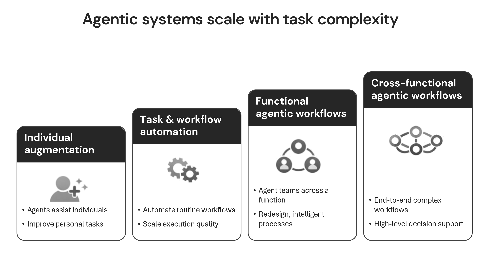
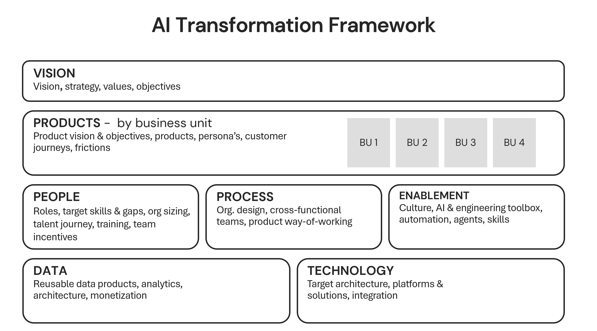
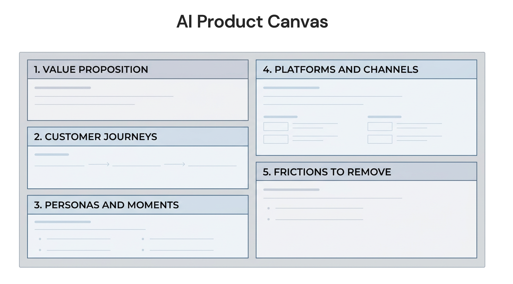
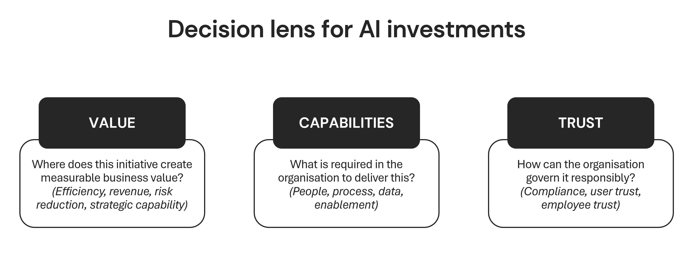
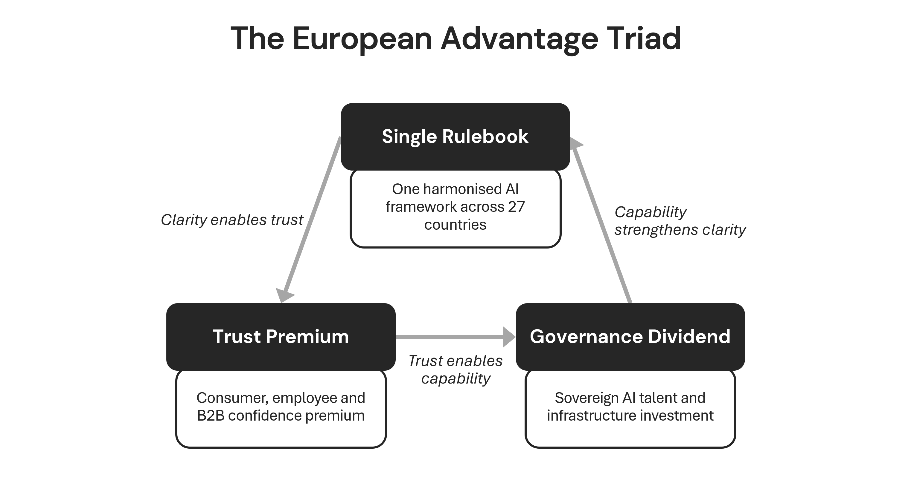

The Agentic Organisation
Copyright © 2026 by Stephan Hartgers-Rus
Published in The Netherlands by Agentic Press.
All rights reserved.
No part of this publication may be reproduced, distributed, or transmitted in any form or by any means, including photocopying, recording, or other electronic or mechanical methods, without the prior written permission of the author, except in the case of brief quotations embodied in critical reviews and certain other non-commercial uses permitted by copyright law.
ISBN 978-X-XXXXXX-XX-X (Hardcover)
ISBN 978-X-XXXXXX-XX-X (eBook)
First Edition, March 2026
This book is dedicated to my daughters Lysen and Zenna. You will enter a working world shaped by forces we are only beginning to understand. I hope this book plays some small part in making that world more human, not less. And to my beautiful wife, Lotte, who believes in me and makes everything possible.
The question most boardrooms are asking is the wrong one. "How do we adopt AI?" sounds strategic. It leads to pilots, proofs of concept, and a lot of activity. It also leads, in the vast majority of organisations, to no sustained impact.
The right question is harder. "How do we lead an organisation that can absorb and act on AI?" That question does not belong in the IT department. It belongs in the room where strategy, governance, and culture are decided. This book is written for the leaders in that room.
I have spent over twenty-five years helping organisations create value from technology, long before AI became a boardroom imperative. The pattern I see now is consistent. The technology works. The strategies are often sound. The failure is in the organisational response. European CEOs are not underprepared because they lack ambition or intelligence. They are underprepared because the mental model most of them are applying, incremental and project-based, is structurally incapable of capturing what this moment demands.
This is the largest paradigm shift since the industrial revolution. Treating it as another software rollout is the single most expensive mistake a leadership team can make.
Why a European perspective
This book is written from and for Europe deliberately. The European context is not a constraint to work around, it is a different playing field with distinct advantages. The EU AI Act gives one harmonised framework where other markets face fragmented or absent rules; public trust in the EU to regulate AI is higher than in the US or China, and evidence shows that well-designed regulation can unlock demand rather than block it. European labour dialogue with works councils, co-determination and collective agreements shapes how AI enters the workplace in ways that build workforce acceptance and, as some leading firms have found, surface concerns that customers share. GDPR and years of data-governance discipline have created a head start on the data foundations that AI transformation requires. None of that makes the transformation easy, but it means the playbook that works in Europe is not the same as the one written for other regions.
Who this book is for
This book is for CEOs, C-suite executives, and management teams of organisations in Europe. It is for leaders who want strategic clarity, not hype. Who understand that the real work of AI transformation happens in the organisation, not the algorithm. Who are willing to ask the harder questions and to lead from the top, because the evidence is unambiguous: transformation that is delegated fails; transformation that is CEO-led succeeds at a multiple of the rate of the rest.
What you will find here
The central idea is the Agentic Organisation: an organisation redesigned around human–AI collaboration, where humans and AI agents work as a unified system rather than tools bolted onto legacy processes. Getting there is not a technology project. It is a leadership project with a clear sequence: understand the shift, own the leadership requirement, learn what the destination looks like, then build it in stages with the right foundations and the right measures.
Part I lays out the burning platform. Why this moment is different. Why leadership cannot be optional. Part II defines the model: what the Agentic Organisation looks like, how transformation moves from individual to team to department to organisation, and how to decide where to invest to build value, capabilities, and trust. Part III turns to Europe: how regulation, trust, and pragmatism become advantages, and what leaders in six European companies actually did when the stakes were high. Part IV is the playbook: how to build your Agentic Organisation from foundation through activation to scale, what must be in place before and alongside transformation, what to measure, and why the final chapter is a leadership decision.
You will not find a catalogue of tools or a vendor guide. You will find frameworks you can use in the room, evidence from research and from the field, and a practical sequence with clear milestones. The goal is to give you the mental model and the next steps so that you can lead, not delegate.
When this book was written
This book was completed in March 2026. That matters. The data, studies, and market evidence cited here reflect what was known and interpretable at that moment. AI adoption curves, regulatory implementation, and the pace of agentic deployment are all moving quickly; by the time you read this, some numbers will be outdated, some expectations will have been overtaken by events, and new uncertainties will have emerged. The analysis and recommendations are based on today's interpretation, with many uncertainties acknowledged. Use the frameworks and the sequence; treat the specific figures and timelines as a snapshot, not a guarantee. The mental model and the leadership imperative, however, are built to last beyond any single data point.
Practicing What We Preach
Writing a book about the agentic organisation while relying entirely on traditional methods would have been inconsistent, and would have undermined the very argument this book makes. So I made a deliberate choice: I would use AI as a genuine working partner throughout the research and writing process. Not as a shortcut, but as a demonstration of what human-AI collaboration actually looks like in practice. That meant using AI to synthesise research across hundreds of sources, challenge emerging frameworks, stress-test arguments, and help translate complex ideas into clear prose. Every framework originated from my own thinking, built on over twenty-five years of working with organisations navigating technology-driven transformation. But AI helped me think faster, go deeper, and pressure-test conclusions in ways that would have taken far longer working alone.
I want to be transparent about what this means for you as a reader. The ideas, the judgments, the recommendations, and the responsibility for what is written here are mine. AI did not determine what matters or what to conclude. What it did was act as a tireless research partner, a rigorous editor, and a sounding board that never stopped asking: "but is that actually true?" In that sense, this book is not just about the agentic organisation. It is also a small proof of concept for it.
How to use this book
Read it in order if you want the full argument. Use the table of contents if you want to jump ahead: go to the AI Transformation Framework (Chapter 5) or the implementation playbook (Chapter 12) if you need a specific tool. Each chapter ends with reflection questions you can use with your team or your board. The 9 lessons in Chapter 11 (drawn from case studies) show how leaders decided under pressure; the lessons are meant to transfer, not the cases to be copied literally. Your context will differ, but the underlying patterns do transfer.
The cost of inaction is not zero. It is already accumulating in cost structure, talent pipeline, and competitive positioning. The organisations that will matter in three years are the ones that treat this as a leadership decision and act accordingly. This book is written to help you be one of them.
Ninety-five per cent of enterprise AI implementations fail to deliver sustained impact. Not because the technology does not work. Not because the strategy was wrong. Because organisations are treating the largest paradigm shift since the industrial revolution as though it were another software rollout.
The data on this is unambiguous. The MIT NANDA report, published in July 2025, drawing on over 300 AI initiatives across 52 organisations and 153 senior leader surveys, found that 95% of enterprise generative AI implementations fail to deliver sustained, measurable impact.1 A global survey of more than 1,000 senior executives found that only 5% of companies achieve AI value at scale, whilst 60% achieve no material value whatsoever.2
RAND puts the AI project failure rate at over 80%, double the rate of non-AI IT projects. S&P Global reports that 42% of companies scrapped most AI initiatives in 2025, up from 17% the year before.
These are not preliminary findings from a single study. They are converging conclusions from independent research programmes spanning thousands of organisations. And yet, eight in ten companies already use generative AI.3 Equally many report no significant bottom-line impact. The tools are everywhere. The value is not.
The paradox is striking because the technology does work. The companies achieving value at scale are achieving it dramatically: 2-3x conversion improvements, 80% reductions in processing time, hundreds of millions in measurable value. A Singapore bank grew its AI economic value from S$180 million to S$750 million in two years. A Dutch bank achieved a 90% pilot-to-production rate against an industry average of 30%. A German insurer reduced claim processing time by 80% through a seven-agent AI workflow launched in under 100 days.
These outcomes are real and replicable. The question is not whether AI can produce results of that order. It is why most organisations cannot access them despite considerable effort and investment.
The answer is one of the oldest problems in business: applying the wrong mental model to a categorically different kind of change. Most organisations are doing what early automobile buyers did when they called it a "horseless carriage": defining the new technology in terms of the old one. They are putting AI on top of existing processes, existing org charts, existing decision-making structures, and asking it to make things faster. That produces faster versions of the same thing. It does not produce transformation.
McKinsey, in its landmark September 2025 analysis of agentic AI, described this moment as "the largest organisational paradigm shift since the industrial and digital revolutions".4 That framing is not consulting hyperbole. It is an analytical claim with precise implications.
Paradigm shifts do not yield to incremental responses. The organisations that thrived during the industrial revolution did not optimise their horse-drawn carriages. They redesigned their operations around the principles that steam and mechanisation made possible. Those that treated the new technology as an upgrade gained temporary efficiency, then fell behind organisations that had redesigned entirely. The same pattern is now unfolding with AI, at a pace that makes the industrial revolution look glacial.
AI task completion capability is doubling every four months. The window for first-mover advantage is not widening. It is narrowing. The question this chapter asks is not whether you believe that. The data settles it. The question is whether you are leading as though you do.
Every technology wave produces bold claims about transformation. What makes this one categorically different is that the capability curve is exponential, the rate of acceleration is itself increasing, and the gap between leaders and laggards is already compounding in ways that are measurable and, for the laggards, increasingly difficult to reverse.
The numbers tell the story. Since 2019, AI task completion ability in a multitude of use-cases, with high quality output, has doubled every seven months. Since 2024, the rate has accelerated to every four months. As of late 2025, AI systems can complete approximately two hours of autonomous work without supervision, several hours in the March of 2026. The same trajectory, if it holds through 2027, puts that figure at four days: the equivalent of a mid-tenure employee operating independently for a full working week.
Each delay compounds. More compute, greater model efficiency, and fundamental changes in how AI systems are designed and deployed are driving what some researchers project could be a 10,000-fold increase in model capability within three years. The model that costs a department relatively little today does not simply become twice as capable in two years. It becomes capable of tasks that were impossible when the budget was approved.
This is the critical distinction: the rate of improvement is itself accelerating. Organisations planning on a linear trajectory are building for a world that will not exist by the time their plans mature. The strategy approved in January may be structurally obsolete by September, not because the strategy was bad, but because the underlying capabilities shifted faster than the planning cycle could accommodate. For leaders accustomed to three-year technology roadmaps, this compression is disorienting. It is also the new reality.
Unlike generative AI, which produces outputs in response to individual prompts, agentic AI plans, reasons, and takes sequences of actions without continuous human instruction. Predictive AI handles logic; generative AI handles creativity; agentic AI exercises what BCG describes as the "frontal cortex" function: planning, judgment, and orchestration.
Agentic AI
Agentic AI refers to AI systems that act autonomously to complete multi-step tasks, make decisions, and use tools or other agents to achieve a defined goal.
The organisations capturing this value are doing so visibly. Research from a global survey of more than 1,000 senior executives found that the top 5% of companies, those furthest ahead in AI, achieve 3.6 times the three-year total shareholder return of their peers, 1.7 times the revenue growth, and 1.6 times the EBIT margin. These leaders plan to spend more than twice as much on AI as the organisations trailing them.5
Agentic AI already accounts for 17% of total AI value in 2025, with projections reaching 29% by 2028. The gap is not a snapshot. It is a trend line with compounding momentum.
Agents can use tools, access data, communicate with other agents, and take action without step-by-step human instruction. In an organisational context, agents take on work that previously required human attention at every step: research, scheduling, analysis, compliance checking, decision preparation, and process execution.
AI agent
An AI agent is a software system that perceives its environment, plans actions, and executes tasks autonomously to achieve a defined goal.
The industry has moved through distinct phases, and each one has raised the stakes. In 2023, organisations experimented with generative AI on modest budgets and with considerable curiosity. In 2024, the "thousand flowers" phase arrived: every department launched its own AI initiative, chatbots proliferated, and individual productivity gains were real. But at the enterprise level, almost none of it compounded. Now, in 2025 and beyond, a small group of companies is focusing on the high-return transformations that produce structural change, whilst the rest remain scattered across initiatives that feel productive but do not add up.7
For European organisations, the context carries additional weight. Only 20% of EU enterprises use AI today. Large enterprises sit at 55%, but the spread is dramatic: Denmark at 42%, Romania at 5.2%. Over 60% of European firms remain at the earliest stages of AI maturity.
The investment gap is real. US private AI investment in 2024 reached $109 billion. Europe produces only three of the world's top AI models, compared to 40 in the United States. But the picture is not one-sided. A 2026 EU Commission-backed report found that Europe allocates a higher share of venture capital to agentic AI than the US, with Paris, Berlin, Amsterdam, Stockholm, Munich, and Barcelona as leading hubs.8 The raw materials for European leadership exist. The question is whether they will be assembled into something that compounds.
The companies generating breakthrough value, wherever they sit, share a characteristic that has little to do with which AI vendor they chose or how large their technology budget was. What they share is a commitment to treat AI as an organisational transformation, not a technology deployment. The common trait across the top performers is leadership-led transformation: leaders who understood that AI required a fundamentally different kind of response, and who committed to providing it.
Against this, the majority pattern is familiar. Grassroots AI experimentation creates cultural momentum and generates genuine individual gains. But it does not self-organise into enterprise-wide impact. Without clear direction from the top, experimentation remains fragmented, siloed, and ultimately shallow.
The numbers make this gap vivid. Research confirms that 91% of employees already use generative AI at work. Only 1% of companies report AI maturity. Individual adoption massively outpaces organisational readiness, because individual adoption follows tools and convenience, whilst organisational maturity requires deliberate architecture.
The employee using AI to draft emails faster is productive. A thousand employees doing the same, in isolation, without shared infrastructure or coordinated process redesign, is not a transformation. It is a thousand separate improvements that never connect.
Industry research names this the micro-productivity trap: grassroots experimentation that sparks innovation and cultural momentum but does not, and cannot, self-organise into enterprise-wide impact. Without strategic direction from leadership, those gains remain fragmented and shallow, never aggregating into the kind of structural change that moves the numbers on a board report.
BCG's 10/20/70 rule makes the structural issue plain. Algorithms account for 10% of what is required to generate real AI value. The technology backbone is another 20%. The remaining 70% is people and processes: the organisational decisions about how work is designed, how authority is allocated, how humans and AI agents collaborate, and how the organisation learns from its deployments. Most companies invest heavily in the 10% and treat the 70% as a downstream consequence. It is not. It is the primary variable.
This is the horseless-carriage problem in its purest form. Organisations are putting AI on top of existing processes, existing decision flows, and existing ways of working, then wondering why the results plateau. The technology is capable of something categorically different: not faster versions of current work, but fundamentally different ways of making decisions, flowing value, and collaborating across human and machine capability. Accessing that requires redesigning how the organisation works, not adding tools to how it already works.
One researcher captured the underlying challenge precisely: "Until we make an exponential shift in our mental model from spreadsheets to algorithms, AI tech will only give us an incrementally better spreadsheet." The shift required is not in the tools. It is in how leaders conceive of what the tools make possible.
Eric Kutcher, McKinsey's North America Chair, put the misframing plainly: "This is probably the biggest, most complex business transformation, but it's 80% business transformation and 20% tech transformation. That's different from how most people have thought about it".
Most have thought about it as the 20%. That is why 95% are failing.
The 95% failure rate is not primarily a technology problem. It is a governance and leadership problem.
Boards are failing to keep pace with the organisations they oversee. A Deloitte study of 695 board members across 56 countries found that 66% report limited to no knowledge or experience with AI: an improvement from 79% the prior year, but still a clear majority. Only 15% of boards receive AI-related metrics. Fewer than 25% have board-approved AI policies. Only 14% discuss AI at every board meeting. Meanwhile, 88% of their organisations already use AI in at least one business function.9
The gap between what is happening inside the organisation and what the board understands is itself a strategic risk. This is not abstract. When a board cannot distinguish between a productive AI pilot and a structurally limited one, it cannot allocate capital, attention, or governance effectively.
When AI is discussed once per quarter rather than at every meeting, the pace of the technology outruns the pace of oversight. And when 66% of board members lack the knowledge to ask the right questions, the organisation's AI ambitions are governed by people who cannot evaluate what they are governing.
It is not an organisation that uses AI tools. It is one whose operating architecture, decision-making processes, and workflow design are built for human-agent collaboration at scale. The Agentic Organisation does not add AI to the way it works. It works in a fundamentally different way because of AI.
The Agentic Organisation
The Agentic Organisation is a company redesigned so that humans and AI agents work together as a unified system.
The consequences of inaction are measurable. CEO-led AI transformations succeed at six times the rate of those delegated to IT or middle management. C-level executives deeply engaged with AI are twelve times more likely to be among the top 5% of companies winning with AI. The strongest single predictor of AI success is not the quality of the model, the size of the budget, or the sophistication of the strategy. It is whether senior leadership is personally, visibly, and irreversibly committed to leading the transformation. Delegation is not a governance posture. It is a failure mode.
The board's role is not to become technical. Governance at the right level of abstraction means determining the organisation's AI posture, demanding specific metrics at the board table, and actively challenging whether the organisation is pursuing genuine transformation or a portfolio of disconnected pilots.
What does that look like in practice? Boards should track ROI by business unit, the percentage of processes that are AI-enabled, workforce reskilling progress, regulatory alignment, and human override rates in agentic systems. They should know how many AI initiatives have moved from pilot to production, and why the ones that have not are stalled.
They should be able to distinguish between activity and impact. These are not IT metrics. They are organisational health metrics, and they belong on every board agenda.
Three out of four executives rank AI as a top-three strategic priority, yet only a quarter report meaningful value from it. That gap is a governance failure, not a technology failure. When the board treats AI as a technology investment delegated to the CIO, it gets technology-investment outcomes: isolated pilots, modest efficiency gains, and no compounding effect across the organisation. When it treats AI as the strategic inflection point it is, the entire governance posture changes.
For European boards, the compliance dimension adds urgency that cannot be deferred. Full obligations under the EU AI Act for high-risk AI systems apply from 2 August 2026, with penalties of up to 35 million euros or 7% of global annual turnover for prohibited practices. Prohibitions on unacceptable-risk AI have already applied since February 2025. AI literacy training is already required. Any firm using AI in or affecting EU users, regardless of where it is incorporated, falls within scope.10
Eurostat data from December 2025 shows that 20% of EU enterprises with ten or more employees now use AI, up from 13.5% the prior year. Large enterprise adoption stands at 55%.11 But adoption without governance is exposure. The World Economic Forum has identified Europe's AI adoption lag as an urgent structural challenge, not a cyclical one.[^12] The compliance clock is running in parallel with the competitive clock. Boards that treat the EU AI Act as a legal department matter, rather than a governance imperative, are misallocating both risk and attention.
The board's first task is not to approve an AI strategy. It is to treat this for what it is: a strategic inflection point that demands the urgency, oversight, and accountability that characterisation requires. Every quarter of delay is a quarter in which the organisations that have already committed are compounding their advantage, and a quarter in which the governance gap between what the board understands and what the organisation needs becomes harder to close.
This is not the cloud migration, the digital transformation, or the mobile-first pivot revisited at larger scale. It is a restructuring of how organisations create value, make decisions, and deploy human capability. The organisations already moving are compounding their advantages every quarter: in productivity, in talent, in data, in competitive positioning. The cost of waiting is not zero. It is already accumulating.
The leaders are not standing still. They are accelerating. Every quarter of compounding advantage in AI capability, data assets, and organisational learning widens the gap further. Research shows that the top 5% of companies already generate 2.7 times greater ROI from their AI investments, and they plan to invest more than twice as much again. This is not convergence. It is divergence, and it is structural.
The organisations that will define their industries over the next decade are making irreversible commitments now, not waiting for clarity that will not arrive on schedule. For European leaders specifically, the window carries a dual character: the competitive pressure to act, and the regulatory infrastructure that, properly understood, provides a foundation for trusted AI at scale. Both clocks are running. Neither pauses for deliberation.
Recognising the scale of the shift is the first step. The harder question is whether the organisation has the leadership to match it. Who is accountable? Where does responsibility sit? What happens when that accountability is diffuse, delegated, or absent?
The next chapter takes that question directly.
MIT, "NANDA Report", 2025 ↩
BCG, "The Widening AI Value Gap", September/October 2025 ↩
McKinsey, "CEO Playbook", June 2025 ↩
McKinsey, "The Agentic Organization: Contours of the Next Paradigm for the AI Era", September 2025 ↩
BCG, "The Widening AI Value Gap", October 2025 ↩
Eurostat, "AI in Enterprises", December 2025 ↩
EU Commission, "Agentic AI Venture Capital Report", January 2026 ↩
Deloitte Global, "Governance of AI: A Critical Imperative for Today's Boards, 2nd Edition", 2025 ↩
EU, "AI Act", 2024 ↩
Eurostat, "AI in Enterprises", December 2025 ↩
BCG, "The Widening AI Value Gap", October 2025 ↩
In 2023, Siemens faced a choice that every large industrial organisation eventually confronts: what kind of AI company do you want to become? The first path was familiar: embed AI tools into existing manufacturing processes, generate efficiency gains, show progress to the board. This is the path most industrial companies have taken, and it is defensible. Siemens had the process complexity, the legacy systems, and the deeply embedded engineering culture to justify a cautious approach. The second path was categorically different: treat AI not as an optimisation layer but as the operating infrastructure of a redesigned industrial enterprise. This path was slower to justify, harder to govern, and required a level of commitment that most 177-year-old institutions are not built to make. Siemens chose the second path.
The industrial manufacturing sector faces a particular version of the AI adoption problem. Complex machinery, multi-decade equipment cycles, and safety-critical processes create genuine reasons to layer new technology cautiously onto proven systems. The argument for incremental AI adoption in industrial settings is not irrational: it is, in fact, the responsible-sounding default. Most of Siemens' peers chose it.
What made Siemens' context different was a recognition that the expertise gap inside industrial AI was not a technology problem. The barrier was not that AI lacked capability for industrial applications. The barrier was that the interface between AI systems and human operators, engineers who had spent careers developing proprietary knowledge about complex machinery, was broken. Line workers could not query AI systems in natural language. AI outputs were not embedded in the workflows where decisions were made. And AI models trained on generic data had no understanding of the specific physics, tolerances, and real-world constraints of Siemens industrial environments.
This diagnosis led directly to the design of Siemens' response. Rather than deploying standard AI tools into existing processes, Siemens committed to building industrial-grade AI infrastructure: models built to understand machines, workflows, and real-world constraints, with human interaction embedded at the point of work. The decision was not made once; it was made at three distinct levels simultaneously. At the platform level, Siemens partnered with NVIDIA to build an Industrial AI Operating System: foundational infrastructure designed to run industrial AI at enterprise scale. At the facility level, it committed to the Digital Native Factory in Nanjing, a greenfield manufacturing site designed from scratch with AI at its core, rather than retrofitted onto an existing plant. And at the point of work, it deployed Industrial Copilot, an AI assistant embedded directly in the workflows where engineers and line workers make decisions, so that AI outputs appeared where human judgment was applied, not in a separate system that had to be consulted.
Committing to deep transformation over incremental AI adoption carried real costs. Building industrial-grade AI foundation models and a Digital Native Factory from the ground up takes longer than deploying off-the-shelf AI tools, and Siemens accepted a longer time to first visible output. The Digital Native Factory in Nanjing required a greenfield facility designed from scratch with AI at its core, a capital and governance commitment unavailable to organisations expecting AI to prove itself in existing facilities before receiving investment. The partnership with NVIDIA to build an "Industrial AI Operating System" creates a platform-level dependency: this is not a project you can walk away from if results are slower than expected. Embedding AI in workflows at the point of work, via Industrial Copilot, changes how engineers and line workers do their jobs immediately, not as a future aspiration, requiring a change management investment that incremental tool adoption does not. And deep transformation investments require board and leadership tolerance for ambiguity during the build phase. Siemens accepted this; most organisations do not have the governance structures to sustain it.
The operational results that are available are specific and credible, though full financial value attribution has not been made public. The Digital Native Factory in Nanjing demonstrated a 200% increase in manufacturing capacity and a 20% boost in productivity. At the Amberg plant, predictive maintenance AI delivered a 20% reduction in downtime. Industrial Copilot, the AI assistant embedded in industrial workflows, won the Hermes Award 2025, the industrial technology sector's leading recognition. Siemens' stated target for the broader platform is up to 50% productivity gains for industrial companies using their AI systems.
These are not marginal gains. A 200% increase in manufacturing capacity is a structural shift, not an efficiency improvement. The Hermes Award for Industrial Copilot is significant not because awards matter, but because it confirms that the interface problem, the gap between AI capability and human usability in industrial settings, was solved at a level the sector recognised as genuinely new. Siemens is currently assessed as the leading European competitor in industrial AI. That position was not inherited from 177 years of engineering heritage. It was built through deliberate, committed investment over two to three years.
The lesson is this: the right level of AI transformation is determined by your competitive position in three to five years, not by what your current processes can absorb today. If incremental AI adoption is your answer, you should be able to state clearly why that is sufficient to remain competitive as AI capability doubles every four months. If you cannot state that clearly, the question is not whether to commit more deeply, but when and at what pace. Siemens chose to answer that question in 2023. Most of its European industrial peers have not yet answered it at all.
Every major transformation that failed in the past twenty years had a sponsor. Someone who believed in it, championed it, hired good people, and then, gradually or suddenly, delegated it.
That is precisely how 95% of AI transformations fail.
The failure rate established in Chapter 1 is not primarily a technology problem. It is not a strategy problem. It is a leadership problem.
As Chapter 1 showed, organisations with strong executive sponsorship succeed at six times the rate of those that delegate to IT or middle management. C-level executives deeply engaged with AI are twelve times more likely to be among the top 5% of companies winning with AI.12
In 2025, 72% of respondents identified the CEO as the primary AI decision-maker, up from one-third the year before. That near-doubling in a single year signals a recognition that is spreading rapidly: AI transformation is not something a leader sponsors from a distance. It is something a leader does.
This chapter makes the case for what "in the room" actually requires, for leaders, their executive teams, and their boards. The argument is not that leadership matters. The argument is that the specific kind of leadership required for this transformation is categorically different from what most leaders are currently providing, and that the gap between the two is the single most correctable cause of failure.
The distinction matters because it is correctable. Technology limitations, market timing, regulatory constraints: these are external variables that leadership can influence but not control. Whether the leadership is personally, visibly, and irreversibly committed to leading the transformation is entirely within the leader's control. It is the one variable most likely to determine success, and the one most frequently abdicated.
Three interlocking failures explain why delegation kills AI transformation. Each operates at a different level of the organisation, and none can be fixed in isolation.
They reinforce each other. A leader who delegates creates a board that is not challenged to govern actively. A board that does not govern actively creates space for the C-suite to fragment ownership. A fragmented C-suite creates the conditions for the micro-productivity trap.
The loop is self-sustaining, and breaking it requires intervention at all three levels simultaneously.
Most leaders frame AI as an IT project, a cost centre, or an experiment to bolt onto existing processes. That framing determines everything that follows: who owns it, how it is governed, how success is measured, and when it can be defunded.
The required mental model is the one Chapter 1 established: this is 80% business transformation and 20% technology transformation. That is a structural claim about where value is created and where it is lost, not a rhetorical device.
The organisations stuck in the micro-productivity trap are investing heavily in the 20% and treating the 80% as a downstream consequence. It is not. It is the primary variable.
The evidence of mismatch is stark. Organisations are abandoning AI initiatives at a rapidly accelerating rate.13 Failure in this field is now far more common than in traditional technology deployments.
These are not technology failures. They are the predictable outcome of applying the wrong organisational model to a categorically different kind of change.
Meanwhile, the leaders who have adopted the right mental model are pulling away. Research consistently shows that only a small minority of firms achieve AI value at scale.14 Those that do commit far more than the average organisation, both in total investment and in workforce upskilling.15 They are not spending more on better algorithms. They are spending more on the organisational redesign that makes algorithms valuable.
The paradox McKinsey calls the "GenAI Paradox" captures this precisely: the technology is advancing at exceptional speed and capability, while organisational value creation lags behind. Nearly eight in ten companies report using generative AI, yet just as many report no significant bottom-line impact.15 Usage without leadership-driven architecture produces activity, not outcomes. The organisations that have broken through the paradox did so not by finding better tools but by changing who owns the transformation and how the organisation is structured to absorb it.
The disconnect between AI adoption velocity and board-level governance is the single greatest enterprise risk most organisations are not measuring.
While deployment of AI across business functions is now widespread, board-level capability continues to lag. Most directors report a limited understanding of the technology, and few organisations have formal policies or regular board-level discussions.16
These trends have shown some improvement over time, but the underlying problem remains. The gap between functional adoption and governance maturity is the point, and that gap has not closed.
What Chapter 1 established as a governance gap, this chapter reframes as a leadership accountability failure. The board is not underperforming because its members lack technical aptitude. It is underperforming because the CEO has not structured the governance agenda to demand better. Boards govern at the level leadership asks them to govern. When the leader frames AI as an IT project, the board asks IT-level questions.
A board that cannot distinguish between the three levels of the paradigm shift, between bolt-on activity and genuine redesign, cannot ask the right questions about the organisation's AI programme. A board that does not ask the right questions will approve strategies, budgets, and timelines calibrated to a different kind of change than the one actually underway.
For European boards, the governance imperative has a regulatory dimension that cannot be deferred. The EU AI Act creates direct obligations on organisational leadership: prohibited-risk provisions applied from February 2025, AI literacy training is already required, and full high-risk system requirements apply from August 2026. Penalties reach up to 35 million euros or 7% of global annual turnover.17 These are not IT compliance tasks. They are leadership accountability obligations that sit with the board and executive team.
The Act requires organisations to complete an AI inventory with risk classification, clarify their supply chain role, implement risk management systems, establish AI literacy training, and conduct fundamental rights impact assessments. Each of these is a leadership-level decision, not an IT task.
European boards that treat the EU AI Act as a legal department matter are misallocating both risk and attention. The compliance clock runs in parallel with the competitive clock, and both demand the same thing: governance that operates at the level of the transformation, not beneath it.
Transformation stalls when it is owned by one function. The pattern is consistent: a CEO announces an AI strategy, appoints a Chief Digital Officer or Chief AI Officer, funds a programme, and then returns to other priorities. The appointed leader has accountability without authority. The rest of the C-suite has neither accountability nor urgency. The programme fragments.
The gap between leadership perception and organisational reality is wider than most executives realise. Employees are using AI three times more than their leaders estimate, with 91% of employees already use generative AI at work, against only 1% of companies report AI maturity.18
Consider what that gap means in practice. Across the organisation, individuals are already building workflows, automating tasks, and experimenting with AI tools. They are doing so without coordination, without governance, and without any connection to the organisation's strategic priorities.
Individual adoption massively outpaces organisational readiness because individual adoption follows tools and convenience, whilst organisational maturity requires deliberate architecture.
One in three workers actively act against corporate AI policies. Forty-one per cent of millennial and Gen Z employees engage in non-compliance with AI policies.19 Three-quarters of organisations are at or past the change saturation point. These are not signs of employee resistance to technology. They are signs of an organisation where leadership has not created the conditions for technology to be adopted coherently.
The biggest barrier to scaling AI is not employees. They are ready. The barrier is leaders who are not steering fast enough.
The role that research consistently identifies as critical: the domain leader at N-2 or N-3 level who bridges strategy and execution, exists in only 6% of companies in any meaningful form.20 Without these leaders, without shared accountability across every C-suite function, the leader's commitment dissipates through the organisation like heat through an uninsulated building. The intent is there. The architecture to sustain it is not.
As Allianz COO Barbara Karuth-Zelle has observed, digital and AI transformations are not mainly about the technology but rather the mindset, the people, and the organisation. That observation from a senior European executive leading one of the continent's largest AI programmes is structural, not rhetorical.
The C-suite alignment deficit is not a people problem in the human resources sense. It is a design problem. The executive team has not been structured to govern this kind of change, and most organisations have not yet restructured it.
The argument of this chapter reduces to a specific claim: the gap between what AI transformation requires of leadership and what leadership is currently providing is the single most correctable cause of the 95% failure rate. Correcting it requires action at three governance levels simultaneously.
Leaders must lead from the front, personally and visibly. Trailblazers, the 15% of leaders research identifies as achieving AI value at scale, spend six or more hours per week upskilling on AI. They commit three times the investment of average leaders and invest twice as much in workforce development. Half of all leaders believe their job stability depends on getting AI right.12 Among non-leaders, more than half believe that leaders or boards should resign if the company loses market share due to inadequate AI strategy. This is not a distant risk. It is a present expectation.
Leading from the front means more than allocating budget and attending briefings. It means reframing AI from an IT project to an operating model redesign. It means being personally fluent enough to challenge assumptions, shape priorities, and make the architectural decisions that determine whether the organisation is building at the bolt-on level or the redesign level.
It means signalling irreversibility: making clear, through actions and resource allocation, that this transformation is not a programme that can be quietly wound down at the next quarterly review.
The C-suite must share accountability. Each executive team member must own AI outcomes within their domain. The CFO owns the financial architecture of AI investment. The CHRO owns the workforce transformation. The COO owns the process redesign. The CTO provides the technical infrastructure.
No single role can carry the full weight. When AI is owned by one function, it is governed as a function-level initiative. When it is owned by the executive team collectively, it is governed as a transformation.
The domain leader role at N-2 or N-3 level: the person who bridges strategy and execution within each function, is what research describes as "probably the single most critical role" in scaling AI. These are not new hires. They are existing leaders given explicit accountability, development, and the authority to make AI-related decisions within their domains. Without them, the space between executive intent and operational reality remains empty.
Shared accountability also prevents the micro-productivity trap from the other direction. When each function owns its AI outcomes, use cases are designed to connect across functions rather than optimise within silos. The difference between a portfolio of disconnected AI pilots and an organisation-wide transformation is not the number of pilots. It is whether anyone has the authority and the incentive to connect them.
Boards must move from passive oversight to active governance. The minimum standard is clear: AI must be a standing agenda item at every board meeting, not a periodic update. Boards should demand specific metrics, not project-level status reports. The metrics that matter are organisational health indicators: ROI by business unit, the percentage of processes that are AI-enabled, workforce reskilling progress, regulatory alignment with the EU AI Act, and human override rates in agentic systems.
Beyond metrics, the board must determine the organisation's AI posture. Is the organisation designing at the bolt-on level or the redesign level? Is the current pace of transformation sufficient given the rate of competitive change? Are the governance frameworks in place to manage agentic systems that make autonomous decisions? These are board-level questions, not management-level questions, and they require board members who are fluent enough in AI to ask them with precision.
Governance maturity determines the adoption ceiling. Research shows that in high-maturity organisations, 57% of business units trust and are ready to use AI, versus only 14% in low-maturity organisations.21 The board's governance posture is not a downstream consequence of the AI programme. It is a structural determinant of how far the programme can go.
Over 60% of European firms are still at the earliest stages of AI maturity.22 Western Europe scores well on aggregate AI readiness indices, but this masks a governance maturity gap.
The board knowledge deficit is consistent across geographies, and in Europe the accountability obligations of the EU AI Act make it acutely consequential. A board that lacks AI fluency in a jurisdiction that assigns direct legal accountability for AI governance is not merely underperforming. It is exposed.
Leadership is the precondition, not one factor among many. Without personal commitment from the leader, shared accountability across the executive team, and active governance from the board, the frameworks, playbooks, and strategies in the rest of this book will not produce results. The evidence does not leave room for ambiguity on this point.
Navrina Singh, CEO of Credo AI, put the timeline starkly: if you are not using AI as a company, you are going to be pretty irrelevant in the next 18 to 24 months. That is not hyperbole. It is a description of the competitive dynamics already visible in the data.
The argument of this chapter is settled by the evidence, not by assertion. Six times the success rate with executive-led transformations. Twelve times the likelihood of being in the top 5% when leaders are deeply engaged. A near-doubling of abandonment rates when they are not. The data points all in one direction.
The question is no longer whether to lead, but what the destination looks like. Now that the leadership precondition is established, the next chapter answers the question every committed leader asks next: what exactly are we building? Chapter 3 defines the Agentic Organisation in concrete, operational terms: the agentic employee, the shift from task-doer to orchestrator, and three key roles.
S&P Global Market Intelligence, "Outlook on Generative AI", 2025 ↩
BCG, "The Widening AI Value Gap", October 2025 ↩
Deloitte Global, "Governance of AI: A Critical Imperative for Today's Boards, 2nd Edition", 2025 ↩
EU, "AI Act", 2024 ↩
McKinsey, "Superagency in the Workplace", January 2025 ↩
Writer / Workplace Intelligence, "State of AI at Work", 2025 ↩
McKinsey, "CEO Playbook for AI Transformations", June 2025 ↩
Gartner, "AI Maturity and Business Outcomes Survey", Q4 2024 ↩
Cisco, "AI Readiness Index", 2025 ↩
In the early 2010s, DBS Bank faced a choice that many large incumbents have faced and most have resolved by taking the easier path. The bank, headquartered in Singapore and one of the largest in Asia, carried a reputation summarised bluntly by its own staff: "Damn Bloody Slow."
The dilemma was not whether to transform, but how to govern the transformation. The first path was to appoint a Chief Digital Officer, fund an innovation unit, set ambitious targets, and let technology experts lead. That path offered the CEO political cover, preserved his bandwidth for other priorities, and was how most peer institutions were approaching the problem.
The second path was for the CEO to personally own the transformation, reframe the organisation's competitive identity from the top, and accept that failure would be his failure. The first path was safer in the short run. The second path was more demanding and carried greater personal risk. Piyush Gupta chose the second.
The external pressure at the time was real but not yet existential. Fintech challengers were growing rapidly across Southeast Asia, and technology giants were expanding into financial services. For a regional bank with deep retail and corporate roots, the threat was not immediate collapse but gradual commoditisation: a slow erosion of margin, relevance, and talent to faster-moving competitors.
The internal context was equally challenging. DBS was a large, complex institution with entrenched processes, multiple legacy systems, and a workforce shaped by decades of banking norms. Previous attempts at digital improvement had produced isolated gains without systemic change, a pattern familiar to most large organisations.
The critical decision Gupta made was not simply to invest in technology. It was to redefine the organisation's competitive reference point entirely. He introduced what the bank called the GANDALF framework: a standing decision to benchmark DBS not against other banks but against Google, Amazon, Netflix, Apple, LinkedIn, and Facebook.
This was a CEO-level act of strategic reframing. It changed what "good" meant across the organisation, what hiring standards looked like, and what the board expected to see. It was irreversible in the sense that it publicly committed the organisation to standards it could not quietly walk back. That kind of commitment cannot be delegated; it can only be made by the person accountable for the organisation's direction.
The path Gupta chose came with costs that are rarely acknowledged in the retelling:
The financial results are specific enough to stand without embellishment. The economic value DBS attributed to AI grew from S$180 million in 2022 to S$750 million in 2024, with S$1 billion projected for 2025. Return on equity doubled, from 8.4% to 18%. The share price tripled over the transformation period. These are not one-off efficiency gains; they reflect a sustained change in the bank's operating model and competitive position.
DBS is one of only two banks globally, alongside JPMorgan Chase, to have publicly disclosed total realised AI value. That transparency is itself a governance signal: it reflects a discipline of measurement and accountability that begins with what the CEO models and the board demands.
The transformation did not move from digital banking to AI-native operations in a single step; it progressed as a continuous programme, sustained by consistent leadership engagement rather than project-by-project governance.
The case is not a clean success story with no uncertainty along the way. Transforming a legacy institution to technology-company standards takes years, involves failures and course corrections, and requires the CEO to hold the line when the organisation's natural instinct is to revert to what it knows. What the DBS case demonstrates is not that the outcome was certain, but that it was made more likely by the governance structure at the top.
DBS Bank is in Singapore, not Europe, and the regulatory environment, ownership structure, and competitive context differ. The governance principles, however, are directly transferable.
What Gupta did that most European CEOs have not done is make a public, irreversible commitment, in the form of a redefined competitive reference point, that he then stayed accountable to as the transformation scaled. The transferable lesson for a European CEO is not to copy the GANDALF framework. It is to identify the equivalent act in your organisation: the decision or commitment that is visible enough, specific enough, and consequential enough that it cannot be quietly reversed at the next quarterly review.
Personal, visible, and irreversible are not adjectives. They are the governance conditions under which AI transformation succeeds. DBS is the clearest available evidence that when those conditions are present at the top, the organisation follows.
Before the playbook, before the phased roadmap, before the first pilot, a leader needs a concrete working definition of the destination. Not a consultant's abstraction. Not a vendor's product demo. A shared, operational picture of what the organisation looks like after transformation.
Chapters 1 and 2 established two preconditions: the scale of the shift and the non-negotiable role of leadership. Most leaders now accept both. Acceptance, however, is not the same as clarity. Ask a leadership team to describe the Agentic Organisation they are building, not the tools they are buying, and the answer is typically vague, technology-centric, or borrowed wholesale from a vendor pitch.
That gap between commitment and clarity is where investment scatters, pilots multiply without connecting, and the micro-productivity trap persists. Every subsequent decision, from hiring to governance to technology investment, needs an anchor. This chapter provides it.
The Agentic Organisation is built on employees enabled by AI. The shift from task-doer to orchestrator is not a minor adjustment in job description. It is a fundamental redefinition of what it means to be productive, skilled, and valuable. The structured model that organises the full transformation, the AI Transformation Framework, comes in Chapter 5. This chapter lays the human and conceptual foundation.
The vast majority of companies now use generative AI, yet most report no significant bottom-line impact. That paradox, first identified in Chapter 1, has a specific cause: organisations lack a coherent model of what they are building towards.
The evidence bears this out. Most AI deployment effort is consumed not by the AI itself but by data engineering, stakeholder alignment, governance, and workflow integration.23 Only a small fraction of organisations have truly AI-ready data, and even fewer have successfully deployed AI agents at scale, despite widespread interest and vendor noise.24
Confidence in fully autonomous agents has declined significantly in a short period. This shift does not reflect disappointment with AI capability. Instead, it shows a growing recognition that deploying agents without redesigning how the organisation works around them produces fragile, ungovernable results.
Meanwhile, adoption continues at pace. A vast majority of executives report already adopting AI agents, and most plan to increase their budgets in the near future.25 Yet most are treating AI agents as bolt-ons to existing workflows. The operating model transformation is not happening. Many agentic AI projects are predicted to fail, not because the technology underperforms, but because the organisations deploying it have not defined what success looks like beyond the pilot.26
As ING's Chief Analytics Officer Bahadir Yilmaz has observed: "The conversation is no longer about if AI works. It's about understanding where it works and, more importantly, where it matters to the client."27 That is the European pragmatic lens at its best: the problem is not technology but where and how to deploy it.
The gap is organisational, not technical. Algorithms account for only a small portion of what is required to generate real AI value. The technology backbone is another component, but the vast majority of the effort must be placed on people and processes.28 Without a shared picture of how those people and processes operate in the transformed state, how product, people, process, technology, and data fit together, investment scatters across disconnected pilots.
The micro-productivity trap persists because there is no shared picture of what lies beyond it. More technology does not solve this. A clear destination does.
The Agentic Organisation, as defined in Chapter 1, is a company redesigned so that humans and AI agents work together as a unified system. This chapter makes that definition concrete by focusing on its central element: the people inside it.
May Habib, CEO of Writer, framed the shift precisely at the World Economic Forum in 2025: "The enterprise was designed for a world where execution was the primary constraint. Today, execution is cheap, abundant and instantaneous. Now the constraint is orchestration."29
That single observation captures the transition at the heart of the Agentic Organisation. When AI agents can execute at near-zero marginal cost, the scarce resource is no longer the ability to do work. It is the ability to direct, coordinate, and judge the work that agents produce.
This is where the agentic employee enters. The term "agentic" itself means "capable of achieving outcomes independently." Applied to employees, it describes a person who is empowered, through AI, to achieve far more than they could alone, whilst maintaining accountability for outcomes. The agentic employee is not simply someone who uses AI tools. It is a fundamentally different way of working.
The Agentic Employee
An agentic employee is a person who works alongside autonomous AI agents as teammates, orchestrating rather than merely executing.
They set goals, define boundaries, review outputs, and handle exceptions, whilst agents handle routine and complex execution. The best agentic employees create and share reusable AI workflows, producing a compounding network effect where one person's innovation multiplies the capability of everyone around them.
Three distinct profiles are emerging in organisations that have made this shift:
| Profile | Focus | Example |
|---|---|---|
| Supervisor | Orchestrates multiple AI agents across workflows | A project manager who coordinates AI agents handling scheduling, reporting, and resource allocation |
| Specialist | Handles exceptions and edge cases that agents cannot resolve | A compliance officer who reviews flagged transactions that agents escalated |
| Augmented Frontline Worker | Uses AI agents to eliminate repetitive tasks and focus on human-centric work | A customer success representative whose agent handles data gathering, letting them focus on relationship-building |
These profiles describe ways of working with agents, not job titles. They are already visible in organisations that have moved beyond bolt-on AI adoption. How they map into formal positions, such as Domain Leader, Agent Orchestrator, and AI Product Manager, is covered in Chapter 7.
The productivity evidence is substantial. A software team where output increased by 39% after AI agents became the default platform.30 Crucially, more experienced workers benefit more from agents, with one standard deviation higher experience correlating with 6% higher acceptance rates, whilst junior workers benefit more from tool-only AI. A legal technology trial across 12 firms found a 41% average productivity increase. Studies show time savings of 65 to 86% versus human-only workflows.31
In each case, the gains came not from the AI alone but from the redesigned relationship between person and agent. The supervisor who coordinates agents effectively produces more than the specialist who works in isolation. The augmented frontline worker who shares a skill across the team multiplies impact beyond their own output.
The mindset shift required is substantial:
| Old Mindset | Agentic Mindset |
|---|---|
| "I do the work" | "I orchestrate the work" |
| "AI is a tool I use sometimes" | "AI agents are teammates I collaborate with constantly" |
| "My value is what I produce" | "My value is the outcomes I enable" |
| "I learn skills to stay relevant" | "I create and share skills to multiply impact" |
| "I follow processes" | "I design and improve processes" |
| "I need instructions" | "I set goals and boundaries for agents, then review results" |
The demand for this kind of fluency is growing at an extraordinary rate. Agentic AI fluency demand grew nearly sevenfold in two years. This is no longer a capability reserved for technical roles. It is foundational across every function: finance, HR, marketing, operations, legal, customer service, and product development all require people who can work effectively alongside agents.
The shift from left column to right in the table above is not something that happens through a training programme alone. It requires redesigned roles, new performance metrics, and a culture that rewards orchestration and skill-sharing rather than individual output. That is an organisational design challenge, not a learning and development challenge.
At the operational level, the agentic employee's work is built on two concepts that deserve explicit definition. Human-in-the-loop, also referred to as HITL, ensures that agents handle routine execution autonomously whilst humans retain oversight where judgment, accountability, or ethical consideration is required.
Human-in-the-Loop
Human-in-the-loop is a design principle for human-agent workflows in which human checkpoints are placed at high-stakes decision points rather than throughout every step.
The second concept is the building block of agentic capability. Skills are the compound interest of the Agentic Organisation: when one person builds a skill and shares it, the capability multiplies across teams and functions. The best agentic employees do not just use AI; they create skills and share them, turning individual innovation into organisational capability.
A Skill
A skill is a reusable AI workflow: a discrete, repeatable sequence of agent actions built by an employee and shared across the organisation.
Skills represent a deeper treatment that Chapter 7 (enablement) and Chapter 8 (enterprise technology stack) will address. For now, the critical point is that the Agentic Organisation is not built by deploying AI tools. It is built by developing and enabling people who can orchestrate agents, exercise judgment where it matters, and create reusable workflows that compound across the organisation.
Without individuals who take initiative in working with AI, and without clarity on the different roles and behavioural shifts required, even the most carefully designed structure remains abstract. A blueprint only becomes real when people understand their part in it and are prepared to act accordingly.
Chapter 5 introduces the full structural model that connects vision, customer offering, ways of working, and enabling infrastructure. This chapter provides the human foundation that makes that structure meaningful.
Transformation at this scale creates governance demands that extend well beyond the technology function. The governance gap identified in Chapters 1 and 2, where board awareness lags behind organisational adoption, takes on a specific shape when agentic employees and AI agents are involved.
While most organisations now have AI agents running in production, only a minority have rigorous governance mechanisms in place. Deployment is outpacing governance by a wide margin, and the consequences are predictable.
Inconsistent decision boundaries and unmonitored agent actions lead to the proliferation of shadow agents. These are tools deployed by employees without oversight, creating hidden risks that the organisation is not yet equipped to manage.
Governing the agentic employee requires three elements operating together.
Tiered autonomy defines what agents and employees can do independently, with escalation to human oversight for high-impact decisions. An agent that schedules meetings operates with full autonomy. An agent that recommends credit decisions operates under supervision. An agent that triggers a financial transaction requires explicit human approval. The boundaries are risk-proportionate, not uniform.
Comprehensive logging captures every agent action for inspection, audit, and compliance. When agents make decisions at speed and scale, traceability is not optional. Without it, the organisation cannot answer the most basic governance question: what did the agent do, and on whose authority?
Circuit breakers provide real-time monitoring that can enforce boundaries and halt agent actions when they exceed defined parameters. Pre-deployment assessment, covering data permissions, system access, and risk classification, completes the picture.
Beyond these formal mechanisms, organisations must address shadow agents: the quiet proliferation of unapproved autonomous tools deployed by employees without IT oversight. When individual adoption outpaces organisational governance, which the 91% adoption versus 1% maturity gap from Chapter 1 confirms is already happening, shadow agents are not hypothetical. They are present.
As Allianz Chief Transformation Officer Maria Janssen described the approach behind Project Nemo: "AI agents support our teams by making recommendations, but the ultimate responsibility always rests with a claims professional."32 That principle, human accountability for agent-assisted decisions, is the governance baseline for the Agentic Organisation.
For European organisations, the governance requirements carry additional specificity. The EU AI Act creates obligations that map directly onto the dimensions of the Agentic Organisation.
AI literacy obligations under Article 4, in force since February 2025, require organisations to ensure sufficient AI literacy among all staff who interact with AI systems.33 Risk classification requirements, active from August 2026, demand governance of the technology and process layers.
Data protection obligations under the GDPR intersect with agentic AI in ways that are already consequential. A simple AI scheduling agent can trigger purpose creep, special-category data rules, cross-border transfer restrictions, and prohibitions on fully automated processing, all in a single workflow.
European co-determination frameworks add a governance dimension that, properly understood, becomes a design advantage rather than a constraint. Germany's Works Constitution Act requires employers to inform works councils before introducing AI systems, grants consultation rights, and triggers co-determination when AI can monitor employee behaviour.34 Deutsche Telekom's AI Manifesto, co-created with its Group Works Council, demonstrates that institutionalised stakeholder engagement produces faster, more durable adoption than top-down mandates.35
The consequences of proceeding without proper governance are concrete. A 2025 French court suspended an AI project and imposed penalties of 1,000 euros per day for 90 days, plus 5,000 euros in damages to the works council, for deploying without consultation.36 Allianz, by contrast, signed the EU AI Pact in November 2024, treating proactive compliance as a competitive differentiator rather than a cost of doing business.37
Building governance into the design from the outset, rather than retrofitting it after deployment, is what separates organisations that scale from those that stall. The board needs a structured way to assess transformation progress across all dimensions rather than relying on anecdotal pilot reports. The AI Transformation Framework introduced in Chapter 5, and the governance and measurement tools developed in Chapters 13 and 14, provide that structure.
The Agentic Organisation is defined not by its technology but by its people: agentic employees who orchestrate rather than execute; three profiles that describe how work is distributed between humans and agents; skills that compound capability across the organisation; governance that keeps pace with deployment.
But a picture is not a route. The next question is: how does transformation actually scale? The answer is not "everywhere at once." It progresses through four distinct tiers, each with different governance, different leadership demands, and different measures of success. Chapter 4 introduces The Four Tiers of Transformation, from the individual to the team to the department to the organisation, and shows why skipping a tier, or assuming one tier's success automatically produces the next, is the most common structural mistake in AI programmes.
Deloitte, "Tech Trends 2025", 2025 ↩
Capgemini Research Institute, "AI Agents in the Enterprise", 2025 ↩
PwC, "AI Agent Survey", 2025 ↩
Gartner, "Hype Cycle for Artificial Intelligence", 2025 ↩
Yilmaz, World Economic Forum, Davos, 2025 ↩
BCG, "From Potential to Profit: Closing the AI Impact Gap", 2025 ↩
Habib, World Economic Forum, Davos, January 2025 ↩
Sarkar, "AI Agents and Software Productivity", SSRN, November 2025 ↩
Stanford / World Bank, "AI Impact on Work Productivity Survey", 2024 ↩
Allianz, "Project Nemo", 2025 ↩
EU, "AI Act", 2024 ↩
Germany, "Works Constitution Act (Betriebsverfassungsgesetz)", 2021 ↩
Deutsche Telekom, "AI Guidelines", 2023 ↩
Nanterre Tribunal Judiciaire, ruling on AI workplace consultation, February 2025 ↩
Allianz, "EU AI Pact", November 2024 ↩
In 2023, Klarna faced a decision that most European CEOs will recognise in outline, even if the scale was unusual. The Swedish fintech was growing fast, its customer service costs were rising in proportion, and AI capabilities had reached a point where full automation of routine interactions seemed both feasible and financially compelling. CEO Sebastian Siemiatkowski drove the choice hard: deploy an AI assistant at scale, reduce headcount, and let the numbers make the argument. The alternative, a more cautious hybrid model with slower cost reduction and messier governance, looked like hesitation dressed up as prudence. Klarna chose speed.
The competitive logic was coherent. Klarna's AI assistant launched handling 2.3 million customer conversations in its first month alone, equivalent to 700 full-time agents. Resolution time dropped from 11 minutes to under 2 minutes. The projected annual profit improvement was $40 million. By the metrics that boards track, it was working.
Siemiatkowski was not operating in a vacuum. The broader fintech market was moving fast, and the pressure to demonstrate AI-driven efficiency to investors was real. Klarna's workforce was cut by approximately 40%. The message, internally and externally, was that the AI-first model was the future.
The problem surfaced gradually, and then clearly. Customer satisfaction for routine, low-stakes interactions remained comparable to human performance. But for complex, emotionally charged cases, the gap opened up. Klarna's own research found that 86% of customers prefer empathy over speed when their issue is genuinely difficult. No matter how fast the resolution, customers in distress were not satisfied by a system that could not meet them where they were. Siemiatkowski later acknowledged directly: "cost unfortunately seems to have been a too predominant evaluation factor."
Klarna's original decision involved real sacrifices, made under real pressure:
Klarna partially reversed course. Human agents were re-hired for a hybrid model in which AI handles routine volume and human agents manage high-complexity, emotionally sensitive interactions. The efficiency gains from automation were real and largely retained. The experience the AI assistant delivered for straightforward queries remained strong. What changed was the design: rather than a binary choice between automation and human service, Klarna moved to a model that assigned each type of interaction to the party best equipped to handle it.
Siemiatkowski's summary was precise: "AI gives us speed. Talent gives us empathy." That formulation matters because it reframes the question. The dilemma was never automation versus people. It was whether the organisation had a clear enough model of human-agent collaboration to design the division of work deliberately, rather than discovering it through reversal.
Klarna also continued to build outward. Its Agentic Product Protocol launched as an open standard making over 100 million products discoverable by AI agents across 12 markets. AI-driven dynamic product features with Google Cloud lifted in-app time by 15% and orders by 50%. The lesson was not that AI failed; it was that automation without deliberate design of the human layer produces a correction.
Klarna's experience maps directly onto what this chapter argues: the Agentic Organisation is not defined by the AI it deploys, but by how it organises people, processes, products, technology, and data around human-agent collaboration. That definition requires a conscious decision about what belongs to agents and what belongs to people, made before deployment at scale rather than after. Klarna should have asked several questions for making that decision deliberately: what is the model we are building? What does the customer experience in each interaction type? Which employee profile handles which exception? And what data and technology do we need to make the design work? Klarna's reversal was not a failure of AI. It was a failure to answer those questions in order.
The decision rule for European CEOs is this: before you automate a customer-facing workflow, define which interactions require human judgment, and build the governance to enforce that boundary. Speed and empathy are not in conflict. They require different designs.
The pattern repeats across every failed AI programme. A handful of employees discover that agentic tools can compress hours of work into minutes. Their enthusiasm spreads to a team. A department runs a pilot. Results are impressive. And then nothing compounds. The organisation barely moves.
This is not a failure of ambition. It is a failure to align the transformation path with organisational maturity.
Local pilots and local initiatives are point solutions: they deliver value where they are deployed, but they do not add up to organisation-wide change. As Chapter 3 established, the people who learn to work alongside AI agents as thinking partners achieve orders-of-magnitude higher output. That kind of success can seed a pilot, and pilots can produce compelling results. The structural problem is that pilot success in one place rarely becomes reusable capability elsewhere. A win in one team or one function stays exactly there unless the organisation is deliberately built to let capability compound.
Local wins do not automatically become team capability. Team capability does not automatically become departmental transformation. And departmental wins do not automatically become organisational change.
Each tier requires different leadership. Each demands different governance. Each is measured by different indicators of success. The failure to recognise this is structural, not incidental. European leaders are underprepared for this transformation in part because they assume that investment at the top will cascade downward. It does not. Capability compounds only when the path through the tiers is chosen deliberately, based on the organisation's existing foundation.
Individual adoption has massively outpaced organisational readiness. This gap with the limited organisational maturity is not accidental. It is the predictable result of most leaders getting the sequence wrong: investing in enterprise-level ambitions before building the individual fluency and team-level norms on which those ambitions depend.
The evidence for bottom-up sequencing is consistent. Enterprise deployments that succeed empower power users and line managers rather than relying on centralised labs. As Chapter 1 established, the vast majority of real value comes from people, processes, and culture. This foundation is built tier by tier and cannot be installed from the top.
Failures in this space describe a similar pattern. Most AI transformations struggle to deliver measurable returns, often stalling at the pilot stage.38 Only a small fraction of local initiatives ever reach full production or add up to organisation-wide change. The consistent thread is either a top-down, enterprise-first approach that attempts to bypass the foundational tiers, or a proliferation of point solutions that never connect into a path that compounds.
A significant self-assessment gap compounds the problem. Many leaders believe their organisations are ready for advanced maturity, yet the reality suggests otherwise.39 This distance between perceived and actual readiness highlights a structural misunderstanding: leaders assume they have reached advanced stages when their organisations are still mastering the basics.
European leaders face an additional dimension. The EU AI Act, Article 4, which took effect in February 2025, makes AI literacy a legal requirement for all staff interacting with AI systems.40 Tier 1 is now a regulatory floor, not an optional starting point. Organisations that have underweighted individual fluency investment must now treat it as a compliance obligation as well as a strategic one.
The choice of path matters more than the level of ambition. A four-tier progression is the route through which AI capability typically compounds. These tiers, ranging from individual span to enterprise-wide coordination, are not a mandatory ladder. They are strategic interpretations of how maturity should advance.
The structural mistake that explains most failure rates is not skipping a tier per se, but skipping a tier without the underlying organizational foundations to support the jump. If an organisation has mastered individual fluency and team norms, and its broader maturity allows for enterprise-scale coordination, it may intentionally choose to bypass departmental redesign and move directly to organizational transformation. This can be done successfully, provided the leadership and governance are calibrated for the target tier.
Each tier requires distinct leadership behaviour, governance, and success measures.

This is where agentic employees are made, focusing on the individual span of control. Personal AI fluency means more than knowing how to write a prompt. It means understanding what to delegate to an AI agent, how to describe tasks effectively, how to evaluate outputs critically, and how to maintain ethical standards throughout.
Researchers have codified this through a fluency framework that focuses on the core behaviours required to work with agentic systems. This approach relies on delegation, the ability to identify which tasks should be assigned to an AI partner, and description, the skill of communicating context and requirements clearly. It further demands discernment to evaluate outputs critically rather than accepting them blindly, alongside the diligence needed to ensure that safety and ethical standards are consistently upheld.
Their finding is instructive: people who treat AI as a thinking partner, engaging in augmentative conversations, exhibit more than double the fluency behaviours of those who use it transactionally.
The organisations furthest ahead have built champion programmes to accelerate this first tier of adoption. Several large global financial institutions have successfully created vast networks of accelerators to drive widespread engagement across their global workforces. These programmes identify enthusiasts and scale their influence to the entire organisation, often within a single year, by using network analysis to find the most influential people to serve as champions of the new way of working.
One of the highest-impact, lowest-cost interventions is shared prompt libraries. Organisations using structured libraries report teams becoming 40% more productive by eliminating redundant work. More telling: organisations with these libraries achieve 85% employee AI adoption, compared to 23% where usage remains purely individual.
There is, however, a critical caution. A controlled study of 758 consultants found that whilst AI users completed 12% more tasks, finished 25% faster, and produced over 40% higher quality results, those same users were 19 percentage points less likely to produce correct solutions on tasks that fell outside AI's capability frontier.41 Fluency without discernment is a liability. Tier 1 must build both.
Governance at Tier 1 is light but essential: personal responsibility for data handling, the ability to recognise hallucinations, and a clear tiered approach to what is permissible. Green for low-risk experimentation, yellow for tasks requiring review, red for decisions that must remain human.
The transition from individual augmentation to team-based task and workflow automation is where most transformations stall. Research shows that 61% of AI use remains at the individual level without collaborative platforms.42 Converting personal fluency into team capability requires something technology alone cannot provide: psychological safety.
Google's research identifies psychological safety as the primary predictor of team effectiveness.43 Recent findings confirm this in an AI context, where the vast majority of executives see it as essential for success.44 Yet a significant gap remains. Many leaders do not yet view their organisations as truly safe, and many workers still fear appearing incompetent if they admit to using these tools.
As one leading researcher on psychological safety put it, AI adoption "should be treated as a team development effort, not just a technology upgrade." The practical marker of a Tier 2 team is a simple norm: "Have you asked the AI?" When that question becomes as natural as "Have you checked the data?", the team has crossed the threshold. Superusers emerge. Knowledge flows horizontally rather than vertically. The team begins to develop shared practices rather than individual workarounds.
The cost of failing to build this norm is measurable. Companies that grant explicit AI permissions see workers six times more likely to experiment. Trained workers are up to 19 times more likely to report productivity improvements.45 The permission signal is not a formality. It is a multiplier.
Structurally, Tier 2 benefits from a two-in-the-box model: a business lead and a technology lead co-owning the team's AI initiatives. This eliminates the common failure of technology being "thrown over the fence" to IT. Sun Life, Intel, and others have demonstrated that cross-functional teams of eight to twelve people, co-led in this way, are measurably more productive.
Middle managers are the critical enablers at this tier. They must become orchestrators of AI-human collaboration, yet only 35% of companies have structured change management programmes to support this transition.46
At the departmental level, functional agentic workflows shift transformation from individual tools and team norms to end-to-end redesign within a function. This is where standalone agents become multi-agent systems, and where the structural insight of agentic AI becomes visible: a human team of two to five people can supervise an "agent factory" of 50 to 100 specialised agents running an entire process.
Consider a finance workflow redesigned at Tier 3. Agent 1 extracts invoice data. Agent 2 pulls the relevant contract. Agent 3 flags discrepancies. Agent 4 drafts the resolution email. A human intervenes only at the decision point. The result: cycle times reduced by up to 80%, with improved audit trails.
In wealth management, one global firm reduced meeting preparation from two to three hours to 15 minutes by consolidating email, CRM, and portfolio data through agentic workflows. Document findability rose from 20% to 80% accessibility. Employee satisfaction increased by 22%.47 At Airbus, 10,000 engineers trained on AI coding tools achieved a 40% improvement in simulation cycle times.48 Across European organisations more broadly, industry analysis found that 56% increased profits or reduced costs through AI, with an average financial impact of over six million euros per firm.49
The leap from Tier 2 to Tier 3 is where the highest proportion of initiatives die. For every 33 proofs of concept that enter production pipelines, only four emerge.50 The gap is not technological. It is organisational: the inability to redesign workflows, reassign authority, and restructure teams around what agentic systems make possible. Most departments add AI to existing processes rather than redesigning the process around what AI enables. The difference between those two approaches is the difference between incremental improvement and structural transformation.
Cross-functional agentic workflows represent the final tier, where transformation reaches the full organisational span. This is where AI becomes embedded in the operating model itself, not as a tool used within functions but as the connective tissue between them.
At Tier 4, a demand surge in one region can trigger, within seconds, AI agents that reallocate advertising spend, adjust pricing, reroute stock, and refresh creative assets across the entire organisation. An insurer can personalise campaigns across hundreds of microsegments, producing conversion rates two to three times higher and reducing call times by 25%.51
What makes this tier possible is not superior technology. It is trust, and the organisational conditions that trust requires. Digital-trust leaders are significantly more likely to achieve superior revenue and EBIT growth.52
It is typical that large-scale transformations result in most organisations capturing only a fraction of their expected revenue gains and cost savings.53 The differentiator is rarely the level of technology investment. Organisations that prioritise cultural change alongside their technological shift achieve dramatically higher success rates than those that focus on the tools alone.
The governance architecture at Tier 4 typically evolves through three phases. A centralised Centre of Excellence provides strong governance during the first 12 months. This transitions to a hub-and-spoke model, with central standards and distributed execution, between 12 and 24 months. Finally, a federated structure emerges: autonomous pods with shared governance, from 24 to 36 months onward.
Roughly 37% of large companies have established some form of Centre of Excellence;54 but is it evolving or becoming a bottleneck?
The enterprise measure at this tier is not an AI metric. It is a business outcome: revenue growth, margin expansion, customer experience, speed to market. AI is the means. The organisation's strategic objectives are the measure.
The four tiers create four distinct governance demands. Applying the same leadership approach across all of them is one of the most common and costly mistakes.
At Tier 1, the leader's role is visibility. As established in previous chapters, leaders deeply engaged with AI are far more likely to be among the top-performing companies. Only a small minority qualify as "trailblazers." The single most powerful signal a leader can send at this stage is personal, visible use of AI: modelling experimentation, sharing what works and what does not, and explicitly signalling that experimentation is safe.
At Tier 2, the leader's role shifts to connector. This means linking early adopters across teams, creating the conditions for horizontal knowledge flow, and keeping governance light enough that emerging norms are not crushed by premature standardisation. Middle managers require explicit support and structured change management to become the orchestrators this tier demands.
At Tier 3, the leader becomes strategist and governor. Department-level workflow redesign requires investment approval, cross-department coordination, and the willingness to let functions redesign how work is done rather than simply adding AI to existing processes. The fact that only a subset of AI initiatives advance beyond pilot reflects, in most cases, a governance failure at this tier: leaders who approve pilots but do not create the conditions for production deployment.
At Tier 4, the leader is architect.
Operating model redesign, AI as corporate strategy, and enterprise-wide coordination require active executive sponsorship. Research shows that firms with active sponsors are significantly more likely to scale AI effectively.55 This is a design role rather than a figurehead position. Leaders must decide which functions integrate, how data flows across boundaries, and where the operating model creates unique competitive advantage.
European leaders often view regulation as a constraint on pace. The evidence suggests the opposite.
The EU AI Act's mandatory AI literacy requirement accelerates Tier 1 by providing budget justification and strategic urgency for the individual fluency investment that most organisations underweight. Works council consultation, far from slowing Tier 2, builds the trust and psychological safety that research identifies as the single strongest predictor of team effectiveness. GDPR's human-in-the-loop requirements enforce the governance guardrails that prevent Tier 3 and Tier 4 failures from cascading.
In Germany, works councils have co-determination rights over AI-related monitoring technology, and leading companies including Siemens and Deutsche Telekom have negotiated agile company agreements that enable AI deployment within a framework of employee trust. In France, even pilot deployments require prior works council consultation. In the Nordics, Norway has formalised a "data shop steward" role. These are not obstacles. They are structural accelerators for the trust that makes transformation compound.
Three patterns consistently undermine tier-by-tier progress.
Over-investing in Tier 4 before Tiers 1 and 2 are in place is the first. Enterprise steering committees, platforms, and strategy are necessary, but they cannot function without a foundation of individual fluency and team-level norms. The organisation that builds the roof before the walls has an expensive structure that cannot stand.
Applying the same governance to all tiers is the second. Light-touch governance that works for individual experimentation is insufficient for departmental workflow redesign. Rigorous governance designed for enterprise deployment will suffocate early-stage adoption. Each tier requires governance calibrated to its risk profile and maturity.
Ignoring skill creation and sharing is the third. As Chapter 3 introduced, a skill is a reusable AI workflow. When people create skills but do not share them, local wins stay local, the organisation loses its most powerful compounding mechanism. Shared skills are how Tier 1 fluency becomes Tier 2 capability, and how Tier 2 capability becomes Tier 3 workflow redesign.
The evidence is structural, and it is consistent. Transformation typically scales from individuals to teams to departments to the organisation as a whole, and each tier demands a different kind of leadership. However, this is not a rigid trajectory. Organisations with high legacy maturity in data, trust, and cross-functional coordination can choose to skip tiers to accelerate their strategy.
The risk is not the skip itself, but the collapse that follows when Tier 4 ambitions are attempted on Tier 1 foundations. Organisations that map their path through the tiers based on real capability, rather than hopeful ambition, are the ones that reach the small minority who achieve AI value at scale.
The tiers are a structural reality: they describe the layers of capability required. Whether an organisation moves through them one by one or jumps between them is a strategic decision that depends on the strength of the foundation they have already built.
BCG, "The Widening AI Value Gap", October 2025 ↩
Huble, "AI Readiness Report", 2024 ↩
EU, "AI Act", 2024 ↩
Harvard Business School / BCG, "Navigating the Jagged Technological Frontier", 2023 ↩
Typeface, "Signal Report", 2025 ↩
Google, "Project Aristotle", 2016 ↩
MIT Technology Review / Infosys, "AI and Psychological Safety Survey", December 2025 ↩
Slack, "Workforce Index", Fall 2024 ↩
BearingPoint, "AI Adoption in the Enterprise", 2025 ↩
Kore.ai, "Agentic Wealth Management Case Study", 2025 ↩
Airbus / GitHub, "GitHub Copilot at Airbus", 2024 ↩
EY, "European AI Barometer", 2025 ↩
IDC, "AI Project Deployment Survey", 2024 ↩
McKinsey, "Agents for Growth", November 2025 ↩
McKinsey, "Why Digital Trust Truly Matters", September 2022 ↩
McKinsey, "Rewired", 2023 ↩
BCG, "AI Center of Excellence Research", 2024 ↩
BCG, "AI Radar", January 2026 ↩
ING did not enter the generative AI era as a blank slate. A decade earlier it had already learned what it feels like to modernise a large bank when the methods are new and the outcomes are initially hard to narrate. When ING introduced agile ways of working at scale, alongside product management and design-led approaches, it had to rewire governance, decision rights, and delivery rhythms long before the market could see a single clean “launch moment.”
That experience matters, because it left ING with a practical instinct for sequencing. Rather than treating AI as a single enterprise rollout, the bank approached it as another operating-model shift: build capability where the work happens, let new norms take root in teams, and only then scale what proves repeatable. The lesson from the earlier transformation was simple: compounding requires discipline more than declarations.
ING chose to sequence before it scaled. That choice is the reason its numbers look different from most of its peers.
Several factors shaped the environment in which ING made this call.
The macro backdrop was unhelpful to patience. The 2023 wave of generative AI created intense pressure on every financial institution to demonstrate AI ambition. Fintechs and digital challengers were moving quickly. Peer banks were making announcements. The investor and analyst community was paying attention to AI strategy in a way it had not before.
Inside ING, the starting conditions were more favourable than most. The bank had already sustained serious investment in analytics capability: a 500-strong analytics team that represented years of deliberate institutional commitment rather than reactive hiring. That foundation mattered. It meant ING entered the generative AI era with a data culture already in place, domain expertise already documented, and a critical mass of people who understood what rigorous analysis looked like.
The Netherlands context added two further factors. Dutch GDPR compliance standards and the emerging EU AI Act shaped how ING approached data governance and staff obligations. And the Netherlands' strong works council culture meant that workforce engagement was not optional, it was structural. Any programme that could not withstand that scrutiny would not survive.
ING's position as the largest mortgage provider in Europe added another dimension. Mortgage origination, underwriting, and customer management involve complex domain knowledge that takes years to develop. As Bahadir Yilmaz, ING's Chief Analytics Officer, put it, "We have domain knowledge that can be transferred into digital workflows, supported by AI." That knowledge transfer only works if the individuals who hold the domain expertise are fluent enough at the individual level to participate in the redesign of the workflows that encode it.
Choosing the sequenced path carried real costs.
Speed to visible enterprise results was the most immediate sacrifice. Competitors announced grander transformation programmes faster. Enterprise-first rollouts generate press releases, analyst briefings, and board presentations in a way that tier-by-tier capability building does not. ING's approach was quieter and harder to narrate externally.
Market signalling was a related cost. An enterprise AI platform, announced with appropriate fanfare, is straightforward to communicate to investors. A deliberate, function-by-function capability build is not. The story requires patience from the audience.
Governance burden was also higher in the short term. Managing a sequenced transformation means the executive team must hold a process accountable rather than mark a launch as complete. That requires more sustained attention over a longer period, without the clean milestone that a single enterprise rollout provides.
Some use cases moved more slowly than they might have in a less disciplined environment. The sequenced approach means that departmental workflow redesign waits for team-level capability to be genuinely in place, which waits for individual fluency to be genuinely in place. That sequencing has a cost in elapsed time, even when it reduces the cost of failure.
These were real trade-offs. ING made them deliberately, and the outcome data is the only honest measure of whether that discipline was justified.
The headline number is the pilot-to-production rate: 90%, against an industry average of roughly 30%. For context, research puts the broader average at 10-25%. ING's rate is therefore three times the industry average and roughly seven times the IDC baseline.
That gap does not happen by accident. It reflects a structural difference in how the organisation builds. Pilots that emerge from genuine team-level adoption, within functions whose workflows have been deliberately redesigned, have a different production profile from pilots launched centrally in search of scale before the foundation is ready.
The operational outcomes reflect the same sequenced build. Seventy-five per cent of customer queries are now handled by AI chatbots, a Tier 3 outcome: end-to-end workflow redesign within the customer service function. Productivity in operations increased by 25% when AI was introduced, a result that sits at the Tier 2 and Tier 3 boundary: teams with genuine AI adoption norms embedded in redesigned workflows.
ING's pattern maps directly onto the Four Tiers of Transformation, but the lesson for European organisations is not about a rigid ladder. It is about the relationship between sequence and maturity.
The bank's 90% pilot-to-production rate reveals a deliberate alignment of strategy with capability. When individual augmentation is real and team norms are established, an organisation can decide how far to reach. For ING, the path was largely sequential, following the span from team-level automation to functional workflows, but the transferrable lesson for others is that the path through the tiers is a choice enabled by the foundation.
When foundations are ignored, even a well-designed pilot has nowhere to go. It succeeds in isolation and stalls because the organisation lacked the maturity to support that specific tier of transformation.
For a European organisation, ING's lesson is this: the governance burden and the elapsed time of transformation are not inefficiencies to be engineered away. They are the mechanism by which transformation actually compounds. Whether an organisation builds sequentially or skips tiers, it must do so with results that reflect a production rate and an operating model genuinely ready for the future.
Every transformation needs a map. Without one, pilots scatter, investments fragment, and the board has no shared language for where the organisation is and what it must build. The Four Tiers from Chapter 4 and the playbook in later chapters need a common structure. That structure is the AI Transformation Framework: four layers that every organisation must address, from the top (Vision, strategy, values, objectives) to the bottom (Foundation: data, technology, enablement).
This chapter introduces the full framework. It walks through each layer briefly so you know what each means and where the rest of the book goes deeper.
Scattered initiatives fail because there is no shared model of what the organisation is building. Industry surveys consistently show a wide gap between adoption and tangible impact. Large majorities of firms use generative AI, yet only a small fraction report significant bottom-line benefit.56 Most organisations struggle to move past the pilot stage to achieve enterprise-wide value and measurable returns.
The gap between pilot and production is where value dies. Industry analysis often shows that the vast majority of use cases that could deliver real impact remain stuck in pilot. Without a shared map, they rarely graduate to scale. These pilots are typical "point solutions", local successes that demonstrate potential but, if not guided by an overall framework, fail to integrate into the broader business.
An AI transformation is only complete if all the pillars of the framework are covered. Focusing on just one or two layers is a recipe for stagnation. For example, a heavy investment in the Foundation (data and tech) will not yield results if the Operating Model (people and process) remains unchanged. To achieve the full effect of the transformation, each of the pillars is necessary to support the others; Vision provides the target, Products provide the value, the Operating Model provides the execution, and the Foundation provides the capability.
The cause of failure is rarely technology itself. A large share of deployment effort is consumed by unglamorous work like data engineering and workflow integration.57 Only a small minority of organisations globally possess truly AI-ready data.58 Research shows that while workflow redesign has the strongest correlation with financial impact, very few firms have fundamentally redesigned how work is done.59
The problem is the absence of a coherent, multi-dimensional model. The framework gives the board and C-suite a shared vocabulary. It is the basis for asking, on each layer, "Where are we, and where do we need to be?" Success requires building these pillars in concert, ensuring they reinforce each other rather than standing as isolated efforts.
The AI Transformation Framework is the map for the Agentic Organisation. It has four layers, top to bottom, as shown in the figure below. Each layer must be addressed; skipping one creates blind spots and limits how far transformation can scale.

Layer 1: Vision. Vision, strategy, values, and objectives sit at the top. This is the strategic direction: where the organisation is heading and why. Leadership sets it (Chapter 2). Chapter 4 connects Vision to the top of the framework and to the Four Tiers.
Layer 2: Products. This layer is organised by platform or business unit. It covers product vision and objectives, products, personas, customer journeys, and frictions. In an Agentic Organisation, products become AI-native and customer journeys dynamic and adaptive, including concepts such as zero-click discovery. Where you play and how you win in each segment depends on this layer. Later chapters go deeper by business unit.
Layer 3: Operating Model. This is where strategy becomes structure. It has three dimensions:
People: roles, target skills and gaps, org sizing, talent journey, training, and team incentives. The agentic employee (Chapter 3) sits here: orchestrating agents, with the three profiles of supervisor, specialist, and augmented frontline worker.
Process: org design, cross-functional teams, and product way-of-working. Transformation demands end-to-end workflow redesign around human–agent collaboration.
Enablement: culture, the AI and engineering toolbox, and the organisational capacity to stimulate and absorb change. Enablement ensures that change can be driven bottom-up as well as top-down: employees understand AI, adopt an orchestrator mindset, and contribute as agentic employees; management participates and models the behaviour.
Layer 4: Foundation. The base of the framework has three pillars.
Data: reusable data products, analytics, architecture, and monetisation; data as a strategic asset.
Technology: target architecture, platforms and solutions, integration; including protocols such as MCP and agent standards.
The AI Transformation Framework
The AI Transformation Framework is the map for the Agentic Organisation.
The framework is the basis for board and C-suite conversations. The right question for every layer is where the organisation currently sits and where it needs to be. Governance demands span all four layers rather than just technology. Active research suggests that most boards report limited AI knowledge and very few receive regular AI-related metrics.60 Applying the framework allows the board to assess transformation progress across every dimension.
To govern effectively, the board should apply three lenses to each layer and pillar of the framework: efficiency, effectiveness, and risk. These are not general abstractions; each can be specifically defined, measured, and improved at every level of the transformation map.
Efficiency is about the speed, cost, and friction of the transformation. It measures how well resources are being converted into progress.
* Vision: Measuring the "time-to-strategy." How quickly can leadership adjust objectives based on technological shifts? Efficiency here is defined by decision-making velocity.
* Products: Throughput and development cost. How efficiently are AI-native products moving from concept to customer? Measuring the unit cost of AI features provides a baseline for improvement.
* Operating Model: The degree of automation within internal processes. Efficiency is measured by the reduction in manual cycles for standard tasks. Improving this means redesigning workflows so that agents handle the volume whilst humans provide the direction.
* Foundation: Data reuse and technology consolidation. Efficiency is defined by how many products can share the same underlying data assets without rebuilds. Effectiveness at the foundation is measured by the reduction in technical debt and the speed of integration via standards like the Model Context Protocol (MCP).
Effectiveness measures whether the transformation is actually delivering the intended strategic value and outcomes.
* Vision: Strategic alignment. Is the AI roadmap actually supporting the core mission of the organisation? Effectiveness is measured by the correlation between AI initiatives and top-level KPIs.
* Products: Impact on the customer journey. Effectiveness is defined by the reduction in customer friction, such as moving from multi-click search to zero-click discovery. Improvement is seen in increased customer lifetime value and lower churn.
* Operating Model: Skill adoption and shift in roles. Effectiveness is measured by the percentage of the workforce successfully transitioning to "orchestrator" roles. It is not just about training but about the tangible shift in output quality from human–agent teams.
* Foundation: Data quality and system reliability. Effectiveness is defined by the accuracy and relevance of the data fed into agentic systems. Improvement is measured by the decline in "hallucination" rates or errors in automated decision-making.
Risk governance ensures that the transformation does not create unacceptable exposure to the organisation.
* Vision: Reputational and ethical risk. Are the AI objectives aligned with the organisation's values? Risk is defined by the clarity of the ethical guidelines and measured by compliance with them.
* Products: Bias and product safety. As products become dynamic and adaptive, the risk of unpredictable behaviour increases. Measuring and improving the safety boundaries within the product layer is a critical board responsibility.
* Operating Model: Oversight and the "Human-in-the-loop" (HITL). Risk is defined by the potential for autonomous systems to act without sufficient human oversight. It is measured by the robustness of governance protocols governing agentic actions.
* Foundation: Security, privacy, and technical robustness. This includes managing "shadow AI" and ensuring data privacy. Improvement is measured by the reduction in unauthorised tool usage and the strength of the security posture around proprietary models.
By breaking down the transformation into these four layers and three dimensions, the board moves from vague enthusiasm to rigorous governance. Every initiative can be plotted: is it an efficiency play in the Foundation layer, or an effectiveness play in the Products layer? Is the risk being managed in the Operating Model through new roles and oversight? This structured view ensures that the transformation is balanced, measurable, and steered with clarity.
The AI Transformation Framework provides the map. The next question is how to organise the organisation for agentic work: roles, skills, team design, and the Operating Model layer that connects vision to day-to-day execution. Chapter 7 deep-dives the Operating Model: people, process, roles, skills, and org design, and how to structure teams and roles for agentic work, from task-doer to orchestrator at scale. The framework orients; the Operating Model layer is where strategy becomes structure and where many organisations bottleneck after successful pilots.
BBVA faced a classic scale problem with an unusual twist: how to deploy a single, enterprise-wide AI transformation map across 120,000 employees in 25 countries without it collapsing into scattered pilots or one-size-fits-none mandates. The dilemma was not whether to adopt AI, but how to make one coherent framework the organising principle for the whole organisation. One path was to let business units and countries move at their own speed with local tools and priorities; the other was to bet on a unified vision, a central platform (ChatGPT Enterprise via a strategic alliance with OpenAI), and a shared structure that could be adapted locally. Both paths had real costs: fragmentation versus the risk of top-down rigidity and the heavy investment required to align 25 countries under one map.
BBVA had already gone through digital and mobile transformation at scale. Leadership, including Chair Carlos Torres Vila, framed the next step as entering the AI era "with even greater ambition." That meant treating AI not as a set of isolated initiatives but as a transformation that had to be mapped and governed across the full organisation. The bank operated in 25 countries with different regulatory environments, languages, and maturity levels. A single framework had to work as the shared vocabulary for the board and C-suite whilst allowing local execution. Industry evidence was sobering: the majority of use cases that could deliver real impact stay stuck in pilot, and only a small fraction of firms achieve enterprise-wide AI at scale. BBVA chose to invest in a central "AI Factory" of over 400 professionals and to embed 300 "AI wizards" in business units, tying central capability to distributed ownership.
The outcome so far is strong adoption and early productivity signals. Around 80% of employees engage with the platform daily, and employees report saving roughly three hours per week on average. Over 3,000 custom bots have been created, indicating that the map and enablement layer are being used not only for standard workflows but for local and team-level use cases.
The structure (AI Factory plus embedded wizards) illustrates how the four layers of the AI Transformation Framework were addressed in practice: a clear vision from the top, product and journey implications, an operating model that combines central capability with embedded roles, and a foundation that includes technology (ChatGPT Enterprise), data, and enablement (wizards, training, culture). The result is not a finished transformation but a working example of one coherent map applied at scale across a large, multinational bank.
Leadership teams can take one clear lesson from BBVA: the AI Transformation Framework works as a governance and organising principle only when it is used as the single map for "where we are and where we need to be" on every layer. Letting Vision, Products, Operating Model, and Foundation evolve separately leads to the pattern the chapter describes: pilots that do not scale and boards that lack a shared language.
BBVA's bet was to make the framework the basis for investment, roles, and prioritisation across their global operations, not a checklist to be filled in once. The transferable rule is to adopt one framework, use it to assess and govern all four layers, and accept the trade-offs (central platform choices, coordination cost, standardisation) in exchange for a transformation that can be measured, steered, and scaled as a whole.
Ask a CEO where their organisation's AI strategy lives, and you will get a confident answer: a transformation programme, a chief AI officer, a set of strategic priorities. Ask the same CEO who owns the AI product strategy for each business unit, which customer journeys are being redesigned, and what specific frictions AI removes for customers in each segment, and the confidence fades.
The Products layer of the AI Transformation Framework, as introduced in Chapter 5, is where strategy meets the customer. It is also the layer most commonly delegated to product teams or IT rather than owned at the leadership table.
This delegation would be unremarkable if the Products layer were a technical question. It is not. It is the strategic question of where to play and how to win, applied to AI.
The same leader who personally shapes market positioning, competitive strategy, and investment allocation across business units routinely hands the AI product strategy to a product owner three levels down. The result: AI features that look impressive in a board presentation but fail to compound into differentiated customer value.
The Products layer is a leadership exercise. It must be completed for every business unit or department, not defined once at the enterprise level and pushed down. This chapter introduces a practical tool for that exercise: the AI Product Canvas.
Most organisations are not short of AI features. Chatbots handle customer queries. Recommendation engines surface products. Copilots assist internal teams. The problem is that these features exist in isolation, built without a coherent product strategy that connects them to customer value, journey by journey, unit by unit.
We have seen earlier how the vast majority of AI use cases remain stuck in pilot, never graduating to production at scale.61 At the same time, the channels through which products reach customers are shifting.
Approximately 60% of global searches now end without a click. On mobile, zero-click rates reach 77%. When AI-generated overviews appear, 83% of searches produce no click at all.62 Bain has called this "the most consequential shift in discovery since the search bar".63
Customers increasingly discover, evaluate, and purchase through AI-mediated channels rather than traditional search. Organisations that have embedded AI into their product architecture are already seeing the returns. 80% of Netflix viewing hours come from AI-powered recommendations. 35% of Amazon purchases come from personalised suggestions.64 Brands with the highest AI personalisation ratings are twice as likely to achieve 10% or more revenue growth.65
Yet 73% of B2B buyers now expect personalised, consumer-grade experiences.66 The gap between what customers expect and what most organisations deliver is widening. It is the absence of a product-level view that connects AI features to customer value in each business unit. Without that view, features remain experiments. With it, they become compounding product advantages.
The AI Product Canvas is a model that defines the Products layer for each business unit or department. It operationalises Layer 2 of the AI Transformation Framework by asking five questions that every business unit head and their leadership team must answer together.

1. Value Proposition. What business value does AI deliver to this unit's customers? This is not about internal efficiency. It is about what the customer receives that they could not receive without AI: faster resolution, better recommendations, predictive insights, or entirely new services.
A Deploy-Reshape-Invent taxonomy is useful here, a model introduces by BCG. "Deploy" means bolt-on features layered onto existing products. "Reshape" means AI-enabled journey redesign. "Invent" means AI-native products that could not exist without AI. Leaders who generate the most value from AI spend disproportionately on Reshape and Invent, not Deploy.
2. Customer Journeys. Which journeys are being reimagined, not merely optimised? The distinction matters. Optimising a journey means adding AI to existing steps: a chatbot at the service desk, a recommendation widget on the product page. Reimagining a journey means redesigning it around what AI makes possible: adaptive experiences that change in real time, zero-click discovery that brings the product to the customer before they search, or predictive service that resolves issues before the customer notices them.
3. Personas and Moments. Who is the customer, and in which specific moments does AI intervene? A business unit serving enterprise procurement buyers has different personas and moments from one serving retail consumers. The canvas forces precision: not "we use AI for customer service" but "we use AI to intervene at the moment a procurement buyer evaluates competing suppliers, surfacing personalised comparisons based on their purchase history and contract terms".
4. Platforms and Channels. Through which platforms or channels is the AI-native experience delivered? The platform landscape is shifting rapidly. Gartner predicts that 40% of enterprise applications will include task-specific AI agents by 2026, up from less than 5% in 2025.67
A three-tier competitive ecosystem is forming: hyperscalers providing infrastructure, enterprise software vendors embedding agents in existing platforms, and agent-native startups redesigning the product with agents as the primary interface. Leaders must decide where their products sit in this ecosystem and through which channels their AI-native experiences reach customers.
5. Frictions to Remove. Which specific frictions, handoffs, or delays does AI eliminate for this unit's customers? Every customer journey contains friction points: manual approvals, repeated data entry, waiting for human review, navigating complex self-service portals. The canvas requires each business unit to name these frictions explicitly and define how AI removes them. An insurance business unit might target the friction of multi-day claims assessment. A B2B sales unit might target the friction of manual quoting for complex configurations.
The critical discipline is that one canvas is completed per business unit. The collection of canvases forms the organisation's Product Layer. This is not an exercise done once at the enterprise level by a central strategy team.
Each business unit head owns their canvas because each unit serves different customers, operates in different competitive contexts, and faces different frictions. A European industrial company with four business units (buildings, data centres, infrastructure, industry) would complete four distinct canvases. A financial services firm with motor, property, health, and life insurance lines would complete four. The enterprise-level view emerges from the collection, not the other way around.
Schneider Electric illustrates this in practice. Its EcoStruxure platform deploys distinct AI products across four separate business units: smart buildings, data centres, infrastructure, and industry. Each unit has differentiated AI applications rather than a single enterprise-wide AI capability. The Industry unit has an Industrial Copilot for code generation. The Data Centre unit has an AI-native energy management platform. The principle is the same: one canvas per unit, each shaped by the customers and frictions specific to that segment.
The Products layer is a strategic question: where to play and how to win with AI, unit by unit. It cannot be delegated to product management or IT without losing strategic coherence.
Three reasons make this a leadership responsibility.
First, the Product Layer determines competitive positioning per market segment. The choice of which customer journeys to reimagine and which to leave untouched is a portfolio decision with direct revenue consequences. AI-mature companies generate most of their AI value in core functions (operations, marketing, sales), not support functions. That value accumulates in the Products layer.
Second, the Product Layer shapes investment allocation across business units. Charging general managers with AI targets, rather than delegating to the CIO, is the governance move most strongly correlated with AI maturity. High-performing organisations are far more likely to report strong senior leadership ownership of use cases.
Third, in Europe, product compliance obligations under the EU AI Act sit in the Products layer. High-risk AI systems (covering biometrics, credit scoring, insurance risk assessment, and employment decision tools) must meet transparency, documentation, and conformity requirements by the regulatory deadline. Consumer-facing AI features, including chatbots and AI-generated content, must notify users they are interacting with AI.
These are product design decisions, not IT compliance tasks. They require board-level awareness and strategic choices about which products to classify, how to design for transparency, and where compliance becomes a trust advantage. A growing number of companies, including Allianz and Deutsche Telekom, have signed the EU AI Pact, positioning proactive compliance as a competitive signal. Research indicates that a majority of European consumers would switch to the first company that proves AI transparency.
The Product Layer is where governance meets the customer.
The Products layer defines what the organisation delivers to customers through AI. But delivery requires the right people, roles, processes, and organisational design: the Operating Model layer (Layer 3) that Chapter 7 covers. A well-constructed AI Product Canvas is worthless if the organisation cannot staff, structure, and operate the teams needed to build and run those products.
The next chapter moves from what you offer to how you organise to deliver it.
McKinsey, "The Agentic Organization", September 2025 ↩
The Digital Bloom, "2025 Organic Traffic Crisis Report"; Click-Vision, "Zero Click Search Statistics 2026" ↩
Bain & Company, "Goodbye Clicks, Hello AI: Zero-Click Search Redefines Marketing", 2025 ↩
Netflix and Amazon figures widely cited in industry reporting; see e.g. McKinsey, "State of AI", 2025 ↩
Medallia, "How Brands Using AI Personalization Drive Customer Experience", 2025 ↩
McKinsey, "State of AI", 2025 ↩
Gartner, press release, August 2025 ↩
By late 2024, Shopify served more than five million merchants across a platform spanning storefront, checkout, payments, inventory, logistics, B2B, and marketing. The choice in front of leadership was not which AI feature to add next. It was more fundamental: should Shopify treat AI as a premium capability, offered to merchants who asked for it and could use it, or should it embed AI into every product surface, every workflow, every merchant interaction, as a baseline of the platform itself?
The first path was commercially safe. The second required a platform-wide strategic commitment, organisational alignment across multiple business units, and a willingness to accept that not every merchant would be ready for what Shopify was building.
The external pressure was real. AI-referred orders were growing rapidly: by early 2026, orders from AI search platforms had increased 15 times since January 2025, as AI-mediated discovery began to reshape how consumers found and purchased products. The zero-click era, which Bain described as "the most consequential shift in discovery since the search bar", was already compressing organic web traffic by 15 to 25 per cent across the industry. Merchants who could not be discovered by AI shopping agents were simply not visible in the channels gaining ground fastest.
Internally, Shopify had already built individual AI capabilities: Shopify Magic for AI-native content generation, and early versions of Sidekick as a merchant chatbot. The question was whether these would remain discrete tools or become part of a coherent product architecture. CEO Tobi Lütke resolved the question clearly: reflexive AI usage was now a baseline expectation. Teams would need to demonstrate why AI could not do a job before requesting additional headcount. AI was not a feature; it was the operating standard.
The Universal Commerce Protocol, developed with Google and subsequently adopted by Wayfair, Etsy, Walmart, and Target, represented the most consequential expression of this logic. It was not a feature update. It was a repositioning of Shopify within the emerging AI-mediated commerce infrastructure, creating an agent-native distribution channel that did not exist before AI.
Shopify's platform-wide commitment carried genuine costs:
The commercial results are measurable, though causality across a platform of this complexity is never clean. Full-year 2025 revenue reached $11.56 billion, up 30 per cent year on year. Q4 2025 revenue grew 31 per cent to $3.67 billion. B2B GMV nearly doubled in 2025, up 96 per cent, driven partly by AI-powered personalisation and quoting features for B2B buyers, though the growth also reflects broader B2B platform investment made in parallel.
At the merchant level, user-reported results suggest meaningful productivity gains. One fashion retailer with 500 product SKUs generated all 500 product descriptions in two hours using Shopify Magic, a task that had previously taken two weeks, with a reported 23 per cent increase in conversion rates and approximately $15,000 in agency cost savings. This figure comes from a merchant-reported source and should be read as directional rather than independently verified.
Sidekick evolved from a reactive chatbot into a proactive workflow executor, capable of analysing merchant data in real time and executing complex multi-step tasks. The Winter '26 Edition added Brand Voice Cloning, learning merchant tone from more than 1,000 historical posts, and proactive business recommendations surfaced without the merchant asking.
The platform-level outcome Lütke described: some colleagues contributing ten times what had previously been thought possible.
Shopify is a technology company. European CEOs running industrial manufacturers, insurers, logistics firms, or financial services institutions may feel the lesson is for a different kind of organisation. It is not. Every organisation has products or services delivered as products, and every customer journey can either be AI-native or bolt-on.
The product-layer question, which the AI Product Canvas is designed to answer, is the same for a Düsseldorf insurer as for a Canadian commerce platform: have you defined, for each business unit, what AI delivers to your customers, in which moments, through which channels, and which frictions it removes?
The Shopify lesson is not about technology. It is about leadership. Lütke did not delegate the product strategy to product management. He made it a CEO-level decision and held the organisation to it, unit by unit.
That is the governance principle European leaders should take from this case: the AI Product Canvas is not a document for your product team to complete. It is a strategic instrument that belongs in the same conversation as market positioning, investment allocation, and competitive differentiation, and it requires the same level of leadership ownership.
Chapter 5 laid out the map: the AI Transformation Framework, four layers from Vision to Foundation. This chapter goes inside the third layer, the Operating Model, where strategy becomes structure.
Industry standards for transformation identify a clear hierarchy of effort. The vast majority of focus must be placed on people and processes, with far smaller shares dedicated to technology and algorithms.75 Most organisations get this balance backwards, pouring capital into models and platforms whilst leaving roles and workflows unchanged.
Research confirms a dramatic gap between recognition and action. Whilst almost all leaders acknowledge that agentic AI requires a new operating model, only a tiny fraction have begun to upskill their teams.76 Most initiatives fail to move past the pilot stage because of operating model inertia. The problem is not technology, but structures designed for an era before agents.
This chapter breaks the Operating Model layer into its components. Who does the work. What skills they need. How processes run. How the organisation is structured. The answers require redesign, not incremental adjustment.
The Operating Model layer of the AI Transformation Framework has three dimensions, as introduced in Chapter 5: People, Process, and Enablement. This chapter deepens all three into a practical framework for redesign.
Three roles are emerging as the defining positions of the agentic era.
The Domain Leader. This is the most critical role for any business AI transformation. These leaders sit below the executive tier and own end-to-end processes. They translate organisational vision into operational change. Whilst most senior managers lack technical experience, this role sits at the level where strategy must become execution.
The Agent Orchestrator. This is the new middle-management function. An Agent Orchestrator manages synthetic AI talent: provisioning agents, connecting them to data and systems, monitoring output quality, and coordinating multi-agent workflows. BCG describes agent orchestration as the "central nervous system" of agent-first organisations, the capability that separates companies which deploy agents from those which scale them.
The AI Product Manager. This role owns the roadmap for AI agent capabilities, governs agent lifecycle, designs multi-step reasoning workflows, and establishes performance metrics. By 2026, 85% of companies expect to customise autonomous agents for specific business needs, but only one in five have mature governance models for how those agents are managed.77
Most employer-sought skills will endure, but they will be applied differently in partnership with AI. The change is from producing first drafts to framing questions, validating outputs, and applying judgment.
AI fluency demand has grown nearly sevenfold in two years, spreading beyond technical roles into management, finance, healthcare, and frontline services.78 The complementary skills that matter most, critical thinking, adaptability, quality assurance, coaching, and decision-making, are human skills. They do not become less valuable; they become more so.
Human-agent collaboration moves beyond using AI as a tool to working with it as a partner. It is a shared workspace where agents execute autonomous tasks whilst humans provide strategic direction, ethical oversight, and high-level judgment. This partnership allows the organisation to combine machine speed and scale with human nuance and accountability.
Human-agent collaboration
Human-agent collaboration is a working relationship in which humans and AI agents act as a unified team to achieve shared outcomes.
To grow in this environment, individuals must develop hybrid competencies that merge domain expertise with AI orchestration. Training focuses on decomposing complex goals into steps that agents can execute, validating reasoning rather than just output, and managing synthetic talent with the same rigour as human teams. These are not technical skills, but cognitive and managerial ones.
This collaboration is most effective when it reaches dynamic delegation. In this state, the human knows instinctively when to let the agent lead for speed and when to re-assert control for complex ethics or empathy. It requires a high degree of trust in the system, balanced by the constant, critical validation of results.
The most effective agentic employees create reusable AI skills and share them with colleagues, which creates compounding momentum as others reuse their work. Yet the gap between intent and action is stark. Whilst almost all organisations acknowledge the need for upskilling, only a tiny fraction have begun this work in a meaningful way.79 This challenge is even more acute in Europe, where the pace of occupational transitions is accelerating rapidly beyond historical norms.80
Organisations must aim for outcome-driven processes: redesigning from scratch with AI at the core rather than automating legacy workflows.74 The returns from end-to-end redesign are measurably different from bolt-on automation: 30 to 50% business process acceleration, 25 to 40% reduction in low-value work time, and 40 to 60% cuts in engineering and design lead times.75 These gains materialise only when processes are redesigned as a whole.
Four multi-agent orchestration patterns are emerging.
The Hierarchical pattern - uses an orchestrator that breaks goals into tasks for specialist workers, suited to complex end-to-end workflows.
The Supervisor pattern - assigns tasks through a coordinator whilst a separate agent evaluates quality, and dominates enterprise deployments because it mirrors human team structures.
The Pipeline pattern - processes work sequentially, each agent refining previous outputs, fitting linear processes such as claims handling.
The Swarm pattern - deploys autonomous agents in parallel with minimal coordination, suited to high-volume, low-complexity tasks.
The choice of pattern depends entirely on the nature of the process. Organisations that select a pattern before designing the workflow risk creating a technical architecture that is fundamentally misaligned with the business outcome. A 'Swarm' pattern, for instance, would be reckless for a high-stakes regulatory reporting process where a 'Supervisor' or 'Pipeline' pattern is required for auditing. Conversely, a 'Pipeline' would be unnecessarily slow for a creative brainstorming task that thrives on the parallel exploration of a 'Swarm'.
Leaders must first map the workflow as a sequence of steps, decision points, and quality gates. Only once the dependencies between tasks and the required level of human oversight are clear can the appropriate pattern be selected. The workflow is the strategy; the pattern is the execution.
Three org design models are emerging for how organisations structure their AI capability.
Centralised. Best for low AI maturity, scarce talent, and high regulatory exposure. Strengths: standardisation, accelerated learning, clear governance. Risk: the central team becomes a bottleneck as demand scales.
Hub-and-Spoke (Federated). Best for diverse business contexts where speed matters. Strengths: business-unit ownership, local relevance. Risk: fragmentation and inconsistency without shared guardrails.
Hybrid. Combines centralised strategy, standards, and governance with embedded product teams in business units. Increasingly favoured as maturity grows. Requires a Chief AI Officer with genuine decision authority reporting to the CEO or COO, a lean AI governance council, and embedded teams owning specific outcomes. Independent risk oversight remains separate from development teams.
The typical progression: centralise first to build standards, governance, and a talent pool. Then decentralise delivery as maturity grows. The Centre of Excellence evolution (Chapter 12) maps onto this same trajectory.
Enablement is where the seventy per cent becomes concrete. BCG's 10/20/70 rule makes the point: if 70 per cent of AI value comes from people, processes, and change management, then the human capacity to absorb and use AI is the primary value driver, not a supporting function. Enablement, however, is more than "human readiness." It has three intertwined elements: a culture that allows experimentation and learning, an AI toolset that makes that experimentation possible, and the motivation and incentives that reinforce the right behaviour. Together they determine whether employees merely have access to AI or actually use it to generate new ideas and better outcomes.
Culture: permission to experiment and learn. Enablement starts with culture. Employees need permission to experiment with AI, to try new prompts, combine tools in novel ways, and learn in the flow of work without fear that early mistakes will be held against them. When organisations treat AI as a risk to be controlled rather than a capability to be explored, adoption stays shallow. The goal is a learning culture where AI fluency is built through use, not only through training. Change must be driven bottom-up as well as top-down: frontline teams and middle managers who discover better ways to work with AI become the source of the next wave of improvements. Becoming the kind of agentic employee described in Chapter 3 requires this level of fluency, and most organisations have not yet created the conditions for it.
Toolset: the platform for experimentation. Culture alone is not enough. Employees need an AI toolset with access to capable models, agent frameworks, and secure environments, so that experimentation is actually possible. Without it, "experiment with AI" remains theoretical. The toolset includes the engineering and automation capabilities that sit on top of infrastructure: prompt libraries, workflow builders, and integrations that let people embed AI into their daily work. Organisations that provide a clear, supported AI platform (whether built, bought, or partnered) enable their people to turn ideas into practice. Those that leave tooling fragmented or locked behind complex approvals stifle the very experimentation that culture is meant to encourage. Technology investments and data investments only pay off when people can use them.
Motivation and incentives: signalling what matters. Enablement must be embedded in how the organisation hires, develops, and rewards people. Research identifies a clear threshold for success: employees who receive several hours of structured training, combined with ongoing coaching, show substantially higher adoption and confidence.79 Below this level, training rarely translates into changed behaviour. Yet only a tiny fraction of companies have successfully scaled these upskilling efforts. Management must participate and model the behaviour. When leaders demonstrate AI fluency and set expectations for its use, adoption accelerates; when they delegate AI to the IT department, the signal is unmistakable: AI is optional.
Organisations are now going further, tying incentives directly to AI use. Accenture has made "regular adoption" of its internal AI platforms a visible input in talent and promotion discussions for senior staff pursuing leadership roles, with token usage (a measure for AI consumption) explicitly part of the criteria for advancement.80 At the other end of the spectrum, some firms announce generous or unlimited token allowances as a talent perk, signalling that they invest in their people's ability to work with AI and that experimentation is not only allowed but expected. Both approaches reinforce the same message: enablement is not optional, and the organisation rewards those who engage with the toolset and contribute to a culture of learning.
The challenge is no longer just preparing people to work with AI. It is building the systems, culture, and governance that enable humans and AI to work and learn together. When culture, toolset, and incentives align, employees come up with new ideas: better workflows, new use cases, and reusable skills that compound across teams. Europe faces a particular challenge in the scale of its workforce transition: the pace of occupational shifts is accelerating far beyond historical norms. Organisations that build enablement infrastructure now, in all three dimensions, will absorb this change as a competitive advantage. Those that defer it will face a skills gap that no amount of technology can close.
The Agentic Operating Model has three pillars, in order: People, Process and Enablement.
People: three new roles (Domain Leader, Agent Orchestrator, AI Product Manager) plus the skills shift from task-doer to orchestrator.
Process: radical end-to-end workflow redesign around agents as primary actors, plus three org design patterns (Centralised, Hub-and-Spoke, Hybrid) that define how the operating model scales.
Enablement: culture (permission to experiment and learn), toolset (platform for experimentation), and incentives that reinforce the right behaviour.
Each dimension must be addressed; redesigning technology without redesigning the operating model is the primary cause of pilot purgatory.
The Agentic Operating Model
An organizational framework in which AI agents are treated as autonomous collaborators that can interpret intent, plan work, take actions, and learn from outcomes within clearly defined governance and human decision boundaries.
The operating model is a board responsibility, not a delegation target. As the Allianz case study at the end of this chapter illustrates, transformation is "not mainly about the technology but rather the mindset, the people, and the organization."
Only 21% of organisations have rigorous AI governance.76 The gap is widest in the Operating Model layer, where decisions about roles, skills, and process redesign touch every person in the organisation. Change management must begin at the planning stage. Organisations that integrate people and process considerations from the start, co-developing solutions with frontline teams and using focused pilots with feedback loops, achieve more durable results than those that bolt on change management after the technology is deployed.
For European leaders, the operating model shift includes a dimension that does not apply in the same way elsewhere: social dialogue. While many trade unions are still developing their response to AI, formal engagement is rising. As more employees encounter algorithmic management, this dialogue becomes a critical part of the transition.
This is not an obstacle. When the operating model is redesigned with works council engagement from the outset, the result is higher trust and more durable change. The leader who treats social dialogue as a governance advantage rather than a compliance burden builds a more resilient Agentic Organisation.
Span of control is shifting as well. McKinsey envisions one manager with a small human team orchestrating hundreds of agents running autonomously across workflows around the clock.77 Traditional hierarchies give way to flexible configurations of human-agent teams. This is the organisational consequence of moving from stand-alone agents through agent groups to full agentic networks.
The Operating Model represents the vast majority of the transformation effort. This chapter has laid out a framework for redesigning roles, skills, and processes for human-agent collaboration. This layer does not stand alone.
It remains tightly coupled with the foundation layer. Process redesign requires data readiness, yet most organisations still lack mature data management. Chapter 8 explores the Data and Technology foundations that form the basis for the operating model.
BCG, "From Potential to Profit: Closing the AI Impact Gap", 2025 ↩
BCG, "AI at Work", 2024 ↩
Redreamality, "The Orchestrator's Era: 2026 State of AI Agents in Product Management", 2026 ↩
McKinsey, "A New Year's Resolution for Leaders", January 2026 ↩
BCG, "AI at Work", 2024 ↩
McKinsey Global Institute, "A New Future of Work", 2025 ↩
Harvard Data Science Review, "The Agent-Centric Enterprise", Winter 2026 ↩
Allianz, Europe's largest insurer, faced a dilemma that crystallises the Operating Model challenge. By 2025, the company had over 400 generative AI use cases in development or deployment, including Project Nemo, a seven-agent claims workflow that cut processing time by 80%. The technology worked. What was not clear was how to restructure an organisation of 160,000 people around this new reality. Cutting 1,800 roles whilst simultaneously scaling agentic AI meant Allianz had to redesign the operating model at speed, without destroying the trust, institutional knowledge, or regulatory standing built over decades. The two paths were both costly: restructure too fast and risk losing capability and social licence; restructure too slowly and let competitors set the new standard for operational efficiency.
Insurance is a trust business. Policyholders, regulators, and employees watch workforce decisions with scrutiny, and in Europe that scrutiny has institutional weight. Allianz was not a company in distress. It was a market leader choosing to transform from a position of strength, which raised rather than lowered the standard for how the transition would be managed.
COO Barbara Karuth-Zelle framed the decision explicitly: "Digital and AI transformations are not mainly about the technology but rather the mindset, the people, and the organization." This was not rhetoric. The operating model, roles, skills, team structures, and processes, was treated as the primary transformation target, with technology as the enabler.
The competitive context was pressing. ING had achieved a 90% pilot-to-production rate through centralised AI infrastructure. BBVA had embedded 300 "AI wizards" in business units. Across European financial services, agentic AI was moving from experiment to operations. The European social dialogue framework shaped the boundaries. Only 20% of EU trade unions have collective bargaining agreements addressing AI, but 42% are engaged in formal discussions.78 Workforce restructuring at Allianz required works council negotiation, transparent communication, and a credible plan for affected employees.
Project Nemo delivered measurable results: claims processing time reduced by 80% through a seven-agent workflow that handles the bulk of routine cases and escalates exceptions to human reviewers. Across the organisation, over 400 generative AI use cases moved through various stages of development and deployment.
The workforce restructuring is ongoing. Allianz has framed the 1,800 role changes not primarily as headcount reduction but as role transformation: shifting people from high-frequency, low-complexity execution to exception handling, judgment, and orchestration. The gap between leadership framing and lived experience is real. Not every affected employee will move into a redesigned role, and the company has been transparent about this limitation.
The works council process, whilst slower than a top-down mandate, has produced agreements that give the restructuring greater durability. The social dialogue requirements that some European leaders view as a constraint became a governance mechanism that forced clarity about which roles were changing, what new skills were needed, and how affected employees would be supported.
The lesson from Allianz connects directly to the Agentic Operating Model. Redesigning People (roles, skills), Process (workflows, org design), and Enablement must happen simultaneously with technology deployment, not after it. A seven-agent workflow that eliminates 80% of processing time is a technology achievement. The decision to restructure 1,800 roles, engage works councils, and invest in new skills is an operating model achievement. The second is harder, slower, and more consequential.
For European leaders operating within social dialogue frameworks, the principle is concrete: design the human role and the agent workflow at the same time, with governance built in from the start.
The urgency for AI deployment is clear. However, instead of readiness increasing, it is actually declining.
Comprehensive global surveys show that readiness scores have declined across almost all critical pillars, including Infrastructure, Data, Governance, Talent, and Culture. Only a small minority of organisations worldwide qualify as fully prepared, a figure that has remained stagnant for several years.
In Europe, the challenge is even more acute. A vast majority of firms remain at the earliest stages of readiness, struggling with inadequate compute capacity and difficulties in centralising their data. Only a tiny fraction of leaders describe their networks as flexible enough to support modern AI demands.
The gap has a name. Cisco calls it AI Infrastructure Debt: the accumulation of shortcuts, deferred upgrades, and unaddressed gaps across compute, networking, data, security, and talent that compounds silently as organisations rush to deploy.
AI Infrastructure Debt
AI Infrastructure Debt is the accumulation of gaps, shortcuts, and deferred upgrades in compute, networking, data management, security, and talent that compounds as organisations rush to deploy AI.
It is the modern form of technical debt: silent, compounding, and value-destroying. The longer it goes unaddressed, the wider the gap between AI ambition and AI reality.
The paradox is self-reinforcing. Urgency drives premature deployment. Premature deployment drives failure. Failure drives more urgency. Nearly eight in ten companies now report using generative AI, yet just as many report no significant bottom-line impact, what McKinsey has described as the "gen AI paradox."81
The way to break the cycle is to build properly. This chapter lays out what the Foundation layer requires: Data and Technology.
The evidence is consistent across multiple sources. A majority of organisations still lack truly AI-ready data practices, leading to a high rate of project abandonment for those that are unsupported by solid data foundations.82 Research from global institutions confirms that only a small minority of businesses currently consider themselves fully data-ready.
The problem extends beyond data alone. Only a small fraction of organisations have fundamentally redesigned any of their core workflows for AI. As Chapter 7 explored, this type of deep redesign shows the strongest correlation with bottom-line impact, but it requires simultaneous readiness across data, technology, and people.
The Foundation layer, introduced in Chapter 5 as the base of the AI Transformation Framework, has two components that this chapter addresses: Data and Technology. Each component must be addressed; none is sufficient alone.
1. Data: the strategic asset.
"AI-ready data" is a specific set of requirements on quality, governance, lineage, ownership, accessibility, and contextualisation. Without these, every AI project reinvents the data infrastructure, consuming months and budgets before any model training begins.
The practical unit of data readiness is the data product: a reusable dataset packaged with metadata, quality controls, and access policies. Organisations that build data products build reusable capacity. Organisations that treat data as a project-by-project problem create waste. Research consistently shows that mature data practices deliver over three times higher return on AI investments.
As foundation models commoditise, proprietary data becomes the differentiator. Well-governed, proprietary datasets that no competitor can replicate create compounding advantages. The organisations that build them early will outperform those relying on the same publicly available data as everyone else.
2. Technology: the architecture.
The Agentic Organisation requires a technology architecture designed for AI at scale, not for isolated pilots. The emerging consensus describes a layered stack: from infrastructure (compute, networking, storage) through data foundations and models, to skills and tools, agent frameworks and orchestration, and governance and observability at the top.
Two protocols are reshaping how agents connect to the enterprise. MCP (Model Context Protocol), described as the "USB-C for AI," provides a universal standard for connecting agents to tools and data sources. A2A (Agent2Agent) enables direct agent-to-agent communication. Together, they represent the integration standards that will determine whether agents operate across systems or remain confined to single applications.
European organisations face specific infrastructure challenges. Most still struggle to centralise their data and lack the compute capacity required for scale. Only a small minority of firms describe their current networks as flexible enough to handle the unique demands of AI workloads.
These gaps require architectural decisions, not tactical ones. When technology investments are made project by project without a target architecture, the result is AI Infrastructure Debt: a growing tangle of incompatible systems that becomes progressively harder to unwind. Organisations classified as fully prepared design their infrastructure for future demands, not just current needs.
The choice between build, buy, and partner is strategic. Platforms range from enterprise suites to open-source frameworks, each with distinct strengths. The risk lies in deciding without reference to the overall architecture, locking the organisation into choices that optimise for one use case but constrain ten others.
The EU AI Act uses a risk-based classification system with four tiers: unacceptable, high-risk, limited, and minimal risk. For the Foundation layer, the critical category is high-risk.
Any AI system used in finance, HR, critical infrastructure, health, or education must have risk management, data governance, technical documentation, human oversight, accuracy testing, and quality management systems in place by August 2026. Each of these requirements maps directly to a Foundation component: data governance and quality (Data), documentation and robustness (Technology).
Beyond compliance, governance creates value. ISO/IEC 42001:2023, the world's first certifiable AI management system standard, provides a practical framework covering policy, risk management, data governance, lifecycle controls, transparency, and performance evaluation. Research shows that organisations with stronger AI governance deploy AI in three additional business areas, have 28 per cent more staff using AI, and report approximately 5 per cent higher revenue growth.83
Beyond the AI Act itself, specific sectors face additional regulatory layers. Financial services must comply with DORA (Digital Operational Resilience Act). Healthcare faces the Medical Device Regulation for AI diagnostics. Critical infrastructure falls under NIS2 cybersecurity requirements. For organisations in regulated sectors, the Foundation layer must account for these obligations alongside the AI Act.
For leaders, the Foundation layer must be assessed against the regulatory calendar. Which planned or active AI use cases fall under the high-risk category? Does the organisation have the Data governance and Technology documentation in place for each?
A readiness diagnostic should map each high-risk use case to its Foundation requirements and identify the gap-closing timeline. Without that specificity, compliance becomes a scramble rather than a planned milestone.
Governance is not the enemy of speed. It is the condition for sustainable speed.
The Foundation layer tells the organisation what it has: the quality of its data and the maturity of its technology.
Knowing what you have is not the same as knowing what to do with it. The next question is how to decide: which AI opportunities to pursue, which to defer, and which to reject.
Chapter 9 introduces the AI Decision Framework, balancing three angles: Value, Capabilities, and Trust. The Foundation layer feeds two of those dimensions directly. Data readiness and technology maturity determine what is possible (Capabilities). Governance readiness determines what is permissible (Trust). Together, the Foundation layer and the decision framework give leaders the tools to move from diagnosis to action.
This chapter has laid out what the foundations are and why they matter. The rest of Part II and Part IV show how to use them.
Schneider Electric faced a dilemma that many long-established industrial companies recognise: how does a 200-year-old industrial company with complex global manufacturing operations build AI-ready foundations at enterprise scale?
One path was to let business units and factories deploy AI projects locally, capturing quick wins without the cost of unified data, architecture, or capability building. The other was to invest in the full Foundation layer before scaling: data products and analytics and a target technology architecture.
Both paths had real costs. Fragmented deployment risked pilots that never scaled and the accumulation of AI Infrastructure Debt. The foundation-first path required sustained investment, central coordination, and patience before measurable returns could materialise across 200-plus factories worldwide.
Schneider Electric operates in energy management and industrial automation across 200-plus factories and 110 distribution centres. The company had already gone through digital transformation; the next step was to treat AI as a transformation that required foundations, not just projects.
Industry evidence was sobering: Gartner predicts that through 2026, organisations will abandon 60% of AI projects unsupported by AI-ready data. McKinsey research cited by Schneider suggests industrial facilities with AI report 10–15% production increases and 4–5% EBITA gains, but only when data, technology, and human capability are in place. The company needed a structure that could work across diverse manufacturing contexts, from supply chain optimisation to yield improvement and energy management.
In November 2021, Schneider appointed Philippe Rambach as Chief AI Officer, one of the earliest CAIO appointments in European industry. Rambach reports to executive leadership and leads a dedicated global AI Hub. The Hub combines technology, process, and human enablers. By 2024, it employed over 350 AI and data science experts.
The decision was to invest in the Foundation components: Data (industrial data products, supply chain analytics, federated architecture) and Technology (predictive AI, target architecture, integration). The organisation chose to build the base before scaling rather than deploying projects in isolation.
The outcome so far is measurable progress across supply chain, manufacturing, and energy optimisation. Schneider has reported €8 million in transportation cost savings from AI-powered supply chain optimisation across 240 manufacturing facilities and 110 distribution centres, using predictive models on 200,000-plus transportation policy data points and 130,000 flow constraints; 300,000 SKUs were consolidated to 1,800 product groups.
The company's internal materials also cite a 6-day reduction in inventory days and 15% average yield improvement on specific lines; related figures (10–15% production increase) are corroborated by McKinsey research cited by Schneider.
Schneider has reported over €100 million in generated value. The company has targeted €2.0–2.5 billion in cumulative industrial productivity gains for the period 2026–2030; those targets are aspirational and not yet realised.
The structure illustrates how the Foundation layer was addressed in practice: Data with industrial data products, supply chain analytics, federated architecture, and Technology with predictive AI, target architecture and integration. The result is a working example of foundation-first investment at an industrial scale.
European leaders can take one clear lesson from Schneider Electric: the Foundation layer (Data, Technology) is not optional infrastructure. It is the condition for sustainable scale.
When an organisation invests in all three components before scaling, it avoids the pattern of pilots that never graduate to production and AI Infrastructure Debt that compounds silently. Schneider's bet was to make the Foundation layer the basis for investment, roles, and prioritisation across 200-plus factories, not a checklist to be filled in once.
The transferable rule is to assess readiness across Data and Technology, invest in the gaps before scaling, and accept the trade-offs (central capability cost, slower initial deployment, coordination overhead) in exchange for a transformation that can be measured, steered, and scaled as a whole.
Early AI pilots often delivered impressive initial returns. However, as those projects moved from experimentation to full-scale deployment, many organisations saw those returns diminish significantly, sometimes falling below their overall cost of capital.
The pattern has repeated across industries. Broader analysis confirms the scale of the problem: only a tiny fraction of firms achieve AI value at scale, while a majority achieve no material value at all. Research consistently shows that most enterprise generative AI pilots fail to deliver sustained impact on the profit and loss statement, even as global spending on the technology reaches unprecedented levels.
That 95% figure we saw earlier captures something important.84 It measured P&L impact of pilots at relatively short timescales, not long-term scaled deployments. The statistic illustrates the severity of the decision problem, not a verdict on AI's potential.
The distinction matters. Misreading pilot-stage results as definitive leads organisations to abandon promising initiatives too early or, worse, to lose faith in AI's potential altogether.
The root cause is not technology failure. The algorithms work. The platforms are mature. The models improve monthly. What fails is the decision: which initiatives to fund, in what order, with what capabilities in place, and with what governance to protect against risk.
Organisations pick the wrong use cases, fund them without assessing whether they can deliver, and treat governance as something to address after launch.
This chapter introduces a three-angle decision lens: Value, Capabilities, Trust. It is a cross-cutting filter that sits across the entire framework and determines where to invest, how to sequence, and what to protect.
The pilot-to-scale gap is the defining problem of enterprise AI in 2025. Organisations launch dozens of proofs of concept. A few deliver modest, localised gains. Almost none compound into enterprise-wide impact. This is the micro-productivity trap identified in Chapter 1: experimentation that does not compound into enterprise-wide value.
Survey data reinforces the scale of the problem. While a vast majority of large organisations use AI in some capacity, only a minority report meaningful enterprise-level impact. The single largest driver of value capture is workflow redesign, yet very few companies have actually attempted it.85 Most enterprise generative AI initiatives stall before they reach operational deployment.
Budget allocation further complicates the picture. Analysis suggests that a majority of enterprise AI spending is directed toward sales and marketing, even though the most consistent and substantial returns often occur in back-office automation and business process optimisation. This represents a clear prioritisation failure.
Three structural errors recur. First, organisations optimise for one dimension only, usually value, and ignore capability readiness and governance risk. A high-value use case that the organisation lacks the talent, data, or process maturity to deliver is not a high-value investment. It is a high-risk one.
Second, organisations fail to establish performance baselines before implementing AI. Without a baseline, there is no way to measure whether an initiative created value or simply created activity.
Third, traditional ROI models fail for AI because the systems evolve with data and integration depth. As Chapter 1 established, this is a transformation, not a deployment. Investments measured on six-month windows will almost always disappoint. Multi-year tracking is the minimum credible measurement standard.
The common thread: organisations lack a structured way to evaluate initiatives across value, capability readiness, and governance risk simultaneously. The AI Decision Framework provides that structure.
Every AI initiative, from a quick-win productivity tool to an end-to-end process redesign, should be evaluated through three lenses before investment is approved: Value, Capabilities, and Trust.
The AI Decision Framework
The AI Decision Framework is a three-element decision lens for evaluating AI investments.
Every initiative is scored on Value (does it create measurable business value?), Capabilities (can the organisation deliver it?), and Trust (can the organisation govern it responsibly?). It is not a layer of the AI Transformation Framework; it is a cross-cutting filter applied to every investment decision across the organisation.
The three elements interact. High-value initiatives with low capability readiness need sequencing: build the capability before scaling the investment. High-value initiatives with high governance risk need a trust-first approach: establish governance before launch.

Quick wins at the Deploy level build momentum and fund the capability and trust investment that larger initiatives require. Multiple external decision frameworks have independently converged on the same three-angle structure, reinforcing that this is not a theoretical preference but a practical necessity.
Where does this initiative create measurable business value? The answer is not always obvious, and the right metric depends on the organisation's maturity.
A useful taxonomy distinguishes three types of AI value.
Deploy covers off-the-shelf tools that deliver 10–15% productivity improvements: coding assistants, meeting summarisers, document drafters.
Reshape covers end-to-end function redesign with AI-native workflows: rethinking how procurement, customer service, or finance operates with AI at the core.
Invent covers new business models and revenue streams that were not possible before AI.
Most organisations start with basic deployment and stay there. Research shows that organisations with mature AI capabilities generate the vast majority of their value through fundamental redesign and innovation, not through simple task automation in support functions.
The progression from basic tools to AI-native workflows is not automatic. it requires deliberate and sustained investment in both human capabilities and governance frameworks at every stage of the journey.
Enterprise AI ROI operates on four layers: efficiency gains, revenue and margin improvement, risk and compliance benefits, and strategic capability building. Each layer matters at different stages of maturity.
An organisation in the early stages may focus on efficiency. An organisation redesigning end-to-end workflows should measure revenue impact and strategic capability.
The quantified evidence is encouraging for those who measure correctly. AI-powered procurement has delivered significant cost reductions, while finance automation has virtually eliminated many manual data entry tasks with rapid payback periods. Predictive maintenance programmes similarly report substantial savings and a dramatic reduction in unplanned downtime.
Two measurement disciplines are non-negotiable. Value must be measured against established baselines, not aspirations. Measurement windows must be multi-year. The pattern described in the previous section, where AI looks like a poor investment at six months, often reflects a measurement problem rather than a value problem.
Can the organisation deliver this initiative? The answer depends on people, data, process, and technology, roughly in that order.
As Chapter 1 established, the 10/20/70 rule puts this in proportion: 10% of the effort goes to algorithms, 20% to technology infrastructure, and 70% to people, processes, and change management. Most organisations spend on the 10% and 20% but starve the 70%.
The numbers on talent readiness are sobering. Only a tiny fraction of companies have begun upskilling their workforce meaningfully, despite widespread acknowledgement of the need. Furthermore, very few senior leaders at major corporations possess the technical background or direct experience required to steer these transformations effectively.86
The domain leader, the role Chapter 2 identified as critical at two or three levels below the chief executive, is central to capability readiness. This person translates strategic vision into operational change across a portfolio of five to fifteen interrelated use cases, bridging business context and technical possibility.
Alongside domain leaders, new roles are emerging. The Agent Orchestrator manages AI agents as operational resources, a form of middle management for synthetic talent. The AI Product Manager governs the lifecycle of AI-powered products and workflows. These roles did not exist two years ago; within eighteen months, the majority of enterprises expect to deploy AI agents that require them.
Capability assessment covers four dimensions: data readiness (quality, accessibility, architecture), talent (skills, roles, upskilling pipeline), process maturity (workflow integration, change management), and technology infrastructure (platforms, integration, scalability).
An initiative that scores high on value but low on capability is not ready for investment. It is ready for capability-building. The distinction is important: the answer is not "no," it is "not yet, and here is what we need to build first."
Less than half of AI projects reach production today, often taking many months to move from a working prototype to a full deployment.87 Capability gaps across data, talent, and process, are the primary reason these initiatives fail to cross the finish line.
Can the organisation govern this initiative responsibly? Trust is not a compliance checkbox. It encompasses three dimensions: regulatory compliance, customer and user trust, and employee trust.
Regulatory compliance in Europe means alignment with the EU AI Act, GDPR, and sector-specific regulation. The EU AI Act's full high-risk system requirements apply from August 2026, with penalties reaching €35 million or 7% of global annual turnover. Over 87% of high-risk AI cases require GDPR compliance in addition to AI Act compliance, creating layered obligations that demand integrated governance.88
Customer trust requires transparency and explainability. Users need to understand when they are interacting with AI and how decisions that affect them are made. This is not merely an ethical aspiration; it is a regulatory requirement under the EU AI Act for high-risk systems.
Employee trust is the most underestimated dimension of transformation. Research reveals a wide gap between executive confidence in AI and the actual belief among employees in its benefits. That gap threatens adoption from the inside out.
Employees who do not trust AI tools, the organisation's data use policies, or its direction on AI will resist, circumvent, or ignore AI-powered workflows. In Europe, where works councils and stronger employee protections shape the landscape, closing this gap is not optional.
The evidence on trust as a leading indicator is striking. In high-maturity organisations, a majority of business units trust and actively use AI solutions, whereas in less mature firms, this figure is significantly lower. High-maturity organisations also sustain AI projects for much longer periods than their peers.89
As one industry leader put it: "Trust underpins it all, as systems will only ever be as autonomous as they are trustworthy."
Yet only a tiny minority of organisations have fully operationalised responsible AI practices. A large majority of companies have paused AI projects at some point due to risk concerns.90 The gap between acknowledging trust's importance and building it into operations is one of the most significant barriers to AI value at scale.
Tiered autonomy, introduced in Chapter 3 as a design principle for agentic workflows, becomes a practical governance tool within the Trust dimension. Low-risk tasks (scheduling, data retrieval) operate with full autonomy. Medium-risk tasks (recommendations, initial assessments) operate under human supervision. High-risk tasks (financial transactions, regulatory decisions) require explicit human approval. The boundaries are proportionate to risk, not uniform across all AI applications.
Tiered Autonomy
Tiered autonomy is a governance principle that defines the level of independence an AI agent is permitted based on the risk and impact of its actions.
Organisations that define clear autonomy levels for each AI initiative can scale trust incrementally: start with low-risk, fully autonomous deployments, build confidence, and expand the autonomy boundary as governance matures. Combined with the human-in-the-loop principle defined in Chapter 3, tiered autonomy gives boards a concrete mechanism for governing AI risk without paralysing deployment. Organisations that define clear autonomy levels for each AI initiative can scale trust incrementally: start with low-risk, fully autonomous deployments, build confidence, and expand the autonomy boundary as governance matures.
Combined with the human-in-the-loop principle defined in Chapter 3, tiered autonomy gives boards a concrete mechanism for governing AI risk without paralysing deployment.
The AI Decision Framework is not only an operational prioritisation tool. It is a governance instrument for the board.
Board oversight of AI remains inadequate across the industry. A majority of board members report limited knowledge of the technology, very few receive regular AI-related metrics, and many confirm that AI is not yet a standing item on the board agenda.91
The gap between operational AI adoption and board-level governance creates risk that compounds silently.
The framework gives the board a structured reporting mechanism. Every AI initiative presented for approval should carry its Value, Capabilities, and Trust scores. The board sees a portfolio view: which initiatives are investment-ready across all three dimensions, which need capability-building first, and which carry trust risks that require resolution before proceeding.
Escalation criteria should be explicit. Initiatives classified as high-risk under the EU AI Act require a trust review before the board approves investment. Initiatives with high value but low capability readiness require a capability-building plan with milestones before funding. The framework turns board AI discussions from abstract strategy conversations into structured portfolio decisions.
For European organisations, trust governance is not optional. But proactive compliance is proving to be competitive advantage, not constraint. Over 230 organisations have voluntarily signed the EU AI Pact, with 63% based in the EU. More than half have gone beyond mandatory requirements.92
The best boards are integrating AI governance with existing enterprise risk management rather than creating isolated oversight structures. Most boards already have risk oversight committees and risk management expertise; the task is to extend that infrastructure to cover AI, not to build a parallel governance apparatus.
The board's role is to ensure that trust is treated as an enabler of scale and adoption, not as a cost centre. When compliance investment is seen only as regulatory overhead, it gets minimised. When it is recognised as the foundation for employee adoption, customer confidence, and operational scale, it receives the investment it requires.
For European organisations, the Trust dimension of the AI Decision Framework is not a constraint. It is a differentiator.
The EU AI Act, GDPR, and cultural expectations around data privacy create a structural advantage that, when navigated well, accelerates adoption rather than slowing it. The European Economic and Social Committee has positioned trustworthy AI as Europe's competitive advantage, not a regulatory burden.
The numbers support this optimistic outlook. A vast majority of European business leaders expect revenue growth alongside rising AI investment. Organisations are planning to increase their AI budgets significantly in the coming years, with many committing to sustained investment over a long-term horizon.
European firms that have invested in responsible AI infrastructure report that governance and ethical frameworks are among the critical enablers of scale, alongside executive sponsorship and external partnerships.
There is also a productivity dimension to the trust advantage. Research suggests that AI adoption increases labour productivity by 4% on average in European firms, driven by capital deepening rather than job displacement. That finding runs counter to the displacement fears that dominate public discourse, and it gives leaders an evidence-based narrative for building employee trust.
The organisations that master all three angles of the AI Decision Framework, creating real value, building the right capabilities, and earning trust from regulators, customers, and employees, are best placed to lead the next decade. Chapter 10 makes the full case for why Europe's distinctive regulatory and cultural context is a strategic advantage, and what leaders must do to capitalise on it.
MIT Sloan, "GenAI Divide: State of AI in Business 2025", August 2025 ↩
McKinsey, "State of AI", 2025 ↩
McKinsey, "Building the AI Muscle of Your Business Leaders", 2025 ↩
Everworker AI, "Team Enablement for AI Agent Platforms", 2026 ↩
European Parliament / Lexology, "GDPR and EU AI Act Compliance Overlap", 2025 ↩
Gartner, "AI Maturity and Trust Survey", June 2025 ↩
Accenture / AWS / Stanford, "Responsible AI from Risk to Value", 2025 ↩
McKinsey, "State of AI", 2025 ↩
European Commission, "EU AI Pact", 2024 ↩
In 2024, Allianz, Europe's largest insurer, faced a question that every regulated European company will eventually confront: deploy AI fast and treat compliance as a constraint to manage later, or invest upfront in trust-first governance that slows initial deployment but could become a lasting competitive advantage.
Both paths carried real costs. Speed risked regulatory exposure and reputational damage in an industry built on customer trust. Governance-first risked falling behind competitors already deploying AI across claims, underwriting, and customer service at pace.
Insurance sits squarely in the crosshairs of the EU AI Act. Claims processing, fraud detection, and risk assessment all use data and algorithms in ways that regulators classify as high-risk.
For Allianz, this was not a distant concern. The EU AI Act entered into force in August 2024, with prohibitions on unacceptable-risk AI applying from February 2025 and full high-risk requirements due by August 2026. The penalties for non-compliance reach €35 million or 7% of global annual turnover.
Allianz was not starting from zero. The company had already built one of the largest AI talent pools in the insurance industry, employing roughly 10% of the entire AI workforce across the 30 largest global insurers. It ranked second globally in the Evident AI Insurance Index, a measure of AI maturity across the sector.
The driving force behind Allianz's approach was COO Barbara Karuth-Zelle, whose conviction that transformation is about mindset, people, and organisation, not technology, was noted in Chapter 2. That conviction shaped how Allianz approached its dilemma: rather than treating compliance as a box to tick, the leadership chose to build governance and trust into the foundation of every AI initiative.
Choosing the trust-first path came at a cost. Allianz accepted several trade-offs:
The results suggest the trade-offs were worth accepting, though the full picture will take years to confirm.
Allianz now has close to 400 GenAI use cases either deployed or in active development. The flagship initiative, Project Nemo, demonstrates what governance-first AI looks like in practice: a seven-agent workflow that processes insurance claims in under five minutes, reducing claim processing time by 80%.
This is not a pilot; it is an operational system delivering measurable value in a core business process.
On the trust dimension, Allianz was among the first signatories of the EU AI Pact in November 2024, joining over 230 organisations committing to go beyond minimum regulatory requirements. The Anthropic partnership positions Allianz to deploy AI agents that are auditable by design.
What remains uncertain deserves acknowledgement. Whether the governance investment will translate into sustained competitive advantage over insurers that took a faster, less governed approach is still an open question. The EU AI Act's full high-risk requirements do not apply until August 2026, and the regulatory landscape continues to evolve.
Allianz's bet is that being ahead of compliance, rather than scrambling to catch up, will prove cheaper and more strategically valuable over time.
The Allianz case illustrates a core principle of the AI Decision Framework: Value, Capabilities, and Trust are not sequential gates to pass through one at a time. They are a compounding cycle.
Allianz invested in all three simultaneously. Value (Project Nemo's 80% efficiency gain) funded further capability investment. Capabilities (a dedicated AI workforce and a people-first transformation approach) enabled the organisation to build trust at scale.
Trust (EU AI Pact commitment, Anthropic partnership, auditable agents) enabled broader adoption across the business, which in turn generated more value.
For European CEOs evaluating their own AI initiatives through the AI Decision Framework, the lesson is concrete: do not sequence trust as the final step after value is proven and capabilities are in place.
Organisations that treat trust as an afterthought end up retrofitting governance onto systems never designed for it, at far greater cost and risk. Those that build trust into the foundation from the start create a flywheel where each element of the framework reinforces the others. In regulated industries especially, trust is not the brake on AI transformation. It is the accelerator.
When European CEOs apologize for their regulation, they frame it as a constraint: slower, more cautious, more expensive to navigate than their American or Asian counterparts. But it can be an opportunity, if they choose to see it that way.
Europe's regulatory rigour, its culture of trust, and its pragmatic approach to technology adoption are not handicaps in the race to build the Agentic Organisation. They are, in the hands of a leader who understands them, a structural competitive advantage. The question is not whether European regulation slows you down, but whether you are using it to build something your less-regulated competitors cannot easily replicate.
Historically, European AI venture capital has trailed significantly behind the United States, with American companies often outspending their European counterparts by a wide margin across most sectors.93 By almost any measure of capital and infrastructure, Europe appears to be in a position of catch-up.
But there is a second set of numbers that rarely features in the boardroom conversation. A clear majority of global adults trust the EU to regulate AI effectively, showing significantly more confidence in the European approach than in those of the US or China.94 Meanwhile, public trust in fully autonomous AI agents has seen a sharp decline in a very short period.
Over half of European generative AI users believe adoption would increase with proper government regulation.95 The commercial premium for demonstrably trustworthy AI keeps growing.
This chapter goed deeper into these three structural advantages the European Advantage Triad: The Single Rulebook, The Trust Premium, The Governance Dividend. Regulation and culture create them for leaders willing to convert compliance into competitive edge. The triad builds on the Trust element of the AI Decision Framework (Chapter 9) and anchors it in Europe's distinctive regulatory and cultural context.
The Single Rulebook is the strategic benefit of one harmonised AI framework across 27 countries. The Trust Premium is the commercial advantage that demonstrable compliance, consumer confidence, and workforce acceptance create. The Governance Dividend is the operational strength that compliance processes build: data quality, governance maturity, and documentation discipline. Each advantage reinforces the others: the single rulebook enables the trust premium, the trust premium enables the governance dividend, and the governance dividend justifies the clarity of the rules.
The frustration is real and it comes from the top. Siemens CEO Roland Busch called the AI Act "a key reason Europe is lagging" and described the Data Act as "toxic". SAP CEO Christian Klein wants "much less regulation" and "a united Europe". Capgemini CEO Aiman Ezzat said the EU went "too far" with AI rules.
Forty-six European technology leaders wrote to the European Commission requesting a two-year delay to the AI Act's high-risk provisions. These are not unreasonable voices. They lead companies that compete globally, and they feel the weight of regulatory complexity in their operating costs and speed to market.
Yet even the critics are hedging. Busch refused to sign the 46-CEO delay letter, arguing it did not go far enough, yet signed the EU AI Pact and now positions regulation as "driving innovation" for digital product passports. SAP achieved ISO 42001 certification. The gap between public rhetoric and private action suggests that European leaders understand the advantage even as they complain about the cost.
The Mittelstand tells a quieter version of the same story. A significant portion of German mid-market firms now use AI in some capacity, yet average spending as a percentage of revenue has slightly softened. Only a minority of these companies have a formal AI strategy in place, reflecting a pattern of caution rather than conviction among small and medium enterprises.
The honest caveat deserves stating plainly. Europe's AI investment gap is stark, and regulation alone does not close it. The gap is in capital and infrastructure, not in the quality of what European companies build when they do invest. The pattern among high-performing AI organisations consistently points to governance discipline, not spending volume, as the differentiator.
The small group of European firms classified as "AI Achievers" generate substantially greater revenue growth than their peers.96 They are the ones designing AI responsibly from the start, building governance into their programmes from the very beginning.
The key is to convert regulation into competitive advantage.

Each of the three advantages has a clear evidence base, already visible in the companies, markets, and regulatory dynamics that define European AI today.
The Single Rulebook. The EU AI Act provides one harmonised framework across 27 member states. In the United States, over 30 states have introduced or are actively considering AI-specific legislation with conflicting definitions, thresholds, and enforcement mechanisms. Colorado, California, Texas, and Illinois each take different approaches. A European company navigating this landscape faces one rulebook. An American competitor faces dozens.
As Graham Abell, Vice President Public Policy at Workday described it, the EU framework is "actually really beneficial because it provides the rules of the road on how to engage", whilst the US approach creates "a really uneven playing field".
The Brussels Effect extends the single-rulebook advantage beyond European borders. Microsoft, Google, Amazon and over 23 other general-purpose AI providers have signed the EU's Code of Practice. UK firms are drifting "towards the highest standard of AI regulation", making the EU AI Act a de facto global baseline. For a company that masters one set of rules, the reward is a governance architecture that scales across markets.
The Trust Premium. Research shows that a majority of consumers would pay a premium for AI tools that can guarantee data safety. Furthermore, most users now express a preference for stricter rules regarding safety and fairness.97 As trust in autonomous agents declines, the commercial value of being demonstrably trustworthy is only increasing.
The trust advantage extends to the workforce. Employees who feel secure about their future in an AI-augmented workplace are significantly more likely to embrace the technology. Conversely, a large majority of workers in major economies remain sceptical, with many believing their leaders are not being entirely transparent about the impact on jobs.98
Employers remain the most trusted institution on this topic, which gives organisational leaders a powerful lever.
European social dialogue, including works councils and collective bargaining, builds the workforce acceptance that determines whether AI delivers value or remains stuck in pilot. Microsoft found that works council feedback on Copilot in Germany anticipated customer concerns before they surfaced externally. This is not resistance. It is product intelligence.
Large-scale surveys across Europe consistently show that a majority of generative AI users believe adoption would increase if governments regulated the technology properly. The trust deficit is not an argument against AI itself. It is an argument for the kind of AI that European regulation explicitly demands.
The Governance Dividend. The AI Act's requirements for risk management, data governance, documentation, human oversight, and post-market monitoring mirror what high-performing AI organisations already do.
The International Association of Privacy Professionals mapped ten operational AI Act impacts that build on existing GDPR processes. These range from data protection impact assessments to fundamental rights assessments, from privacy-by-design to responsible-AI-by-design. European companies with GDPR-grade governance since 2018 have a seven-year head start on the data quality discipline that AI demands.
The majority of organisations globally struggle with the data quality required for AI success. Responsible data handling is rapidly becoming a key differentiator, and European firms have been building this capability through years of rigorous compliance experience.
The market for AI governance tools is forecast to grow dramatically over the next decade. Structured governance can provide a massive boost to productivity, depending on the sector and how maturity is implemented.99 What European companies are building today, the global market will inevitably require tomorrow.
The timeline is not theoretical. Prohibited AI practices have been in force since February 2025. AI literacy obligations apply to all deployers. General-purpose AI transparency rules took effect in August 2025.
The full penalty regime is active: up to €35 million or 7 per cent of global turnover for prohibited practices, and €15 million or 3 per cent for other breaches.
The high-risk obligations under Annex III are legally due in August 2026. The Digital Omnibus proposal may extend this to December 2027, but it remains in the preparatory phase, Parliament is divided, and the original deadline stays binding until the Omnibus passes. Leaders who plan for the extension rather than the deadline are making a bet they cannot control.
The GPAI Code of Practice, published in July 2025, covers transparency, copyright, and safety. Its signatory taskforce held its first meeting in January 2026, with enforcement beginning August 2026.
Most member states missed the deadline for designating national competent authorities. 21 of 27 had not completed designation by August 2025. Germany approved its AI implementation act in February 2026 and designated the Bundesnetzagentur, launching an AI Service Desk for SMEs. Italy passed the first comprehensive national AI law in October 2025.
The AI Liability Directive was withdrawn in October 2025, but the Product Liability Directive, which covers AI-enabled products, requires transposition by December 2026. Liability for AI-related harm is not disappearing. It is shifting to a framework that European companies must understand.
The enforcement infrastructure is immature but building. The practical question for boards is whether they will be ready when enforcement arrives.
Board accountability is the first governance question. Who owns AI compliance in your organisation? In too many companies the answer is ambiguous, defaulting to IT or legal without clear escalation to the C-suite. Compliance accountability must sit with a named executive at C-level, with a mandate that extends beyond risk mitigation to capability development.
The EU AI Pact, with over 3,200 members and 230 pledging organisations, shows that proactive compliance is becoming a signal of governance maturity. Over 50 per cent of pledgers already exceed mandatory commitments.
Labour dialogue acts as a governance mechanism. Germany's Works Council Modernisation Act gives works councils co-determination rights over AI tools. Denmark's Hilfr2 agreement is the first collective agreement regulating AI in platform work.
While only a minority of European unions have established AI collective bargaining agreements today, many more are currently in active negotiation. For leaders, this represents a critical window to shape these agreements before the terms are finalised across entire industries.
The Nordics illustrate both the opportunity and the gap. Denmark, Finland, and Sweden lead European enterprise AI adoption at 35 to 42 per cent. Yet only 6 to 11 per cent of Nordic firms scale AI to full value, and over half invest less than €500,000 annually.100 Adoption without investment produces the same outcome everywhere: promising pilots that never compound.
Financial services face the most complex regulatory intersection. DORA has been mandatory since January 2025. Credit scoring and insurance pricing are classified as high-risk under the AI Act. The ECB's supervisory priorities for 2026 to 2028 centre on operational resilience.
As ECB Supervisory Board Chair Claudia Buch has stated, banks must demonstrate they do not "blindly follow AI systems' recommendations". For financial institutions, the regulatory environment goes beyond compliance: it demands proof that governance produces better decisions.
The European edge is real but conditional. Regulation creates advantage only when companies treat compliance as capability building, not box-ticking. The investment gap will not close itself. Sovereignty programmes, including France's €109 billion AI infrastructure commitment and the Franco-German sovereign AI partnership, signal ambition but require consistent execution to deliver results.
The honest position: leaders should not celebrate regulation as inherently good, but convert regulatory requirements into operational capabilities, including data quality, governance architecture, and workforce trust, that generate returns regardless of what competitors face. The European Advantage Triad requires deliberate leadership that treats each of the three advantages as a strategic programme rather than an overhead line.
The companies already doing this are the subject of the next chapter: not what Europe's edge is in theory, but what the leaders did with it in practice.
McKinsey, "European VC and AI Investment Report", 2024 ↩
Pew Research Center, "Global Trust in AI Governance", 2025 ↩
Deloitte, "European Trust Survey", 2025 ↩
Accenture, "AI Achievers: Designing AI Responsibly", 2025 ↩
Capgemini, "Rise of Agentic AI", 2025 ↩
Edelman, "Trust Barometer", 2026 ↩
Auxilion, "EU AI Act Compliance Benefits Analysis", 2025 ↩
Eurostat / Accenture, "Nordic AI Adoption and Scaling", 2025 ↩
For a European bank, the hard part is not building AI capability. It is deploying AI at scale under overlapping obligations: the EU AI Act, DORA, ECB supervisory oversight, and national financial conduct regulation. Credit scoring and customer risk assessment sit in the AI Act's high-risk category (Annex III). In this environment, fragmented, business-unit-by-business-unit compliance is not just inefficient. It creates legal exposure and makes it impossible to prove consistent oversight across markets.
ING choose to build one governance architecture and run all AI through it. COO Marnix van Stiphout captured the decentralised risk as "bits of AI all over the place": duplicated effort, compliance blind spots, and no reliable way to scale what worked.
The bank chose centralisation, in what leadership calls a "conservatively aggressive" approach. AI development was consolidated into five domains under COO oversight. An AI Ethics Committee was established with the CEO as a member. Every use case is reviewed before deployment. The costs were predictable: less autonomy for business units, the risk of governance becoming a bottleneck, cultural friction, and upfront investment in review processes and documentation discipline.
The result was counterintuitive. Governance did not slow delivery. It increased it. As Chapter 4 documented, ING reached a 90 per cent pilot-to-production rate, roughly three times the industry average. The mechanism was simple: projects that passed the governance filter arrived better scoped, better documented, and already aligned with regulatory requirements. Quality was front-loaded. Downstream rework fell.
That discipline translated into outcomes that matter operationally. Customer due diligence that previously took weeks was reduced to seconds. A partnership with Google improved financial crime detection by a factor of two to four, while reducing false positives by 60 per cent. These gains came from governed collaboration and auditable decision logic, not unstructured experimentation.
ING's experience makes the European Advantage Triad tangible. The Single Rulebook becomes one bank-wide governance framework. The Trust Premium comes from transparent review, CEO-level accountability, and oversight that satisfies regulators and internal stakeholders. The Governance Dividend is the compounding operational benefit of documentation, data quality, and process rigour.
The lesson is direct: in regulated European environments, governance is not overhead. It is the mechanism that turns pilots into production.
The most instructive moments in any transformation are not the launches. They are the decisions made under pressure, with incomplete information, when the easy path would have been to wait.
Between 2022 and 2025, six European companies made distinct strategic bets on AI. A Spanish bank deployed generative AI to its entire global workforce across dozens of countries. A Dutch bank achieved a pilot-to-production rate far higher than the industry average. A German industrial conglomerate won Europe's most prestigious innovation award for an AI copilot designed specifically for factory floors. A German insurer built a multi-agent claims workflow and put it into production in record time. A Swedish fintech went further than anyone, replacing hundreds of customer service agents with AI before publicly adjusting its approach. A French industrial giant appointed its first Chief AI Officer and championed "frugal AI" as a core design principle.
Their industries, cultures, and starting points differ widely. A global bank and a fintech startup face different regulatory pressures. An industrial manufacturer and an insurer operate in different markets with different risk profiles. Yet the lessons that emerge are remarkably consistent.
This chapter presents nine of those lessons, each abstracted from what these leaders actually did. The structure is deliberate: this is not a gallery of case studies. Each lesson is a transferable takeaway that applies regardless of sector, geography, or company size. The case companies (BBVA, ING, Siemens, Allianz, Klarna, Schneider Electric) appear where they best illustrate a lesson, not as stories to admire from a distance.
A leader reading this chapter should walk away not with admiration for any single company, but with a decision checklist they can apply to their own organisation tomorrow.
One note on how to read these lessons. They are presented individually, but they are not independent. Governance (Lesson 2) enables pilot-to-production speed (Lesson 5). CEO ownership (Lesson 1) makes the hybrid model possible (Lesson 6), because only a leader who is in the room can make the call to bring humans back. Measurement discipline (Lesson 4) funds people reinvestment (Lesson 9). The nine lessons form a system. The companies that applied several simultaneously compounded the benefits. Those that cherry-picked one or two without the others found the results more fragile than expected.
Leaders read case studies and still fail to act. Three reasons explain why.
Case studies describe company-specific contexts that do not transfer directly. BBVA's strategic alliance with OpenAI, Siemens' Nanjing factory built entirely as a digital twin before a single brick was laid, Klarna's fintech culture where 96% of employees use AI daily: each is unique. A mid-sized insurer in Munich cannot replicate BBVA's OpenAI deal. They can, however, replicate the decision to align security, legal, and compliance from day one.
They also tend to celebrate outcomes without exposing the dilemmas. They report the 80% reduction in processing time but skip the board meeting where the leadership team chose governance over speed, centralisation over freedom, or humans over full automation. The dilemma is where the lesson lives. When Klarna's CEO acknowledged publicly that his company had pushed AI too far, that was not a failure story. It was a governance lesson about where automation ends and human judgment begins.
Perhaps most damaging, the industry fixates on "best practices" when what leaders need is "best decisions". Practices are context-dependent. Decisions are transferable. The choice to govern before scaling, to embed expertise where value is created, to bring humans back when automation goes too far: these are decisions any leader can make, whether they run a bank, an insurer, or a manufacturer.
The research across six companies and multiple sectors reveals a consistent pattern. The transferable lessons are not in what they built, but in how they decided. Nine of those decisions follow.
Transformation that is sponsored but not owned by the chief executive stalls. The research is clear: organisations with strong executive ownership achieve AI success rates significantly higher than those where leadership delegates to IT or middle management.101
At BBVA, the Chairman and CEO were among the first senior leaders to personally train on generative AI before the tool was rolled out to the rest of the organisation. The decision to deploy these tools to the entire global workforce was a board-level choice from the start, not a technology department initiative. Torres Vila framed it publicly: "We were pioneers in the digital and mobile transformation, and we are now entering the AI era with even greater ambition."
At ING, the CEO sits on the AI Ethics Committee that reviews every use case. At Schneider Electric, the appointment of a Chief AI Officer reporting directly to executive leadership signalled that AI is not an IT function. At Klarna, CEO Sebastian Siemiatkowski drove both the initial AI push and the public correction when it went too far. His willingness to reverse course visibly was itself a leadership act.
In every company that scaled AI successfully, the most senior leader in the organisation was personally, visibly, and continuously in the room. Not sponsoring from a distance. Not reviewing quarterly dashboards. Sitting in training sessions, reviewing use cases, and holding the AI agenda as their own.
This is not about symbolism. When the chairman trains alongside employees, it removes the single biggest barrier to adoption: the perception that AI is someone else's project. When the CEO sits on the ethics committee, governance becomes strategic, not bureaucratic. When the chief executive publicly reverses a decision that went too far, the organisation learns that honest assessment matters more than protecting a narrative.
The intuition is that governance slows you down. The evidence says the opposite.
ING's COO Marnix van Stiphout describes the bank's approach as "conservatively aggressive": focused exploration within strict governance boundaries. All AI development is concentrated in five strategic domains under COO oversight. A centralised platform provides standardised cloud-hosted models, risk controls, guardrails, and real-time monitoring across every country where ING operates.
The result: a vast majority of AI pilot projects move successfully into production. This stands in stark contrast to the industry average, which remains significantly lower.
Van Stiphout is direct about why: "Without this governance... we might have seen bits of AI all over the place." ING's governance did not slow them down. It is the reason they are three times faster than competitors at moving from pilot to production.
Allianz signed the EU AI Pact in November 2024, before any regulator required it. The insurer's partnership with Anthropic co-develops systems that log every decision, rationale, and data source. Twelve thousand employees completed AI upskilling within a governance framework that includes data confidentiality protections and an internal ChatGPT instance.
BBVA aligned security, legal, and compliance from day one of its ChatGPT Enterprise rollout. Schneider Electric's Trust Charter governs all AI activity, requiring executive oversight and human oversight throughout the product lifecycle.
The lesson applies universally: set the guardrails before you scale. The companies that govern first experiment fastest. The companies that experiment first govern never, because by the time they try to impose standards on a sprawling landscape of disconnected pilots, the cost of retrospective alignment is prohibitive.
Every successful case follows the same structural pattern. A centralised AI capability (factory, hub, or centre of excellence) sets standards, governance, and infrastructure. Embedded specialists in business units ensure AI solves real problems, not theoretical ones.
BBVA's structure is the clearest illustration. A dedicated AI Factory employs hundreds of professionals across multiple global hubs to build platforms and maintain governance. Separately, hundreds of "AI wizards" are embedded directly within business units, bridging central capability with domain expertise. This multi-layered approach has allowed the bank to scale its data science capacity massively.
ING follows the same logic: a centralised platform across five strategic domains, with COO oversight, deployed through local hubs across countries. Siemens developed its Industrial Copilot centrally, in partnership with NVIDIA, Microsoft, and Accenture, then deployed it to individual factories. Allianz maintains central governance across nearly 400 generative AI use cases, whilst Project Nemo was developed locally in Australia and is now being scaled to other markets.
The hub-and-spoke model appears in every successful case. Central sets the rules. Local creates the value. Neither works without the other.
The mistake organisations make is choosing one or the other. A purely centralised model builds sophisticated platforms that business units ignore because they do not solve real problems. A purely decentralised model produces a hundred disconnected experiments that cannot share learnings, data, or governance. The leaders found the third path: centralise the platform, embed the expertise.
The leaders do not stare blindly at AI activity. They do not obsess over pilots launched, models deployed, or tokens processed as if volume were value. They measure business outcomes: time saved, revenue generated, cost reduced, quality improved. Every AI initiative has a business KPI attached before it launches.
Leading organisations measure business outcomes: time saved, revenue generated, and quality improved. BBVA reports significant weekly time savings per employee and a dramatic reduction in customer query handling time. ING has seen substantial productivity gains in operations, while Siemens reports massive capacity increases and a sharp reduction in lead times at its most advanced factories.
Allianz achieved a major reduction in claims processing time, and Klarna reported a doubling of revenue per employee. Schneider Electric has generated substantial value and set ambitious long-term productivity targets. None of these leaders measure AI for its own sake; every metric ties back to a result the board understands and the P&L reflects.
Allianz's Head of Group Operations, Manuela Diviach, captures the discipline: the company maintains "a disciplined approach to prioritising innovative AI projects, guided by the core principle of value creation".
None of these leaders measure AI for AI's sake. Every metric ties to a business outcome the board understands and the P&L reflects.
Before any AI initiative launches, it should have a defined business KPI, a baseline measurement, and a timeline for evaluation. If the team cannot articulate the business outcome, the initiative is not ready to proceed. This discipline eliminates the "innovation theatre" that consumes budgets without producing results.
This lesson addresses the single largest structural failure in enterprise AI. While the industry average for pilots reaching production is low, the leading organisations achieve success rates that are several times higher. The difference is not better technology; it is organisational readiness.
ING's 90% rate, the benchmark, was achieved through three things: a centralised platform with standardised models, five clearly defined strategic domains (not an open-ended AI programme), and executive accountability for scaling. Every pilot has a path to production before it begins. If it does not, it does not start.
BBVA phased its rollout systematically: 3,000 employees, then 11,000, then 120,000. Each phase had clear success criteria before expanding to the next. Allianz built Project Nemo in under 100 days and immediately designated it for expansion to other claim types. The modular, scalable design was baked in from the start, not retrofitted. Siemens' Nanjing factory is now a World Economic Forum Lighthouse, not a pilot. It is the fifth Siemens site to achieve Lighthouse status. The pattern: prove in one factory, replicate.
Organisations that close the gap between 30% and 90% share three traits: centralised platforms, pre-aligned governance, and executive accountability for what happens after the pilot ends.
The implication for leaders is uncomfortable but clear. If your organisation is running twenty pilots and two have reached production, the problem is not the eighteen pilots. It is the absence of a system for converting pilots into production. Building that system, not launching more pilots, is where executive attention should go.
Full automation is not the goal. The leaders have learned, some painfully, that the endgame is humans and AI working together. AI handles volume, speed, and routine. Humans handle complexity, empathy, and judgment.
Klarna provides the clearest cautionary example. By mid-2025, its push towards automation had visibly gone too far. The leadership publicly acknowledged that focusing too predominately on cost led to a decline in quality. Klarna began re-hiring human agents for complex and emotionally charged cases, positioning human support as a premium service while AI handles routine tasks.
The data supports the pivot: a vast majority of customers prefer empathy over speed for complex issues.102 Siemiatkowski's summary is worth quoting in full: "AI gives us speed. Talent gives us empathy."
The contrast with companies that designed hybrid from the start is instructive. Allianz's Project Nemo uses seven AI agents for claims processing but keeps humans in the final decision-making loop. The design choice was deliberate: in insurance, a fully automated denial carries reputational and legal risk that no efficiency gain justifies. ING operates with "human in the loop" as standard practice across all AI-enhanced processes. Siemens' Industrial Copilot assists engineers on the shop floor; it generates code and troubleshoots faults, but the engineer decides whether to apply the recommendation. Cedrik Neike, Siemens' Digital Industries CEO, frames this clearly: industrial AI requires "multimodal, industrial-grade foundation models, built to understand machines, workflows, and real-world constraints". The copilot is a partner, not a replacement.
The companies that built hybrid into the design from the outset avoided the costly and public reversal Klarna had to make. The lesson for leaders: design for hybrid from day one. Decide in advance which decisions require human judgment, which benefit from AI speed, and where the handoff occurs. Do not wait for customers or regulators to tell you.
Chapter 10 made the case for Europe's distinctive edge. This lesson shows what the leaders did with it.
European leaders do not treat the EU AI Act as a cost of doing business. They treat compliance as capability-building: governance infrastructure, trust, auditability, and data quality that become competitive advantages in markets where customers and regulators increasingly demand them.
European leaders often move proactively. Allianz signed the EU AI Pact well before regulators required it, and their systems are designed to log every decision and rationale. European firms hold a disproportionately large share of global specialists in data ethics and governance, reflecting a deep-seated focus on trust as a differentiator.
BBVA co-developed with IBM a stress test for discriminatory bias in generative AI models applied to non-English languages, presented at NeurIPS. Compliance-driven research producing genuine innovation.
Schneider Electric's Trust Charter governs all operations, with responsible AI embedded in product design. The company's "frugal AI" approach aligns with European sustainability values: right-sized models, edge deployment, carbon-aware computing.
Research on AI-leading European firms confirms the pattern. The 11% of European companies classified as "AI Achievers", generating 50% greater revenue growth than peers, share a defining trait: they designed AI responsibly from the start, not as an afterthought.103
This lesson has particular weight for European leaders. The temptation to view the EU AI Act as a burden is understandable but misguided. The companies in this chapter demonstrate a different approach: treat every compliance requirement as an opportunity to build a capability your competitors will eventually need but do not yet have. Data quality, documentation discipline, human oversight protocols, bias testing: these are not costs. They are investments in a moat that widens as regulation spreads globally.
A common objection: "If we govern first, we'll be slow." The evidence says otherwise.
Allianz built Project Nemo, a seven-agent claims processing workflow, from concept to live production in under 100 days. BBVA went from its initial 3,000-employee pilot to full deployment across 120,000 employees within the same year. ING's centralised platform enables deployment across multiple countries simultaneously, with customer due diligence processes that once took weeks now completing in seconds. Siemens' Nanjing factory cut lead times by 78%, reducing delivery windows from 45 days to 10.
Project Nemo's 100-day arc is the strongest counterargument to the perception that European companies are slow or that governance slows deployment. The secret is not less governance. It is the right governance: standardised platforms, centralised tooling, clear decision criteria, and pre-aligned compliance. When the guardrails are already in place, teams do not need to negotiate them for every project. They move fast within clear boundaries.
Speed and governance are not opposites. They are complements. The leaders who govern well deploy fast, precisely because their teams do not waste time negotiating permissions, building compliance cases, or retrofitting oversight onto tools already in production.
If your deployment timelines are long, examine whether the cause is excessive caution or insufficient preparation. In most organisations, it is the latter. A well-governed platform with pre-approved security, pre-aligned compliance, and standardised tooling reduces the time from idea to production. A poorly governed environment, where every project must negotiate its own compliance path, guarantees delay.
The leaders reinvest AI-driven efficiency gains into their workforce: higher compensation, upskilling, new roles, and career development. This creates a virtuous cycle. Employees embrace AI because it visibly benefits them, which accelerates adoption, which generates more value.
Klarna provides a vivid example. Average employee compensation saw a dramatic increase as the share of technical roles in the workforce grew significantly. The savings from AI-driven efficiency flowed back to the remaining employees through higher salaries and improved benefits, rather than solely to the profit line.
BBVA grew its AI workforce rather than just cutting headcount. The bank surpassed 1,000 data scientists across the organisation. More than 20,000 custom GPTs were created by employees themselves, a clear signal of bottom-up engagement, not top-down compliance.
ING trained 5,000 employees on data fluency and generative AI. Employees in some markets interact with AI tools 30 to 50 times per week, not because they are told to, but because the tools make their work better.
Allianz upskilled 12,000 employees in 2024 through a programme that includes an internal ChatGPT instance, a responsible AI framework, and a shared prompt library. Allianz COO Barbara Karuth-Zelle captures the mindset that makes this work: success requires "sharing mindset, curiosity, creativity, and can-do attitude".
If AI savings flow only to the P&L and not back to employees, adoption stalls and trust erodes. The companies that invested in people alongside AI avoided the correction Klarna had to make publicly.
There is a strategic logic beyond goodwill. The organisations that reinvest in people create a workforce that actively contributes to AI adoption, building custom tools, identifying new use cases, and sharing workflows. BBVA's 20,000 custom GPTs were not built by the AI Factory. They were built by employees who had been given the tools, the training, and the incentive to experiment. That kind of bottom-up contribution does not happen in an organisation where AI savings flow solely to shareholders.
Step back from the individual lessons and a governance pattern emerges across all nine. Three implications matter at board level.
First, leadership accountability is non-delegable. The board must hold the chief executive to visible AI ownership, not just budget approval. Lessons 1 and 2 are clear: where the CEO is personally in the room, transformation succeeds at six times the rate. Where it is delegated to IT or a project team, it stalls.
Second, governance is a value driver, not a cost centre. The board should track pilot-to-production rate and compliance-as-capability metrics alongside financial KPIs. ING's 90% production rate, Allianz's 100-day Project Nemo, BBVA's phased rollout: these are governance outcomes, not technology outcomes. Lessons 2, 5, and 7 all point to the same conclusion: the companies that govern best, scale fastest.
Third, the workforce contract must evolve. If AI savings flow only to the P&L and not back to employees, adoption stalls and trust erodes. Lessons 6 and 9 make this case with hard numbers: Klarna's 60% pay increase, ING's 5,000 trained employees, Allianz's 12,000 upskilled. The board question is not "how much did AI save?" but "where did the savings go?"
For European boards specifically, the EU AI Act creates a governance forcing function. But the leaders treated it as an opportunity before regulators required it. Allianz signed the EU AI Pact months ahead of any deadline. ING's governance model was built for operational excellence, not regulatory compliance, and alignment with the Act came as a natural consequence.
The board question is not "are we compliant?" but "are we converting compliance into competitive advantage?" The nine lessons, taken together, form a checklist against which any board can assess its organisation's AI transformation. Not as a theoretical exercise, but as a practical diagnostic that reveals where action is needed most.
The nine lessons describe what the leaders did. The next question is: in what order should you do it?
Chapter 12 presents a phased approach, from Foundation through Activation to Scale, designed for the specific constraints and capabilities of a European organisation. The lessons from this chapter map directly onto that sequence. Governance and leadership ownership (Lessons 1 and 2) are Foundation. The central engine, measurement, and pilot-to-production discipline (Lessons 3, 4, and 5) are Activation. The hybrid model, compliance moat, speed, and people reinvestment (Lessons 6 through 9) are Scale.
The leaders did not do all nine at once. They sequenced them. Foundation comes first because without governance, data readiness, and CEO commitment, nothing else holds. Activation follows because you need the central engine, the measurement discipline, and the pilot-to-production system before you can scale. Scale comes last because the hybrid model, the compliance moat, deployment speed, and people reinvestment only compound once the earlier lessons are in place.
The playbook in Chapter 12 shows how to sequence the work. What this chapter has shown is what the work looks like when it is done well.
Insight without execution is expensive. By now you understand the shift, the model, the tiers, the decision framework, and the European context. The question that remains, the question every leader eventually returns to, is: where do I actually start, and in what order?
The cost of getting the sequence wrong is stark. Research consistently shows that a vast majority of enterprise AI implementations fail to deliver any meaningful impact on the profit and loss statement, despite massive investment.104 Most transformative use cases remain stuck in pilot mode, and organisations routinely and significantly underestimate the costs of scaling. The root cause is not technology failure; it is sequencing failure.
Companies that skip governance and data foundations to launch pilots accumulate what Chapter 8 called AI Infrastructure Debt. Companies that run pilots without a Centre of Excellence cannot replicate first wins. Companies that scale without operating model redesign hit the 70% wall: BCG's 10/20/70 rule shows that 70% of AI transformation effort must go into people and processes, yet most organisations invest backwards. This chapter introduces the Transformation Playbook: Foundation, Activation, Scale. A phased approach designed for the specific constraints and opportunities of a European organisation in 2026.
Foundation (governance, data readiness, AI literacy), Activation (strategy setting, Centre of Excellence, pilots, first wins), and Scale (cross-functional transformation, operating model redesign). Each phase has clear deliverables and a formal gate for transition. Let's dive in.
Organisations often fail at execution even after they understand the potential of AI. The "pilot purgatory" epidemic is well documented, with a vast majority of initiatives never reaching production. Recently, the number of companies abandoning their AI efforts has seen a sharp increase, suggesting that sequencing errors are far more common than strategy errors.105
Launching pilots without governance is the most visible mistake. Teams rush to prove value, then scramble when EU AI Act deadlines hit. Prohibited AI practices and AI literacy obligations have been in force since February 2025. High-risk system requirements are due August 2026. Organisations that defer governance until pilots "work" discover that compliance cannot be retrofitted.
Building a Centre of Excellence without data readiness creates a different trap. The CoE produces proofs of concept that cannot move to production because data quality, lineage, and access are not in place. Only a minority of organisations have high data maturity, and a majority acknowledge that their data is not yet ready for AI at scale.106 A CoE without data foundations is a bottleneck waiting to happen.
Declaring "Scale" without operating model redesign is equally common. The organisation automates existing workflows rather than redesigning them. Bain calls this the micro-productivity trap: proliferation of proofs of concept delivering modest gains that fail to scale. Grassroots experimentation does not self-organise into enterprise-wide impact without clear direction from the top.
Ignoring the people track compounds all of these issues. Very few companies have begun meaningful upskilling, even though almost all acknowledge it is necessary.107 A vast majority of organisations report being at or past the point of change saturation, and significant portions of the workforce may even resist or neglect new AI rollouts if they are not properly engaged.
The Transformation Playbook is a three-phase sequencing model for building the Agentic Organisation. Each phase has distinct deliverables, and each phase transition requires a formal gate approved at board level. Agentic employee development runs through all three phases: individual fluency at Foundation, team coordination at Activation, organisational capability at Scale.
Foundation is about building the base. Nothing launches into production until minimum viable governance, data readiness, and AI literacy are established.
Establish an AI inventory with risk classification mapped to the EU AI Act's four tiers. Designate ownership with a cross-functional mandate. Create tiered autonomy policies and pre-deployment assessment protocols. Address shadow AI where employees deploy unapproved tools. Establish a board reporting cadence, ensuring that leadership receives regular, actionable AI metrics from the very beginning.
For European organisations, factor in two to four months of works council consultation. Treat social dialogue as a governance feature that builds workforce trust, not a cost. EU AI Act Article 4 literacy obligations are already in force; compliance must begin at Foundation. Allianz exemplifies this approach: a governance framework across 70+ countries with 16-dimension Data Maturity assessments, a Global Business Glossary, and a Data Catalogue for tracking data lineage from source to target systems.
Data readiness. The 120-day sprint is the practical standard. Days 0–30: unified AI and data foundation. Conduct a data audit, define the governance ownership model, perform an architecture health check. Days 30–60: governance and policy controls. Establish a cross-functional data governance council (IT, legal, finance, operations), set lineage and cataloguing standards, implement quality gates. Days 60–90: interoperable foundations. Deploy semantic data models, connect disparate sources, build reusable data products. Days 90–120: secure AI operationalisation. Run first data pipelines for AI workloads, test governance in practice, validate regulatory compliance.
Organisations that skip data readiness will fail at Activation. This is non-negotiable. McKinsey describes "walled data gardens" as competitive advantage: when foundation models commoditise, proprietary data becomes the differentiator.
The most powerful Foundation-phase intervention is cultural: leadership asking "Have you asked the AI?" in every meeting. Internal platforms that achieve high staff usage and regular engagement can save significant amounts of time on routine information gathering. Foundational training on the core principles of AI usage has been shown to increase adoption dramatically when made mandatory and modeled by leadership.
Agentic employee at Foundation. Embed learning into daily workflows, not classroom events. Create skill-sharing incentives: recognition, dedicated time, platforms for prompt templates and workflow automations. Define baseline fluency goals per role family. At Shopify, AI usage is a baseline expectation; teams must demonstrate why AI cannot do a job before requesting headcount. That mandate, combined with enablement, prevents optional adoption.
Typical duration: four to six months for large enterprises, two to four months for mid-market, four to eight weeks for PE-backed companies.
Activation turns the foundations into focused execution. Strategy is set, a Centre of Excellence stands up, pilots run with clear gating, and first wins are captured and narrated.
Strategy setting with the AI Transformation Framework. At the start of Activation, align strategy across the four framework layers introduced in Chapter 5. Vision: what does our AI-enabled future look like? Products: which customer journeys do we transform first? Operating Model: how do we staff blended teams? Foundation: is our infrastructure ready? BCG's principle is "targets over tools": design backward from business outcomes, not forward from technology. Common mistakes include starting with technology, setting strategy without a data readiness assessment, and treating AI as an IT initiative.
Start centralised to build standards, governance, and the talent pool. The core team should include engineers, data scientists, and business translators. The single most critical role is often the domain leader, who translates strategy into operational change. Organisations with well-structured Centres of Excellence are significantly more likely to scale AI successfully.
BBVA's AI Factory illustrates this model with hundreds of professionals across multiple global hubs and hundreds of "AI wizards" embedded directly into business units to ensure innovation is shared.
Select pilots using the AI Decision Framework, scoring every project on Value, Capabilities, and Trust. Define success criteria before launch, such as resolution rates and time saved. The gating checklist for production must include a validated business case, realistic scaling cost estimates, and verified governance. Large-scale successes, like Allianz's claims processing agents, show how significant reductions in cycle time are possible when human-in-the-loop is baked into the design.
First wins and storytelling. Choose structured, repeatable processes with clear before and after metrics. Narrate every first win internally: what was the problem, what did we do, what changed (quantified), what did we learn, what is next. Tell the story to the board. This is how 15% becomes 100% on AI board reporting. Template the first win for replication.
Blended human–agent teams. Design principles: agents as team members, not tools; transparent identity; clear handoffs; psychological safety. The "two-in-the-box" model pairs a business leader and a technology leader to co-own each initiative. Identify superusers, 5–10% of the workforce, who become internal champions.
Agentic employee at Activation. Shift from individual fluency to team coordination. The first supervisor, specialist, and augmented frontline roles from Chapter 3 emerge in practice. Employees move from consuming skills to creating and sharing them. The network effect begins.
Typical duration: six to twelve months for large enterprises, three to six months for mid-market, two to four months for PE-backed companies.
Scale is enterprise-wide transformation. Silos break. The operating model changes. Agentic capability becomes organisational, not individual.
Cross-functional transformation. Establish an enterprise North Star that transcends departmental boundaries. Create cross-functional task forces that own end-to-end workflows. Reallocate budget and talent from siloed initiatives to enterprise programmes. Form an AI oversight committee with enterprise-wide mandate. What typically breaks at Scale: politics, as department heads resist ceding control; misaligned incentives; no agreed enterprise KPIs; and change saturation, with 75% of organisations at or past the saturation point.
Operating model redesign. McKinsey's six shifts frame the work: Workflows (AI-first end-to-end), Leadership (new capabilities), Talent (redesigned roles and profiles), Skilling and Culture (continuous reinvention), Structure (value-creation centred), and HR and Talent Systems (the engine of AI transformation). BCG's autonomy progression moves from Shadow Mode through Supervised Autonomy and Agent-Led with Oversight to Full Autonomy. New accountability structures include outcome-based metrics, agent performance dashboards, and override rates as a governance KPI. McKinsey envisions one manager with a small team orchestrating hundreds of agents 24/7 across workflows that cut across silos.
Agentic employee at Scale. All three profiles, supervisor, specialist, and augmented frontline, become the norm. Skill-sharing is an organisational capability with formal skill libraries and peer training. Continuous learning is embedded in work. New roles emerge: AI architects, deployment strategists, AI conversation designers. The compounding effect: one person's innovation multiplies across the organisation.
Four categories matter: Financial, Operational, Adoption, and Strategic. Companies investing in trust-enabling activities are significantly more likely to see substantial revenue growth. Only a tiny minority of organisations currently qualify as "high performers," and the Transformation Playbook is designed specifically to help businesses join that group.
Typical duration: twelve to twenty-four months for large enterprises, six to twelve months for mid-market and PE-backed companies.
The Playbook is only as good as its governance. Each phase transition requires a formal gate: a structured assessment, approved at board level, confirming readiness to proceed.
"Foundation Complete" gate. AI governance framework operational (policies, risk classification, ownership). Data foundation sufficient for priority use cases. Baseline AI literacy achieved and measured. EU AI Act compliance obligations met (Article 4 literacy, prohibited practices audit). Works council and social dialogue initiated. CoE established with charter and executive sponsor. The board must approve the transition from Foundation to Activation.
"Activation Complete" gate. At least two to three pilots moved to production with measurable P&L impact. CoE operating at hub-and-spoke level. Blended human–agent teams operational in at least one department. Governance scaled to production use cases. First wins documented and communicated. Board receiving regular AI metrics.
"Scale Ready" gate. Cross-functional workflows in production. Operating model redesign underway. Workforce-level AI fluency programme in execution. Enterprise KPIs defined and tracked. Governance mature enough for increased agent autonomy.
The leader's role evolves across phases. At Foundation: set the mandate and model AI usage personally, four to six hours per week. At Activation: champion pilots, remove barriers, tell the first-win story to the board. At Scale: drive operating model redesign and set the enterprise North Star. As Chapter 2 argued, leadership is not optional; the leader's role evolves but never disappears.
For European leaders, regulatory deadlines act as forcing functions. Plan for the binding deadline, August 2026 for high-risk AI systems, not the Digital Omnibus extension that may or may not materialise. Labour dialogue requirements shape phasing: works council consultation, typically two to four months, is part of Foundation, not a delay to Foundation.
PE and mid-market organisations follow shorter phases. A lighter CoE, three to five people augmented by external advisors. Three to five focused use cases. Budget of 2–5% of revenue, with 93% allocated to people and training. PE-backed companies that systematically build AI capabilities achieve nearly twice the return on invested capital.108 70% of large PE funds now run dedicated AI CoEs with standardised playbooks across portfolio companies.
The Transformation Playbook gives the leader a sequence: Foundation, Activation, Scale, with agentic employee development at every phase. But a sequence is only useful if the organisation knows where it stands today. The playbook answers "what do I do, and in what order?" The next question is: "where am I now, and what must I fix first?"
That is the work of readiness: a diagnostic assessment across the five pillars (Product, People and Skills, Processes and Governance, Technology and Infrastructure, Data and Context) using the Value, Capabilities, and Trust lenses from the AI Decision Framework (Chapter 9). The Transformation Playbook and the readiness diagnostic are complementary. The playbook defines the phases. The diagnostic tells you which phase you are in and where the gaps are. Chapter 13 provides that diagnostic. Chapter 14 then shows how to measure progress through the phases: the KPIs, governance structures, and board reporting mechanisms that prevent the playbook from becoming another strategy document that gathers dust.
Only a small minority of organisations globally qualify as "Pacesetters" on the Cisco AI Readiness Index.109 These leading organisations are significantly more likely to have finalised their AI use cases and to track the impact of their investments, reporting substantially higher gains in profitability and productivity as a result. The vast majority of businesses are not necessarily failing at AI technology itself, but rather at understanding exactly where they stand today.
The MIT CISR Enterprise AI Maturity Model confirms the pattern.110 Companies in the lowest two maturity stages perform below industry average financially. Those who cross into stage three, scaled AI ways of working, perform well above it. That stage two to three transition is the greatest financial inflection point in AI maturity. But you cannot cross a threshold you cannot see.
The Transformation Playbook (Chapter 12) provides the sequence: Foundation, Activation, Scale. The AI Decision Framework (Chapter 9) provides the prioritisation lens. This chapter provides the diagnostic: a structured, lightweight way to assess where the organisation stands, identify what blocks progress, and decide what to fix first.
Two failure modes dominate. The first: organisations that never assess readiness and scale prematurely. Research shows that a majority of companies fail to define or monitor meaningful financial KPIs for AI value creation, leading to broadly spread investments that generate lower overall returns.111
The strategy-operations gap is telling. Many companies believe their overall strategy is well-prepared for AI, yet they feel significantly less confident when it comes to the operational realities of infrastructure, data, risk, and talent. This disconnect between strategic confidence and operational readiness is a major barrier to success.
The second: organisations that over-assess and never start. Some run 12-week diagnostic programmes that produce 80-page reports, then commission another diagnostic. Readiness becomes organisational procrastination dressed as due diligence.
The most common European readiness gaps are consistent across recent surveys. A majority of organisations globally estimate that their current data is not yet ready for AI at scale.112 Furthermore, only a small percentage of European firms report being highly prepared in terms of governance and risk management.
Smaller organisations especially struggle to find the required AI capability. While many European tech firms have initiated AI projects, only a fraction have successfully reached production with results that can be meaningfully measured.
European companies know what they want to do. They do not know what they need to fix first.
The Readiness Gate connects the book's core models into a single diagnostic. Three steps: Diagnose, Prioritise, Sequence.
It uses the AI Transformation Framework to diagnose capability across four layers, the AI Decision Framework to prioritise gaps by Value, Capabilities, and Trust, and the Transformation Playbook to sequence what to fix first. It is designed to be repeated quarterly or at each phase transition, not run once and filed.
Step 1: Diagnose. Using the AI Transformation Framework introduced in Chapter 5, score the organisation across four layers (Vision, Products, Operating Model, Foundation), adding governance and culture as cross-cutting dimensions. For each layer, score three dimensions from Chapter 5: efficiency (speed and cost of execution), effectiveness (impact on business and customer outcomes), and risk (trust, compliance, and control). Make the scoring concrete by defining 2–3 KPIs per layer and dimension that are relevant to your industry and company goals. Rate each item on a simple 1 to 5 scale: not started, early, defined and piloting, operational and scaling, optimised and continuous.
Industry "Pacesetters" show what excellence looks like: near-total strategy alignment, highly centralised data, and comprehensive end-to-end governance. These benchmarks stand in sharp contrast to the broader market, where coordination and discipline are often lacking. The scorecard reveals where your organisation's profile diverges from these leaders.
Step 2: Prioritise. Not all gaps are equal. Apply the AI Decision Framework's three lenses: Value (does fixing this gap directly unlock business outcomes?), Capabilities (can we fix it with current resources?), Trust (does the gap create compliance, ethical, or reputational risk if left unfixed?). Gaps scoring high on value and trust with feasible capability requirements go first.
Two gaps matter most. Workflow redesign has the most significant effect on capturing value from generative AI, yet only a small portion of organisations have completed it. Similarly, leadership oversight of AI governance shows the strongest correlation with bottom-line impact, yet remains a rarity in most executive teams.
Step 3: Sequence. Map prioritised gaps to the Transformation Playbook's phases. Foundation to Activation requires: data accessible for first use cases, governance guardrails in place for pilots, executive sponsor assigned, one to two use cases with clear value metrics. Activation to Scale requires: pilot results showing measurable value, operating model functioning, workforce upskilling at critical mass (above 30 per cent of target roles), governance that scales to multiple concurrent AI initiatives.
The Readiness Gate is not a one-time audit. Run it quarterly or at each phase transition. Pacesetters are three times more likely to track AI investment impact.109 The discipline of regular assessment is itself a competitive advantage.
For European organisations, regulatory readiness is not a separate workstream. It is a core dimension of the Readiness Gate. The EU AI Act creates specific readiness obligations: AI system inventory, risk classification, gap analysis, remediation planning, and evidence documentation.
The Readiness Gate tells leaders where the organisation stands and what to fix first. But readiness is not the destination. It is the starting condition for measurable progress. Once the organisation has assessed its position, prioritised its gaps, and sequenced its investments, it needs a way to track whether those investments are working: governance, KPIs, and board accountability. That is the subject of Chapter 14. Readiness without measurement is a plan without feedback. Measurement without readiness is tracking the wrong things. Together, they form the control system for AI transformation.
A global financial services firm with 120,000 employees and 80,000 wealth advisors faced a choice that most enterprises get wrong. It could launch its agentic AI platform across all functions simultaneously, maximising speed but risking the compliance failures and user backlash that kill most large-scale rollouts. Or it could gate each phase behind proven readiness, accepting slower initial coverage but building the organisational confidence needed to scale. The stakes were concrete: advisors were spending hours searching fragmented systems to answer single client questions, and generic AI tools could not meet the firm's regulatory standards.
The bank's wealth advisors operated across disconnected platforms, internal databases, and conferencing tools. Answering a single client question could require searches across multiple systems. Meeting preparation alone consumed two to three hours per session. Generic assistants produced surface-level summaries, unsuitable for client-facing compliance work.
The firm chose Kore.ai's AI for Work platform and designed a five-phase rollout where each phase served as a readiness gate for the next. Phase 1 targeted content creation and communication: email assistance, research summaries, and meeting transcription. These were the lowest-risk, highest-immediate-value use cases. Phase 2 introduced client management tools, including a Meeting Prep agent that consolidated email, CRM, and portfolio data. This required proven data integration readiness. Phase 3 addressed compliance and governance, deploying regulatory review tools only after the governance infrastructure from earlier phases had been validated. Phase 4 added portfolio management and investment intelligence. Phase 5 extended to broader employee productivity.
A supervisor agent orchestrated handoffs between phases. Employees built over 2,600 agents using a low-code-to-pro-code builder, embedding adoption across the organisation rather than concentrating it in a single team.
Across the full deployment, the results were definitive. Meeting preparation time was reduced to a mere fraction of its former length, while the findability of documents saw a massive multi-fold improvement. Employee satisfaction rose significantly, and task time fell across all supported workflows.
The bank reported substantial annual efficiency savings and tens of thousands of hours returned to the business. The platform now manages a vast volume of daily AI interactions, demonstrating the power of a gated, readiness-first approach to scaling technology.
The phased approach meant these results were cumulative, not simultaneous. Each phase delivered measurable value before the next began, giving leadership concrete evidence to justify continued investment.
The bank's deployment is the Readiness Gate in practice. Each phase followed the three-step pattern: diagnose current capability across the relevant dimensions, prioritise the next deployment based on where value, capability, and trust were strongest, and sequence the rollout so that each phase built the foundation for the next. Compliance tools (Phase 3) were gated behind governance readiness. Portfolio intelligence (Phase 4) were gated behind data integration readiness. For European CEOs applying the Readiness Gate, the sequence logic is straightforward: do not order your AI deployment by ambition or by the loudest internal demand. Order it by proven readiness. The phases that require the highest trust should come only after the governance infrastructure has been tested in lower-risk phases. Readiness is not a report that precedes action. It is the gate that connects each action to the next.
If you cannot measure it, you cannot defend it to the board. If you cannot defend it to the board, you will not sustain the investment long enough to see results.
Large-scale research found that a vast majority of the companies studied measured AI return on investment far too early, often just a few months post-pilot.113 This is precisely the window when most projects have not yet delivered their full potential value. The result is a self-fulfilling prophecy: organisations kill projects that would have succeeded, then cite the failure as evidence that AI does not work.
The contrast is instructive. DBS Bank measured AI value over years, not months, using control-group methodology to isolate incremental impact. By mid-decade, the bank was able to disclose massive, validated AI economic value that had grown significantly year-on-year.
JPMorgan's leadership, overseeing a multi-billion dollar AI investment used daily by hundreds of thousands of employees, calls technology ROI "the hardest thing to measure". The difficulty is a reason to do it properly.
A vast majority of enterprise AI projects never move beyond the pilot stage. This is pilot purgatory. The root cause is not technology, but rather organisational failure across multiple domains: from choosing the wrong use cases to significantly underestimating production complexity and losing a large portion of development time to compliance bottlenecks. Hidden costs also frequently exceed initial projections by a wide margin.
Organisations in pilot purgatory accumulate proofs of concept that demonstrate technical feasibility but never deliver sustained business value, typically because they lack pre-defined success criteria, baseline measurements, or the governance discipline to scale or kill decisively.
The pattern compounds. Grassroots experimentation delivers localised efficiency gains that feel like progress but never compound without top-down direction. This is the micro-productivity trap described in earlier chapters: individual teams achieve small wins whilst the organisation as a whole barely moves.
Only a minority of companies can tie AI initiatives to tangible business outcomes, even though a large majority rank AI as a top strategic priority.114 Financial services tends to achieve better pilot-to-production rates than other sectors, not because of superior technology, but because of clearer unit economics and pre-existing compliance infrastructure.
The measurement crisis and the scaling crisis are the same crisis. Without the right metrics, defined upfront, organisations cannot distinguish a pilot worth scaling from one worth killing.
The Measure-Gate-Govern Model gives leaders a structured approach to AI measurement, decision discipline, and board accountability. Three stages connect what gets tracked to what gets decided to what the board sees.
Measure: the four KPI categories. Every AI initiative should be tracked across four categories, all measured against pre-established baselines.
Financial metrics answer whether the investment pays back. ROAI (Return on AI Investment) is calculated by weighing incremental revenue and cost savings against the total cost. BBVA, for example, achieved a significant reduction in its cost-to-income ratio and a dramatic decrease in fraud incidents over several years, both measured against clear, pre-existing baselines.
Operational metrics answer whether the work is actually improving. Cycle time, throughput, error rate, first-pass yield, and cost per task versus baseline. One critical nuance: detect "silent failures", where outputs appear correct but the process behind them is flawed. Measuring output quality alone is insufficient; the process must be validated too.
Adoption metrics answer whether people are actually using the tools. Daily active users, tasks augmented versus automated, workflows redesigned, and processes AI-enabled as a percentage of the total portfolio. JPMorgan has 200,000 daily users of its LLM Suite, yet even Dimon acknowledges that "time saved is often too vague to measure concretely". Sentiment and superuser metrics round out the picture.
Strategic metrics answer whether the organisation is getting better. NPS and CSAT trajectory, decision quality (accuracy, speed, consistency), and innovation velocity (time from idea to production). Allianz measures across four balanced dimensions: customer satisfaction, efficiency, effectiveness, and employee satisfaction, preventing over-indexing on cost reduction alone.
The portfolio view matters as much as individual metrics. Track the mix of pilots versus those that are scaled or discontinued. Industry data shows that software development currently leads in pilot-to-production rates, followed by customer service. A healthy portfolio kills projects decisively, not reluctantly.
Gate: decision discipline. Define success criteria and kill criteria before every pilot launches. Not after. Not when the budget runs out. Before.
Kill if: no measurable business-value metrics were defined upfront; the project has run longer than six months without a production commitment; it depends on manual workarounds or individual champions; it tests only technical feasibility, not workflow change; or cost projections have diverged significantly from plan.
Scale if: measurable business value is demonstrated with a clear production pathway; adoption and process change are evident; and the solution can operate without constant human intervention.
Govern: board-level oversight. The board should receive a structured AI dashboard covering three dimensions: value (cycle time, revenue lift), risk (error rate, bias metrics, compliance incidents, override rates), and operations (incident response time, retraining cadence, model drift).
Beyond the dashboard, four governance indicators matter: ownership clarity (who owns AI risk at executive level?), decision rights (what are the authority chains?), escalation speed (how fast do problems reach the board?), and alignment to intent (are initiatives staying true to their approved purpose?).
2026 marks the point where AI governance shifts from optional to mandatory. Three converging forces are driving this: regulatory enforcement, investor demands, and standards convergence.
Regulatory enforcement is sharpening fast. The EU AI Act carries penalties of up to 7% of global revenue, and standards such as ISO 42001 and the NIST AI RMF are hardening into baseline requirements. Investor demands are shifting in parallel, with "AI Governance Maturity" emerging as a valuation factor. And what was fragmented guidance across standards bodies is consolidating into clear expectations that boards can no longer defer.
Two novel fiduciary duties are emerging alongside the EU AI Act. "AI due care" requires directors to exercise informed, technologically literate oversight of algorithmic systems. "AI loyalty oversight" requires directors to verify that delegated AI systems remain impartial and aligned with company objectives.
Directors need not become coders. But they must know which questions to ask about design assumptions, data provenance, and bias.
European two-tier boards have a structural advantage here. In Germany, the Netherlands, and Austria, the management board handles AI strategy and implementation whilst the supervisory board provides oversight. This natural separation between execution and governance can be applied directly to AI accountability.
Works councils add a further stakeholder dimension through co-determination rights on AI deployment affecting work conditions.
The board's job is clear: demand metrics not demos, appoint at least one AI-literate director, invest in board education, and ensure leadership translates AI complexity into business language the board can govern.
The Measure-Gate-Govern Model is the mechanism that determines whether the transformation described in this book produces value or joins the 95% that did not.
The organisations that measure well, DBS, ING, BBVA, Allianz, share a common trait: they treat measurement as a leadership discipline, not a technical afterthought. The right KPIs, applied with gating discipline and governed at the board level, are what separate the Agentic Organisation from the organisation that merely talks about AI.
This book has covered the framework (Chapter 5), the Product layer (Chapter 6), the operating model and enablement (Chapter 7), foundations with data and technology (Chapter 8), the decision lens (Chapter 9), the European context (Chapter 10), leadership lessons (Chapter 11), the playbook (Chapter 12), and readiness (Chapter 13). This chapter adds measurement and governance: the mechanism for proving that all of the above is working.
One decision remains: to act or not. That is the subject of the final chapter.
In 2025, DBS Bank disclosed that its AI initiatives had generated S$1 billion in validated economic value. The figure attracted immediate scrutiny. Analysts and investors can model the technology spend, but they cannot verify the return unless the organisation can demonstrate how it was measured. DBS faced a dilemma that will be familiar to every CEO who has tried to make the case for continued AI investment: claim the number and risk appearing self-serving, or subject the measurement methodology to external rigour and accept the discipline that entails. As explored in Chapter 2, DBS had already committed to a technology-first transformation under CEO Piyush Gupta. The question this chapter concerns is not what they built but how they proved it worked.
Most organisations that report AI value cannot trace it to a specific cause. Productivity rises, costs fall, and AI is credited, partly because it contributed, and partly because no one established a baseline that would allow the claim to be contested. DBS chose a different path from the outset. The bank adopted control-group methodology: for each AI initiative, a comparison group of customers, transactions, or processes was held outside the AI-driven solution. Outcomes were measured against both groups. The incremental difference, attributable specifically to AI, was what counted as validated value.
This approach carries a significant internal cost. It requires deliberate restraint: withholding AI-driven improvements from a segment of customers to preserve the control group, as well as sustained analytical discipline over months or years. It also requires that measurement architecture be designed before deployment, not retrofitted after. Baselines must be established before the AI system goes live. This is a governance decision as much as a technical one, and it must be made at leadership level: the data and architecture to support attribution cannot be built cheaply after the fact.
The external pressure was real. Only two banks globally, DBS and JPMorgan Chase, had publicly disclosed total realised AI value at the time of writing. That transparency invites challenge. DBS's chief data and transformation officer reports validated metrics to the board and discloses them externally. That combination of internal board accountability and external disclosure is a posture most organisations are not yet prepared to adopt.
Choosing control-group methodology over self-reported estimates required DBS to accept specific costs:
The control-group methodology produced a number that could be defended: a massive increase in validated AI economic value over a three-year period. This value was tracked across three key dimensions: revenue enhancement, cost savings, and risk avoidance. These correspond directly to the Financial category of the Measure-Gate-Govern Model.
The broader organisational outcome is equally significant. DBS can now have a substantively different conversation with its board than most organisations can. The board does not receive a demo or a qualitative update. It receives validated metrics, reported by the chief data and transformation officer, that have been generated by the same methodology used to produce audited financial statements. That is what governing AI looks like when measurement is treated as a design requirement rather than a reporting convenience.
It is worth acknowledging that these figures are self-reported by DBS and have not been independently audited to the same standard as statutory accounts. The methodology is rigorous relative to industry norms, but the governance of AI value measurement across the sector is still maturing.
The measurement problem is a design problem, not a data problem. Organisations that try to attribute AI value after deployment rarely succeed, because the baselines, the control conditions, and the attribution logic were never built in. DBS demonstrates that the Measure stage of the Measure-Gate-Govern Model is not a reporting exercise that happens at the end of a project: it is an architectural decision that happens at the beginning. The lesson for a European CEO is concrete: before approving any AI initiative above a defined threshold, require that the measurement design, including baseline, control conditions, and attribution method, is part of the business case. If the team cannot specify how the value will be verified, the pilot is not ready to proceed. That discipline is what separates a S$1 billion claim that is credible from one that is not.
Three years from now, two kinds of organisations will exist in Europe.
The first will have built the Agentic Organisation. A significant portion of its daily decisions will be made autonomously, and its agents will function as coworkers rather than just tools. Workflows will have been redesigned end-to-end to support this new model.
Talent will be compounding, not departing, and data moats will be deepening with every cycle. These organisations will see revenue growth and total shareholder returns that far outpace their peers, setting a new standard for performance in their sectors.
The second will still be piloting. Still forming committees. Still debating governance frameworks that its competitors adopted two years earlier. Still waiting for the next board cycle. Its best people will have left for the first organisation. Its data will be no richer than it was three years ago. Its board will be asking why the investment has not delivered.
By late in the decade, a large portion of enterprise software will include agentic capabilities, and we expect a massive increase in AI-driven decision-making authority. The organisations that reach that point with mature workflows, trained people, and governance infrastructure will compound their advantage. Those arriving late will find the cost of catching up has grown beyond what any single investment cycle can absorb.
The gap between these two organisations is no longer closable on a five-year horizon. Transitions that once took five to seven years now take one to three. The window is narrowing, and for some it has already closed.
The cost of waiting is not zero. It compounds across three dimensions, and each one is measurable.
Competitive. The performance gap between those who scale AI and those who do not is widening on every metric that matters. Future-built companies achieve significantly higher revenue growth, shareholder returns, and profit margins compared to laggards.116 While a majority of companies still report minimal value, the leaders are pulling away.
As PwC's Global Chairman Mohamed Kande put it: "That gap is starting to show up in confidence and competitiveness, and it will widen quickly for those that don't act."
Leading ompanies are doubling AI spend in 2026 regardless of immediate returns, and are not pulling back.117 The organisations generating value are not merely saving costs. They are reinvesting AI gains into new products, capabilities, and R&D, creating a self-reinforcing flywheel that widens the advantage each cycle.
Talent and culture. Europe faces a talent crisis that is compounding faster than most leaders have accounted for. Demand for AI roles has surged dramatically in major economies like Germany, the UK, and Ireland.118 A significant portion of employers in specialized sectors report they cannot fill current AI positions, and many business leaders feel underprepared to lead in this new environment.
The best AI talent gravitates toward organisations that are already scaling. You cannot hire your way out of a multi-year deficit. Leaders who combine AI fluency with inclusive management report massive productivity improvements, far exceeding those who lack these core capabilities. The gap is not closing; it widens with every quarter of inaction.
What compounds and becomes irreversible are data assets, organisational culture, talent pipelines, and trust. What can be caught up later: specific technology choices and tooling. The real cost is not the technology you have not bought. It is the capability you have not built.
Regulatory. The EU AI Act's August 2026 deadline for high-risk systems is not a distant planning horizon. It is months away.
Organisations that have been building responsible AI will convert compliance into competitive advantage. Those that have not will be forced to comply defensively, spending resources on catch-up rather than innovation.
Building conformity infrastructure takes six to twelve months at minimum. Companies starting now are already behind. The regulatory clock is ticking whether you act or not.
Every chapter of this book has pointed to the same conclusion. AI transformation is not a technology decision. It is a leadership decision.
As McKinsey's Eric Kutcher has framed it, this is largely a business transformation underpinned by technology, rather than the other way around. Paul Hudson, CEO of Sanofi, redeployed a massive amount of capital and dramatically reduced operational inefficiencies after deploying AI. He puts it bluntly: "You don't delegate the revolution." When delegation occurs, years go by and nothing happens.
Trailblazer leaders, the small group that is furthest ahead, spend a significant amount of time each week on their own AI upskilling. They allocate a majority of AI budgets to workforce enablement rather than just technology tools. They are far more likely to deploy agents across their entire workflows and, as a result, they see the greatest returns.
Half of leaders surveyed believe their job stability depends on getting AI right in 2026. More than half of non-CEO respondents in PwC's global survey believe the CEO or board should resign if the company loses market share due to an inadequate AI strategy.120 The personal consequences are now concrete.
The question for every board is no longer "should we invest in AI?" It is: how do we want decisions made, work to flow, and humans to engage where software can act?
The companies referred to in this book are European companies, in Madrid, Amsterdam, Munich, Stockholm, and Paris, building the Agentic Organisation right now. Each made a leadership decision. Each chose to stop piloting and start building. Each faced the same constraints: regulatory complexity, talent scarcity, board scepticism. The difference was the decision itself.
This book has argued that the Agentic Organisation, where humans and AI agents work side by side to create value at scale, is the defining organisational paradigm of the next decade. We introduced the AI Transformation Framework (Vision, Products, Operating Model, Foundation) and the Four Tiers of Transformation (Individual Augmentation, Task & Workflow Automation, Functional Agentic Workflows, Cross-functional Agentic Workflows). We provided the decision lens of Value, Capabilities, and Trust.
We showed that Europe's regulatory clarity, talent depth, and institutional pragmatism are advantages, not handicaps, when leaders choose to lead. We provided a playbook (Chapter 12), a diagnostic (Chapter 13), and a governance framework (Chapter 14) to move from intent to action.
What remains is the decision. Not the decision to "explore AI" or to "form a working group" or to "assess the landscape." The decision to transform. To commit resources, redesign workflows, retrain people, and hold the organisation accountable for outcomes, not experiments.
Five actions will determine whether your organisation is among the 5% or the 60%:
Europe has always built things that last: institutions, industries, infrastructure. Regulation that protects whilst enabling. Standards that cross borders. The Agentic Organisation is the next thing to build, and Europe's leaders are equipped to build it well.
The builders are identifiable. They are in this book, in your sector, in your region. The window is narrowing, but it is open for those who move.
The Agentic Organisation is not a prediction. It is being built, in Madrid, in Amsterdam, in Munich, in Stockholm, in Paris. The only question is whether you are building it, too.
You don't delegate the revolution.